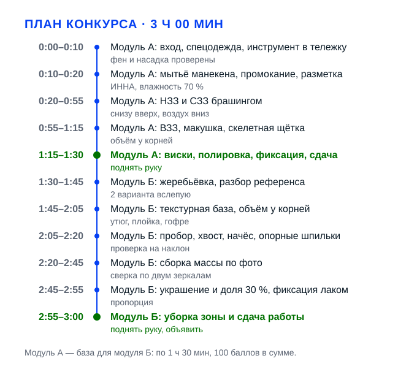

Парикмахерское искусство (Р,О)
Задания ниже — официальные файлы «Абилимпикс» (источник: abilympics-russia.ru), разложенные по категориям. Решения написаны по тексту задания, регламенту и критериям оценки; в них указано, что именно проверяет эксперт.
Школьник
14–16 лет, базовый уровень заданияВыдержка из официального конкурсного задания: страницы, относящиеся к категории «Школьник» (стр. 6–9, 18–19 источника).
Пошаговое решение
Разбор по официальному конкурсному заданию регионального чемпионата «Абилимпикс» 2026 для категории «Школьники». Два модуля по 1 часу 30 минут и 100 баллов: модуль А — женская укладка феном на длинных волосах манекен-головы «Инна» с брашингом и скелетной щёткой, модуль Б — собранная причёска по референсу, который вытягивается вслепую. Модуль А подготовительный: база из него уходит в причёску. В модуле А запрещены шпильки, невидимки, резинки, утюги, гофре и валики; в модуле Б разрешены любые электроинструменты, шпильки и резинки, но валики по-прежнему нельзя, а украшение не должно занимать больше 30 % причёски. Задание разбито на четыре задачи: организация зоны и манекена, укладка феном, сборка причёски по референсу и сдача работы. В каждом шаге — что и как делать, зачем это по критериям с баллами, как проверить результат, что обычно идёт не так и на что смотрит эксперт.

Задача 1. Подготовить рабочую зону и манекен-голову к модулю АМодуль А · организация работы 20 баллов
Модуль А длится 1 час 30 минут, и 20 из его 50 баллов отданы организации работы — то есть две пятых модуля набираются до того, как вы возьмёте фен в руки. Здесь всё проверяемое и всё быстрое: собранная тележка, проверенный электроинструмент, вымытая и промокнутая манекен-голова «Инна», расчёсанные на зоны волосы. Задача кажется служебной, но именно она решает, останется ли у вас время на саму укладку: десять минут, потерянных на поиск зажима, — это две недосушенные пряди.
Действие 1.1. Собрать тележку и проверить электроинструмент
Шаг 1.1.1
До старта достаём фен, расправляем шнур на всю длину и проводим пальцами по изоляции: у вилки и у выхода из корпуса ищем потёртости, потому что кабель ломается именно там. Ставим на сопло узкую насадку-концентратор и доводим до щелчка: без неё поток разлетается в стороны и пушит волосы вместо того, чтобы укладывать их в прядь. Прогоняем все режимы — холодный, средний, горячий — и обе скорости потока, отдельно зажимаем кнопку холодного обдува и смотрим, что она возвращается обратно. Держим фен за рукоятку, а не за голову корпуса: ладонь не должна перекрывать решётку забора воздуха.
Проверка работы электроинструмента прямо прописана в описании модуля А и входит в блок «Организация работы» — 20 баллов из 50. Фен, который отключается на горячем режиме через десять минут, оставляет половину головы недосушенной, а по конкурсному заданию волосы должны быть высушены полностью по всей длине. Залипшая кнопка холодного обдува — это потеря финальной фиксации формы, ради которой её и нажимают после каждой пряди.
Шнур целый по всей длине, насадка сидит плотно и не проворачивается, все режимы переключаются без заеданий, холодный обдув включается и выключается. Подержите фен включённым на среднем режиме минуту: корпус должен остаться тёплым, а не горячим.
Берут фен «как есть» и находят проблему на третьей пряди, когда время модуля уже идёт. Вторая ошибка — работать без концентратора: поток идёт в стороны, прядь пушится, и вместо гладкой проработанной поверхности получается пух, за который снимают баллы по технологии.
Эксперт смотрит на первые минуты модуля: включён ли фен до начала работы, стоит ли насадка, лежит ли инструмент под рукой, а не в закрытом кейсе. Проверку шнура он фиксирует отдельно: повреждённая изоляция — это уже нарушение безопасности.
Шаг 1.1.2
Раскладываем щётки по порядку использования, а не по размеру: сверху тележки брашинг 25–30 мм для височных прядей, под ним 35 мм для основной массы и 43–50 мм для подъёма у корней на теменной зоне. Скелетную щётку кладём отдельно, потому что ею работают не на длине, а у корней и на финише. Рядом — расчёска с редкими зубьями для расчёсывания перед работой и зажимы-крабики по числу зон, обычно шесть. Порядок на тележке должен повторять порядок движений: то, что берётся первым, лежит ближе к правой руке.
На «Организацию работы» в модуле А приходится 20 баллов, и оценивают её глазами: по тележке видно, продумана ли последовательность. Когда брашинг нужного диаметра лежит под рукой, прядь снимается со щётки и сразу идёт следующая — а когда вы каждый раз перебираете инструмент, теряется не только время, но и натяжение: прядь остывает, форма уходит.
На тележке нет ничего лишнего, каждый инструмент на своём месте, зажимов хватает на все зоны. Проверьте рукой: взяв брашинг, вы не задеваете соседние щётки. Если задеваете — переложите. Если щётки перекатываются по тележке, значит, их положили слишком близко друг к другу.
Свалить все щётки в один стакан и искать нужную на ощупь. Или взять один брашинг «на всё»: на висках крупный диаметр не захватывает прядь, на макушке мелкий не даёт объёма. Третья — не проверить, что кнопка холодного обдува возвращается: зажатая, она останется такой на весь модуль.
Эксперт оценивает, как организована тележка и хватает ли участнику инструмента, чтобы не прерывать работу. Отмечает и то, хватает ли на тележке инструмента, чтобы не прерывать работу на поиск.
Шаг 1.1.3
Собираем средства и расходники: термозащитный спрей, лак средней фиксации, пульверизатор с водой, два полотенца — одно для промокания, второе сухое для финиша. Отдельно проверяем то, чего в модуле А быть не должно: шпильки, невидимки, резинки, утюг и гофре по условиям модуля запрещены, и валики-наполнители запрещены тоже. Убираем их из зоны совсем, а не в нижний ящик тележки: эксперт обходит рабочее место и видит то, что лежит на виду. Шпильки и резинки достанем только к модулю Б, где они разрешены.
Запреты в модуле А жёсткие и перечислены в задании отдельным списком, а нарушение оборудования — это не спор о технике, а снятые баллы по организации. Кроме того, шпильки и утюг соблазняют «поправить» укладку, а модуль А оценивает именно работу феном и щётками: форма и проработанность структуры, полученные руками и воздухом.
На столе и в тележке только разрешённое. Пройдите взглядом по поверхности и назовите вслух каждый предмет — это быстрее, чем потом объясняться с экспертом. Лак и термозащита открыты и стоят так, чтобы брать их одной рукой.
Оставить утюг «на всякий случай» в нижнем ящике: его всё равно увидят при обходе, а выглядит это как готовая попытка обойти правила. Вторая ошибка — не проверить, что лак вообще работает: пустой баллон обнаруживается на фиксации, когда исправлять уже нечего.
Отдельный пункт обхода: наличие запрещённого оборудования и средств в соревновательной зоне. Смотрит он и на то, закрыты ли баллоны и не лежит ли инструмент на рабочей поверхности.
Действие 1.2. Подготовить и вымыть манекен-голову «Инна»
Шаг 1.2.1
Ставим манекен на штатив и выставляем высоту так, чтобы макушка была на уровне ваших глаз или чуть выше — тогда рука с феном идёт сверху вниз, а не снизу вверх, и поток воздуха естественно направлен по росту волоса. Проверяем крепление: голова не должна проворачиваться от натяжения пряди, иначе каждая укладка будет сбивать её в сторону. Осматриваем волосы: длину, состояние концов, направление роста, есть ли уже заломы от предыдущих тренировок — на них брашинг цепляется.
Модуль А выполняется на учебной манекен-голове «Инна», и её состояние — часть вашей работы: на неподготовленном манекене волосы путаются, прядь рвётся, и вместо гладкой поверхности получается пушистая масса. Высота штатива напрямую влияет на направление потока воздуха, а по заданию воздух всегда идёт вниз — работать с низкого штатива физически неудобно.
Голова держится неподвижно, если потянуть прядь вниз; штатив не шатается; макушка на уровне глаз. Проверьте рукой: проведите по волосам от корней к концам — пальцы должны идти свободно, без зацепов и узелков.
Начать работу на манекене, который «сваливается» набок, и полмодуля придерживать его левой рукой. Вторая ошибка — не осмотреть концы: секущиеся волосы цепляются за щетину брашинга и рвутся при снятии с щётки.
Эксперт обращает внимание, насколько уверенно участник управляется с манекеном: устойчивость штатива и правильная высота читаются сразу. Отмечает, не приходится ли участнику придерживать голову рукой во время работы.
Шаг 1.2.2
Моем голову под проточной водой 36–38 °C: тёплее — раскрывается кутикула и волос грубеет, холоднее — шампунь плохо смывается. Наносим шампунь в ладонь, вспениваем и распределяем по всей длине, работая подушечками пальцев, а не ногтями; при сильном загрязнении намыливаем дважды. Промываем тщательно, до скрипа под пальцами, затем наносим бальзам только по длине, отступая от корней на 5–7 см, и смываем через минуту. Манекен держим над раковиной так, чтобы вода шла от корней к концам.
Мытьё манекен-головы прямо вписано в описание модуля А, и это не формальность: на плохо промытых волосах остаётся плёнка от шампуня и старого стайлинга, прядь склеивается, и брашинг не даёт гладкой проработанной поверхности. Бальзам у корней утяжеляет волос, и прикорневой объём, за который дают баллы по технологии, просто не поднимется.
Волосы скрипят под пальцами, вода стекает чистая, пены нет. Проведите прядью между пальцами — она должна идти гладко, без мыльного скольжения и без остатков средства. Проверьте также, что вода уходит чистой, а не мыльной: это признак плохого промывания.
Намылить один раз и смыть наспех: остатки шампуня дают тусклый налёт, который потом виден на фотографии работы. Вторая ошибка — нанести бальзам на корни, а потом удивляться, что объём не держится. И третья — не смыть бальзам полностью: волос теряет объём и блеск.
Эксперт может пройти мимо раковины в начале модуля; оценивается и сам факт мытья, и аккуратность работы с водой. Ему важно видеть, промывает ли участник манекен до скрипа, а не «для вида».
Шаг 1.2.3
Промокаем волосы полотенцем: прижимаем и собираем воду ладонями по всей длине, не трём — от трения кутикула поднимается, и волос пушится ещё до сушки. Меняем полотенце, когда оно перестаёт впитывать. Доводим до влажности примерно 70 %: волосы влажные на ощупь, но с них не течёт. Такое состояние — рабочее для брашинга: на мокром волосе щётка не протягивает прядь, на сухом — вы просто жжёте его воздухом. Расчёсываем от концов к корням, отделяя пряди пальцами.
Отжать волосы полотенцем до 70 % — это экономия времени внутри 1 часа 30 минут и одновременно технологическое требование: брашинг работает на влажном волосе, формуя его, а не досушивая лужу. Расчёсывание от концов к корням снимает узелки, из-за которых прядь рвётся при натяжении и на манекене остаётся клок.
Волосы не капают, полотенце остаётся влажным, а не мокрым. Проведите расчёской от концов к корням по всей голове один раз: если расчёска идёт свободно, можно начинать деление на зоны. Второе полотенце должно остаться сухим — оно понадобится на финише, после лака.
Тереть голову полотенцем «чтобы быстрее»: волос пушится, и дальше вы боретесь не с формой, а с пухом. Вторая ошибка — начать сушку на мокрых волосах: прядь не держит натяжение, брашинг проворачивается в ней.
Эксперт смотрит на влажность волос в момент, когда участник берёт фен: слишком мокрые или уже пересушенные волосы видны по работе щётки. Отдельно отмечает, меняет ли участник полотенце, когда оно намокло.
Действие 1.3. Разделить волосы на зоны и подготовить пряди
Шаг 1.3.1
Делим волосы на зоны до начала сушки. Первый пробор — вертикальный, от середины линии роста волос на лбу до нижней затылочной зоны. Второй — горизонтальный, от уха до уха через макушку. Так получаются две височные зоны, теменная и затылок, который мы делим ещё на три уровня: нижняя затылочная (НЗЗ), средняя (СЗЗ) и верхняя (ВЗЗ). Каждую зону скручиваем в некрутой жгут или закалываем крабиком, чтобы волосы не мешали и не путались между собой.
Конкурсное задание задаёт маршрут буквально: «начиная с НЗЗ, двигаясь вверх и к вискам». Разметка нужна, чтобы этот маршрут не сбивался: если вы начнёте с теменной зоны, длинные нижние пряди высохнут сами и лягут как попало, а потом их придётся увлажнять заново — потеря времени и качества при 18 баллах за технологию.
Проборы ровные, зоны отделены друг от друга, ни одна прядь не выбивается из жгута. Проверьте расчёской: проведите по границе пробора — волосы не должны переходить из зоны в зону. На фото разметка видна как ровные линии, без ступенек на границе зон.
Делить «примерно» и ловить выбившиеся пряди во время сушки. Вторая ошибка — закрутить жгут туго: на месте скрутки остаётся залом, который потом не разглаживается. Третья ошибка — закалывать сразу все зоны и потом искать нужную по кругу.
Аккуратность проборов и порядок зон — первое, что эксперт видит, подходя к рабочему месту. Сверяет разметку с маршрутом из задания: от НЗЗ вверх и к вискам.
Шаг 1.3.2
Соблюдаем порядок: НЗЗ → СЗЗ → ВЗЗ → височные зоны → теменная. Внутри каждой зоны идём горизонтальными рядами снизу вверх, отделяя пряди шириной с брашинг и толщиной 1,5–2 см. Незакрытые волосы всё время держим заколотыми: снятая со щётки горячая прядь не должна ложиться на ещё влажные соседние. Пряди берём по одной и сразу закрываем зажимом соседние, чтобы они не сохли.
Логика движения снизу вверх простая: пока вы работаете с нижними зонами, верхние остаются заколотыми и не сохнут бесконтрольно. Кроме того, длинные волосы сверху падают на уже уложенные нижние пряди и мнут форму — поэтому снизу вверх, а не наоборот. Тот же порядок прописан в задании, и эксперт сверяет с ним последовательность.
К моменту перехода на следующую зону предыдущая полностью сухая и гладкая, а заколотые волосы не выбиваются. Проверьте у зеркала: линия перехода между зонами не должна быть видна как ступенька. Проверьте рукой: поверхность законченной зоны прохладная и сухая, без холодных участков.
Сушить сверху вниз, «как удобнее руке»: верхние пряди сохнут, пока вы возитесь с нижними, и на границе зон появляется заметная граница. Вторая ошибка — отделять слишком толстую прядь: брашинг не прогревает её до корней.
Последовательность зон — измеримый критерий: эксперт отмечает, шёл ли участник по заданному маршруту. Порядок зон он проверяет по факту движений, а не спрашивает о нём.
Шаг 1.3.3
Перед каждой прядью чуть увлажняем её из пульверизатора, если она подсохла, и наносим термозащитный спрей тонким слоем с расстояния 20–25 см — по длине, не в одну точку. Даём средству впитаться 20–30 секунд, расчёсываем прядь и только потом берём брашинг. Натяжение проверяем рукой: прядь должна идти туго, но не вырываться из головы. Работаем стоя, не наклоняясь к манекену: так рука с феном идёт сверху вниз.
Термозащита — это не формальность, а условие качества: на пересушенном волосе кутикула раскрывается, поверхность становится матовой и шершавой, и «гладкие проработанные волосы по всей длине», которых требует задание, уже не получаются. Среднее, ровное натяжение даёт ровную прядь; слабое — волна вместо гладкости.
Прядь натянута равномерно, средство распределено без капель и без липкости, волос блестит, а не лоснится от средства. Проверьте на ощупь: прядь прохладная и сухая на поверхности. Если прядь липнет к пальцам, средства слишком много — промокните её салфеткой.
Полить прядь термозащитой с близкого расстояния: средство ложится пятном, волос у корней становится жирным, объём не поднимается. Вторая ошибка — работать без термозащиты, рассчитывая, что «манекен всё стерпит».
Наличие и равномерность нанесения средства эксперт видит по блеску и по отсутствию жирных следов у корней. Отдельно смотрит, не льёт ли участник средство прямо на корни.
Задача 2. Выполнить укладку феном с брашингом и скелетной щёткойМодуль А · технология 18 + демонстрация 12
Ядро модуля А: длинные волосы, фен, брашинг и скелетная щётка, без утюга, гофре, шпилек и валиков. Требование задания сформулировано коротко — волосы полностью высушены и проработаны брашингом, форма естественная, объём живой. На технологию отдано 18 баллов, на демонстрацию на модели 12: оценивают не только то, что получилось, но и то, как вы держите фен, в какую сторону идёт воздух и остаётся ли форма после того, как щётка убрана. Модуль А — подготовительный для модуля Б, поэтому база отсюда пойдёт в причёску, и экономить на ней нельзя.
Действие 2.1. Высушить нижнюю затылочную зону
Шаг 2.1.1
Распускаем НЗЗ, делим её на горизонтальные ряды шириной 3–4 см и отделяем первую прядь у самого края роста волос: толщина 1,5–2 см, ширина равна диаметру брашинга, то есть примерно 35 мм. Остальные волосы снова закалываем, но не туго — так, чтобы снять их одним движением. Фен берём в правую руку, брашинг в левую, если работаем справа, и наоборот при работе слева: щётка всегда идёт впереди потока воздуха.
Толщина пряди — главный технический параметр всей укладки. Слишком толстую прядь брашинг не прогревает до корней, и внутри остаётся влага; слишком тонкую приходится греть дольше, и волос пересушивается. Ширина, равная диаметру щётки, даёт ровное натяжение по всей пряди — а это и есть «проработанность структуры», за которую в модуле А дают баллы по технологии.
Прядь лежит на щётке ровным слоем, без перехлёстов, концы не свисают с края. Проверьте на натяжении: вся прядь идёт одним полотном, а не распадается на отдельные волоски. Снимите прядь со щётки и посмотрите на неё против света: она должна быть ровной по всей длине.
Взять прядь «на глаз», втрое толще щётки: сверху волос сухой и гладкий, внутри влажный, и через десять минут форма осядет. Вторая ошибка — начать с пряди у лица вместо края роста: там волос короче и тоньше, его легко перегреть.
Эксперт смотрит на пряди в руках: ровные, одинаковой толщины, без вырванных клочьев. Он проверяет, отделяет ли участник прядь заново после каждой сушки, а не тянет одну и ту же.
Шаг 2.1.2
Заводим брашинг под корень пряди и поднимаем её перпендикулярно голове — на 90 градусов к поверхности, именно этот угол даёт прикорневой объём. Включаем средний температурный режим и среднюю скорость потока, сопло держим в 2–3 см от пряди и направляем воздух строго вниз, по росту волоса. Прогреваем основание пряди 3–5 секунд, затем, не отпуская натяжения, ведём брашинг вниз по пряди, а фен идёт за щёткой с отставанием в полкорпуса. Движение повторяем два-три раза, пока прядь не станет сухой на ощупь.
В задании прямо сказано: «вытягивая пряди от корней к кончикам, всегда направляя поток воздуха вниз». Воздух против роста волоса поднимает кутикулу — поверхность получается шершавой и матовой, и волос пушится уже через десять минут. Угол 90 градусов у корня — единственный способ поднять объём без утюга и гофре, которые в этом модуле запрещены.
Прядь сухая по всей длине, гладкая, блестящая, при отпускании пружинит и держит форму, а не опадает. Проверьте тыльной стороной ладони у корней: если чувствуется прохлада от влаги — продолжайте прогревать основание.
Водить феном вверх-вниз по одной пряди: кутикула поднимается, волос пушится, и вместо проработанной поверхности получается облако. Вторая ошибка — держать сопло вплотную: точечный перегрев оставляет жёсткий залом, который не убрать без повторного увлажнения.
Технология работы феном — 18 баллов: эксперт следит за углом щётки, направлением сопла и натяжением пряди, а не только за готовым результатом. Смотрит на расстояние от сопла до волоса: вплотную — значит перегрев.
Шаг 2.1.3
Снимаем прядь со щётки не выдёргиванием, а прокручивая брашинг в обратную сторону и придерживая волосы ладонью, чтобы не вытянуть завиток в кольцо. Сразу зажимаем готовую прядь у корня между пальцами на пару секунд, пока она остывает: форма фиксируется именно в момент остывания. Переходим к следующей пряди того же ряда, двигаясь от края роста волос к центру НЗЗ, и только потом поднимаемся на ряд выше.
Снятие с щётки — самый частый источник брака: если тянуть, прядь выходит кольцом или узлом, и её приходится мочить заново, теряя время модуля. Остывание под натяжением — это физика укладки: волос запоминает форму, которую держал горячим, поэтому двух секунд с ладонью хватает, чтобы объём остался до сдачи.
Прядь ровная по всей длине, без колец и заломов, конец не закручен спиралью. Проверьте на просвет: поверхность гладкая, без волновых переливов на одном уровне. Готовая прядь не должна пружинить при сжатии — пружина означает недосушенный корень.
Сдёрнуть щётку и оставить прядь остывать свободно — форма опадает, и к моменту фиксации объём уже не вернуть. Вторая ошибка — недосушить нижние пряди: именно они дают «мокрый» вид всей работе, а эксперт проверяет сухость под затылком в первую очередь.
Демонстрация на модели — 12 баллов: недосушенные и заломленные пряди в НЗЗ видны сзади, а эксперт обходит манекен со всех сторон. Его интересует, снимается ли прядь со щётки без рывка и без кольца на конце.
Действие 2.2. Пройти среднюю и верхнюю затылочную зону
Шаг 2.2.1
Освобождаем СЗЗ, снимая зажимы по одному, и работаем горизонтальными рядами снизу вверх. Пряди здесь шире и длиннее, поэтому берём брашинг 35 мм и держим натяжение чуть сильнее, чем в НЗЗ: тяжёлый длинный волос при слабом натяжении даёт волну. Направление движения — вниз и слегка назад, к затылку, чтобы масса ложилась под естественный изгиб головы, а не вставала от корня под углом.
Средняя затылочная зона — самая заметная часть укладки при взгляде сзади, и по ней читается качество работы: ровная поверхность без ступенек либо пушистые волны. Кроме того, СЗЗ даёт основу для объёма в модуле Б: если здесь волос ляжет плоско, причёску придётся тянуть начёсом, и она выйдет тяжёлой и не соответствующей референсу.
На границе с НЗЗ нет видимой ступеньки, плотность волоса одинаковая, концы не закручены внутрь кольцом. Проведите расчёской поперёк пряди — она должна идти без сопротивления и без рывков. Сравните обе половины затылка: плотность волоса слева и справа должна совпадать.
Работать в СЗЗ тем же углом 90 градусов, что и внизу: объём получается только у корней, а середина пряди остаётся волнистой и рябой. Вторая ошибка — оставить зажимы на верхних зонах тугими, тогда на месте крепления остаются глубокие заломы, не разглаживаемые брашингом.
Ровность перехода между зонами — прямой критерий технологии: эксперт проводит рукой по затылку и чувствует ступеньку сразу. Отмечает, снимает ли участник зажимы заранее или выдёргивает пряди из-под них.
Шаг 2.2.2
Поднимаемся на ВЗЗ и макушку. Здесь меняем брашинг на 43–50 мм: крупный диаметр поднимает корень и одновременно приглаживает длину. Прядь отделяем по диагонали от макушки, поднимаем под углом 90 градусов, прогреваем основание и прокручиваем щётку так, чтобы волос накручивался на её верхнюю часть — тогда корень встаёт, а концы остаются гладкими. Движение заканчиваем, не снимая натяжения, и только потом отпускаем.
Верхняя затылочная зона и макушка формируют силуэт: по заданию законченная работа должна иметь естественный объём и форму. Крупный брашинг здесь не роскошь, а инструмент — мелким вы просто не поднимете корень на длинном волосе и высушите его в натянутую плоскость.
Макушка визуально приподнята, переход от макушки к затылку плавный, без провала. Посмотрите в зеркало сбоку: линия от лба к затылку должна быть округлой, а не прямой. Зажмите прядь у корня: она не должна оседать под пальцами, как мокрая.
Прокручивать брашинг, зажимая концы: они выходят спиралью и торчат в стороны, а исправить это можно только повторной сушкой. Вторая ошибка — работать на макушке горячим режимом вплотную: перегрев даёт жёсткий стоячий волос, который потом не уложить.
Форма силуэта — часть 18 баллов за технологию: эксперт оценивает, читается ли объём и где он расположен. Смотрит со стороны, читается ли объём на макушке при взгляде сбоку.
Шаг 2.2.3
После каждой пряди, пока она ещё на щётке, даём 5–7 секунд холодного обдува: переводим фен в режим холодного воздуха, держим сопло в 3–4 см и только потом снимаем волос со щётки. Холодный воздух закрывает кутикулу — поверхность становится плотной и блестящей, а форма перестаёт опадать. На всю зону уходит около минуты, но именно эта минута отделяет просто высушенные волосы от уложенных.
Холодный обдув — единственный разрешённый в модуле А способ зафиксировать форму: лак даёт поверхностную плёнку, а нам нужно, чтобы прядь держала изгиб сама. Без холодного воздуха волос остывает свободно, и к концу модуля объём проседает — а демонстрация на модели оценивается в момент сдачи, то есть спустя время после начала работы.
Прядь на ощупь прохладная и плотная, блеск ровный по всей длине, при отпускании форма остаётся. Сравните прядь после холодного обдува и без него: на просвет разница видна как разница между матовой и глянцевой поверхностью.
Пропустить холодный обдув «потому что и так держится»: сразу держится, а через двадцать минут объём садится. Вторая ошибка — дуть холодным вплотную: переохлаждение и конденсат дают матовый налёт на поверхности.
Эксперт следит, пользуется ли участник холодным режимом: это отдельный признак владения феном. Отмечает, сколько раз участник повторно проходит по уже сухой пряди.
Действие 2.3. Отработать височные и теменную зоны
Шаг 2.3.1
Переходим к височным зонам — по заданию движение идёт «вверх и к вискам». Здесь берём брашинг 25–30 мм: пряди тонкие, кожа у виска чувствительная, крупная щётка их просто не захватывает. Отделяем прядь толщиной не больше 1 см, натягиваем вниз и чуть назад, к затылку, и ведём воздух строго вниз. У линии роста работаем короткими движениями, не задерживая сопло на одной точке дольше двух секунд.
Височные зоны видны анфас и при этом самые уязвимые: здесь легко перегреть волос и оставить залом, который бросается в глаза рядом с лицом. Направление вниз и назад задаёт естественное падение пряди — волосы не прижимаются к щеке и не встают от корня, как после вертикальной сушки.
Волосы у виска гладкие, лежат мягкой волной, не топорщатся и не прижаты к голове. Проверьте обе стороны: правая и левая височные зоны должны совпадать по объёму и направлению. Посмотрите на височные пряди сбоку: они должны лежать одной волной, а не отдельными пучками.
Сушить височные зоны крупным брашингом, которым работали на затылке: прядь соскальзывает, и у лица остаётся пушистый клок. Вторая ошибка — направить воздух вверх, чтобы «поднять» волосы: они встают дыбом и потом не ложатся ни в какую форму.
Симметрия височных зон — часть оценки демонстрации на модели: эксперт смотрит работу анфас. Височные пряди он проверяет на ощупь: у корня они должны быть сухими и прохладными.
Шаг 2.3.2
Теменную зону и фронтальную линию отрабатываем скелетной щёткой: у неё нет щетины, зубья проходят до кожи и дают воздуху доступ прямо к корню. Заводим зубья под прядь у самого основания, чуть приподнимаем её и подаём воздух в основание 3–5 секунд, затем протягиваем щётку вверх и назад, а поток ведём за ней. Так корень встаёт, а длина остаётся гладкой и не пушится.
Скелетная щётка указана в задании отдельно, рядом с брашингом, и это единственный инструмент, которым можно поднять корень, не накручивая волос на щётку. На длинных волосах у лица объём у корней — половина впечатления от укладки: без него волосы выглядят прилизанными, сколько бы блеска вы ни вытянули брашингом.
Корни у линии роста подняты, но волос не стоит иглами: он лежит мягкой волной от корня. Прижмите ладонью — волосы должны вернуться в объём, а не остаться примятыми. Проверьте, не осталось ли на поверхности манекена матовых пятен от перегрева.
Держать скелетную щётку плашмя и просто грести ею волосы: воздух у корня не работает, объём не поднимается. Вторая ошибка — греть корень на горячем режиме вплотную к коже: волос у линии роста пересушивается и начинает торчать.
Умение работать скелетной щёткой — отдельный признак в критерии технологии: задание перечисляет её как обязательный инструмент модуля. Отдельно смотрит на линию роста волос: она должна остаться чистой, без следов средства.
Шаг 2.3.3
Проверяем, что нигде не осталось влажных участков: у корней на НЗЗ, за ушами, на границе височной и затылочной зон и в самой нижней пряди на шее. Именно там волос сохнет последним, потому что его закрывают соседние пряди. Влажные места проходим ещё раз, отделяя тонкую прядь и направляя воздух в основание; сухие не трогаем — повторный проход по сухому только перегревает.
Задание требует, чтобы волосы были высушены полностью по всей длине, и это проверяется на ощупь при оценивании. Одна влажная прядь на затылке — минус по демонстрации на модели: работа выглядит незаконченной, а через полчаса на этом месте появится завиток, и укладка перестанет держать форму.
Сухость проверяем тыльной стороной ладони и бумажной салфеткой: приложите её к корням — влажного пятна остаться не должно. Пройдите по пяти точкам: два виска, макушка, центр затылка, низ затылка. Проверяйте в трёх положениях: голова прямо, наклонена вперёд, наклонена вбок.
Проверять сухость только сверху, где волос высох первым, и не смотреть под затылок. Вторая ошибка — досушивать влажное место, не отделяя прядь: верхний слой пережигается, а внутри остаётся влага. Третья — сушить влажное место, не сняв зажим с соседней пряди: она мешает потоку.
Эксперт проверяет сухость тактильно, поднимая пряди у корней: это одна из первых проверок после объявления об окончании работы. Проверка идёт от низа затылка вверх, а не наоборот, и это видно по порядку движений.
Действие 2.4. Отполировать длину и зафиксировать укладку
Шаг 2.4.1
Собираем всю массу волос и проходим по поверхности скелетной щёткой или брашингом большего диаметра на средней скорости: щётка идёт по длине сверху вниз, фен с отставанием в полкорпуса, поток вниз. Это полировка, а не формирование: движения длинные, от макушки до концов, по два-три прохода на участок. Затем ещё раз проходим холодным воздухом по всей поверхности и даём волосам остыть в покое.
Полировка убирает мелкую рябь, которая остаётся после работы с прядями по отдельности, и собирает массу в единую форму. Именно на этом этапе работа начинает выглядеть как салонная укладка, а не как аккуратно высушенные волосы, — а в модуле А оценивают форму и проработанность структуры.
Поверхность гладкая на просвет, без волновых пятен; масса волос движется как единое полотно, если покачать её рукой у корней. Проверьте при боковом свете — при прямом мелкая рябь не видна. Если щётка цепляется и скрипит, на пряди осталось средство — просушите участок ещё раз.
Полировать влажные волосы: щётка цепляется, волос тянется и рвётся. Вторая ошибка — полировать слишком долго и перегреть верхний слой до тусклого, словно запылённого блеска. Третья — полировать против роста волоса: поверхность пушится и теряет блеск.
Ровность поверхности и блеск — прямые признаки качества технологии, эксперт смотрит работу на просвет. Смотрит на просвет вдоль поверхности: мелкая рябь видна именно так, а не анфас.
Шаг 2.4.2
Наносим лак средней фиксации: баллон держим на 25–30 см, распыляем короткими импульсами по поверхности, сначала с одной стороны, потом с другой, и обязательно снизу, приподнимая пряди ладонью. Не льём струю в одну точку и не заливаем корни. Даём лаку высохнуть 15–20 секунд и только после этого поправляем форму руками: до высыхания любое касание оставляет след.
Фиксация укладки входит в описание модуля А отдельным пунктом, и от неё зависит, доедет ли форма до момента оценивания. Тонкий слой держит объём и оставляет волос подвижным; плотный слой склеивает пряди в сосульки, и работа выглядит грязной — это уже потеря баллов за демонстрацию.
На волосах нет белого налёта и склеенных прядей, форма держится при лёгком нажатии и возвращается. Проверьте на тёмном фоне: белые точки лака видны сразу, особенно на висках. Проверьте ладонью: волос не должен липнуть к руке после высыхания лака.
Держать баллон в 10 см и залить одну зону: остаются капли и белый налёт, который невозможно убрать без пересушки. Вторая ошибка — фиксировать лаком волосы, на которых ещё не впиталась термозащита: лак ложится плёнкой и не держит.
Равномерность фиксации и отсутствие налёта эксперт проверяет визуально при обходе зоны. Он проверяет, распыляет ли участник лак импульсами, а не одной струёй в одну точку.
Шаг 2.4.3
Обходим манекен и смотрим результат с четырёх точек: анфас, оба профиля и сзади. Проверяем, что объём распределён равномерно, линия роста волос чистая, на затылке нет ступеньки между зонами, концы не торчат в разные стороны. Найденный дефект исправляем точечно — отделяем тонкую прядь и проходим её брашингом с холодным обдувом, а не заливаем лаком. Найденные дефекты записываем на салфетку, чтобы не забыть, что править.
Демонстрация на модели — 12 баллов из 50, и это оценка того, как работа выглядит целиком, а не по прядям. Дефекты, невидимые спереди, прекрасно видны сзади, и именно сзади эксперт смотрит в первую очередь: там проверяют проработанность НЗЗ. Обход со всех сторон входит в демонстрацию на модели, и это 12 баллов модуля.
Со всех четырёх точек силуэт читается одинаково, переходы плавные, концы лежат в одном направлении. Сфотографируйте работу на телефон с каждой стороны — на фото дефекты видны резче, чем в зеркале. Снимите фото и сравните с тем, что видите в зеркале: расхождения сразу заметны.
Оценивать работу только по зеркалу перед собой и не посмотреть затылок. Вторая ошибка — поправлять форму после фиксации лаком: остаются следы пальцев и белые разводы, которые снимают баллы за демонстрацию.
Финальный осмотр — момент, когда эксперт фиксирует общее впечатление от модуля А. Фиксирует, обходит ли участник манекен целиком или ограничивается зеркалом перед собой.
Задача 3. Собрать причёску по референсу, вытянутому вслепуюМодуль Б · технология 21 + демонстрация 9
Модуль Б — тот самый блок, где задание меняется на 30 %: главный эксперт региона готовит два варианта референса, участник тянет свой вслепую и дальше работает строго по фото. Время — 1 час 30 минут, 50 баллов, из них 21 за технологию и 9 за демонстрацию. Здесь разрешено то, что было запрещено в модуле А: любые электроинструменты, шпильки, невидимки, резинки и укладочные средства. Запрещены только валики-наполнители, а украшение не должно занимать больше 30 % причёски. Главный риск модуля не в руках, а в глазах: причёска должна повторять форму и текстуру с фото, а не вашу любимую технику.
Действие 3.1. Прочитать референс и разложить его на элементы
Шаг 3.1.1
Тянем конверт с референсом на жеребьёвке, вскрываем и первые две-три минуты не делаем ничего руками: кладём фото на стойку на уровне глаз, отходим на шаг и смотрим молча. Потом переворачиваем фото и смотрим ещё раз — так видно силуэт без деталей. Если на площадке два варианта референса, сравнивать их между собой бессмысленно: вы работаете только со своим, даже если второй кажется проще.
Модуль Б вариативный, и 30 % изменения задания приходится именно на него: референс вытягивается вслепую, и подготовиться под конкретную причёску нельзя. Оценивают совпадение с фото, а не красоту вашей идеи, поэтому первые минуты уходят на чтение задания, а не на начёс: технология здесь стоит 21 балл, и почти все они теряются на несовпадении формы.
Вы можете назвать вслух три вещи: где центр массы, на какой высоте она находится и куда направлены концы. Если не можете — смотрите фото дальше, время на это ещё есть. Запишите на салфетке три слова о силуэте — через час память подменит детали.
Сразу хвататься за расчёску и начинать «как обычно»: к середине модуля выясняется, что масса должна была быть низкой, а вы строите высокую, и переделка съедает весь запас времени. Третья — отложить фото в сторону и дальше работать по памяти.
Эксперт отмечает, смотрел ли участник на референс вообще: на площадке это видно по первому движению рук. Отмечает, сколько времени ушло на чтение референса: больше пяти минут — уже потеря.
Шаг 3.1.2
Разбираем фото на пять показателей и записываем их коротко, маркером на салфетке или в блокнот: силуэт (высокий, низкий, широкий, вытянутый), линия пробора и её направление, текстура (гладкая, волна, мелкий завиток, начёс), точка крепления массы (низкий пучок, высокий, набок, по центру) и украшение с его местом. Отдельно смотрим, открыто ли лицо и уши и какая прядь выпущена свободно.
По заданию причёска оценивается по двум показателям — форма и текстура, и именно они дают основную часть из 21 балла за технологию. Пять пунктов разбора превращают картинку в план работы: вы заранее знаете, где будет каркас, а где видимая часть, и не изобретаете композицию по ходу.
У вас на руках пять коротких записей, и каждая проверяема: силуэт, пробор, текстура, точка крепления, украшение. Покажите их себе через час — по ним же и сравнивайте результат с фото. Каждый пункт разбора должен называться одним словом: иначе он слишком общий.
Смотреть на фото «в целом» и запомнить только общее впечатление: через сорок минут работы память подменяет детали, и вы собираете похожее, но не то. Вторая ошибка — разбирать фото по деталям, не увидев силуэт.
Умение читать референс — часть критерия технологии; эксперт видит, совпадает ли структура причёски со структурой на фото. Сверяет по ходу работы, держится ли участник собственного разбора фото.
Шаг 3.1.3
Строим план в обратном порядке: сначала решаем, что будет держать массу (резинка, шпильки, начес), потом — какая текстура нужна и каким инструментом её делать, и только в конце — как выглядит поверхность. Прикидываем время: 20 минут на текстуру, 25 на каркас, 25 на сборку, 10 на украшение, остальное — запас. Референс ставим так, чтобы он был виден с рабочего места и не приходилось разворачиваться.
Обратный порядок — единственный способ уложиться в 1 час 30 минут: если сначала делать красивые локоны, а потом думать, чем держать массу, каркас придётся вставлять в уже готовую текстуру и ломать её. План по времени нужен и потому, что украшение по заданию вводится в последнюю очередь, и на него должно остаться место.
План записан, время разложено по этапам, фото закреплено перед глазами. Проверьте, что до середины модуля у вас будет готова база, иначе этапы начнут наезжать друг на друга. Отметьте время старта на телефоне: по нему вы будете сверять этапы модуля.
Планировать «по ходу» и спохватываться за двадцать минут до сдачи. Вторая ошибка — отвести на украшение полчаса: по заданию это финальный штрих, а не основа причёски. Третья — не оставить запас времени на фиксацию: она всегда занимает больше, чем кажется.
Соблюдение тайминга модуля входит в блок организации работы: 20 баллов из 50. Смотрит, уложился ли участник в этапы, которые сам наметил, и не начал ли сборку раньше времени.
Действие 3.2. Подготовить текстурную базу
Шаг 3.2.1
Выбираем инструмент под ту текстуру, которая на фото. Гладкая поверхность — утюжок на 180 °C и пряди толщиной 1–1,5 см, волна — плойка 25–32 мм с намоткой в одном направлении, объёмная «взъерошенная» фактура — гофре или утюжок с оттяжкой у корня. В модуле Б электроинструменты разрешены любые, поэтому выбираем не «что привычнее», а что даёт нужный рисунок. Перед работой наносим термозащиту по всей длине и даём ей впитаться.
Текстура — второй из двух показателей, по которым оценивают причёску, и она определяет, узнается ли референс. Гладкие волосы, собранные в форму «на фото были локоны», читаются как работа не по заданию, сколько бы аккуратно это ни было сделано. Запреты модуля А здесь снимаются, и не использовать это — значит усложнять себе жизнь вручную.
На пробной пряди рисунок совпадает с фото: тот же размер волны или та же гладкость. Проверьте при боковом свете — рисунок должен читаться, а не сливаться. Проверьте, что пробная прядь лежит отдельно и её видно при боковом свете.
Брать утюжок «на глаз», без термозащиты: волос начинает лосниться и теряет объём, а завиток получается плоским. Вторая ошибка — делать всю голову одной температурой, хотя у корней волос тоньше и перегревается быстрее.
Соответствие текстуры референсу эксперт проверяет, сравнивая фото и работу вблизи. Сравнивает текстуру с фото крупным планом, а не на расстоянии вытянутой руки.
Шаг 3.2.2
Прорабатываем всю длину по зонам, отделяя пряди по 1,5–2 см: от НЗЗ кверху, как в модуле А. Плойку держим вертикально или горизонтально в зависимости от нужного направления волны, прогреваем 5–8 секунд, снимаем и даём завитку остыть в руке, не растягивая его. Направление намотки на всей голове должно быть одинаковым, если на фото не задано иное: разнонаправленные локоны дают «пушистый» силуэт вместо читаемой формы.
Единое направление намотки — то, что отличает салонную текстуру от случайных кудрей, и именно по нему видно, понимает ли участник, как строится форма. Остывание в руке нужно по той же причине, что и холодный обдув в модуле А: пока завиток горячий, он пластичен и легко растягивается в прямую прядь.
Рисунок одинаковый по всей голове, завитки одного диаметра, концы не перекручены в спираль. Соберите волосы рукой в предполагаемую форму — текстура должна ложиться без сопротивления. Соберите волосы в жгут: завитки должны лечь в одном направлении, без встречных.
Прогревать прядь до «хруста» и держать плойку дольше нужного: волос становится ломким, а завиток — стеклянным, он не держит форму и рассыпается при первом касании. Вторая ошибка — расчёсывать горячие завитки.
Качество текстуры — часть 21 балла: эксперт смотрит на упругость завитка и на его однородность. Проверяет, одинаково ли направление намотки по всей голове и нет ли встречных завитков.
Шаг 3.2.3
Проверяем базу до начала сборки: наносим немного средства для объёма или текстурирующего спрея по длине, слегка взбиваем волосы руками у корней и смотрим, держится ли объём сам. Если референс предполагает высокую посадку, дополнительно проходим корни гофре или утюжком с оттяжкой — это даст опору, которую потом не нужно будет компенсировать начёсом.
База решает, сколько шпилек понадобится и не поплывёт ли причёска к концу модуля. По заданию причёска должна держаться до оценивания, а оценивают её после модуля, когда эксперт обходит зону: работа, осевшая за пятнадцать минут, теряет и технологию, и демонстрацию.
Волосы держат объём без поддержки рукой, корни не прилизаны, текстура не сбилась в комки. Встряхните голову манекена легонько — форма должна вернуться. Проверьте корни на ощупь: они должны быть сухими и тёплыми, без липкости от средства.
Нанести слишком много текстурирующего средства: волос становится жёстким и «скрипит», а шпильки в нём не держатся, они выскальзывают. Вторая ошибка — пропустить этап объёма и потом бороться с плоской макушкой начёсом.
Подготовленность базы видна по тому, как ведёт себя масса при сборке: эксперт наблюдает процесс. Смотрит, добавляет ли участник средство порциями, а не выливает всё сразу на корни.
Действие 3.3. Собрать каркас: пробор, хвост, начёс, опорные точки
Шаг 3.3.1
Делаем пробор точно по референсу: если на фото виден боковой пробор, он идёт от линии роста к затылку под углом, а не по центру. Собираем волосы в хвост или жгут в той точке, которая соответствует фото, и фиксируем резинкой — в модуле Б она разрешена. Резинку берём тонкую и под цвет волос, затягиваем туго, но без перекручивания волоса: перекрут даёт бугор под шпильками.
Положение точки крепления определяет силуэт целиком: сдвинутая на два сантиметра вверх масса уже не совпадает с фото, а переделывать её на готовой причёске почти невозможно. Пробор — вторая по заметности линия после силуэта, и на референсах он читается сразу.
Резинка сидит плотно, хвост не провисает, пробор ровный и совпадает по направлению с фото. Поднимите хвост вверх и отпустите — он должен вернуться в ту же точку. Замерьте высоту хвоста от линии роста волос — на фото это видно достаточно точно.
Ставить резинку «примерно там» и надеяться, что форма сгладит разницу: на сравнении с фото смещение видно сразу. Вторая ошибка — затянуть резинку так, что волос у корней натянут до предела: шпильки потом некуда вводить, они выскальзывают.
Точка крепления — структурный элемент, по которому эксперт сверяет работу с референсом. Сверяет положение точки крепления с фото до начала сборки массы, а не после.
Шаг 3.3.2
Делаем начёс только на внутренних прядях: отделяем прядь 1,5–2 см, берём гребень с частыми зубьями и прочёсываем от концов к корням короткими движениями, 2–3 прохода, не больше. Двигаемся слоями: сначала нижний, затем средний, верхний оставляем гладким и накрываем им начес. Волос при этом придерживаем у корня левой рукой, чтобы не тянуть кожу. Гребень держим под углом к голове, а не плашмя.
Начёс даёт объём и опору для шпилек без валиков, которые в модуле Б запрещены. Больше двух-трёх проходов делать нельзя: волос сбивается в колтун, шпилька входит в него как в вату и не держит, а снаружи появляются бугры, которые не закрыть гладким слоем.
Начёс плотный, но не спутанный: гребень входит с усилием, а не проваливается. Верхний гладкий слой полностью закрывает начёс, ни один завиток не торчит наружу. Проверьте гребнем: он должен входить в начёс с усилием, но не застревать в нём.
Начесать всю массу, включая верхний слой: причёска становится рыхлой, поверхность — бугристой, и текстура с фото теряется. Вторая ошибка — начёсывать мокрый волос, он рвётся. Третья — начесать слой, который потом нечем закрыть сверху.
Объём и плотность каркаса входят в 21 балл за технологию: оценивают, стоит ли форма сама. Смотрит, закрыт ли начёс гладким слоем до того, как введены шпильки.
Шаг 3.3.3
Ставим опорные шпильки: берём шпильку 5–6 см, разводим её ножки, вводим под углом примерно 45 градусов к поверхности головы так, чтобы она цепляла резинку или основание пряди, а не только волос, и закрываем, прижимая к голове. Работаем крест-накрест: одна шпилька держит прядь сверху вниз, вторая перекрывает её под углом. На крупный элемент уходит 3–4 шпильки, на мелкий — одна-две.
Шпилька, которая цепляет только волос, выезжает через десять минут, особенно на гладкой текстуре. Крест-накрест — это страховка: если одна шпилька ослабнет, вторая удержит прядь. На этом этапе закладывается устойчивость работы на всё оставшееся время, а по заданию причёска фиксируется и сдаётся как готовая.
Потяните собранный элемент в сторону: он должен держаться с усилием, а не съезжать сразу. Проверьте пальцем у основания — шпилька не должна торчать остриём в кожу. Потяните каждую шпильку пальцем: она должна сидеть с натяжением, а не выезжать сразу.
Ставить шпильки параллельно друг другу в одну линию: прядь едет по ним, как по рельсам. Вторая ошибка — вводить шпильку плашмя, она не цепляет ничего и просто лежит в волосах. Третья — ставить шпильки в начёс, а не в резинку: они держат пустоту.
Крепление — критерий технологии: эксперт проверяет, держится ли причёска без рук. Проверяет, цепляет ли шпилька резинку или только волос, и под каким углом она введена.
Шаг 3.3.4
Проверяем каркас до того, как закрывать его массой: наклоняем манекен вперёд и в стороны, смотрим, не смещается ли база, не вылезают ли шпильки, не тянет ли где-то волос. Если элемент играет — добавляем шпильку сейчас, а не после сборки, когда сверху уже лежит текстура и поправить что-то незаметно нельзя. Проверку делаем до сборки массы, пока каркас открыт и виден.
Проверка на этом этапе стоит две минуты и спасает весь модуль: переделка готовой причёски занимает втрое больше времени, чем укрепление каркаса. По заданию причёска должна сохранять форму до оценивания, а эксперт обходит зону уже после сдачи. Проверка каркаса — часть критерия технологии, а не отдельная формальность.
Каркас неподвижен при наклоне, шпильки не выходят, волос не натянут до предела. Покачайте манекен легонько — ничего не должно щёлкать и смещаться. Наклоните манекен на 45 градусов в каждую сторону и подержите так пять секунд.
Пропустить проверку и обнаружить слабое место на финальной фиксации: поправить уже не выйдет, придётся разбирать часть причёски. Третья ошибка — проверять каркас, уже закрыв его верхним слоем, и тогда дефект не виден.
Эксперт наблюдает за процессом и отмечает, проверяет ли участник свою работу по ходу. Отмечает, сколько раз участнику пришлось переделывать уже собранный элемент.
Действие 3.4. Собрать массу и заколоть её по референсу
Шаг 3.4.1
Начинаем сборку с нижней части массы и идём вверх: сначала формируем основание, потом середину, и только затем верх. Пряди укладываем по направлению, которое задано на фото, и закалываем по одной, каждый раз сверяясь с картинкой. Свободные концы прячем под массу, а не оставляем торчать: они дают «рваный» силуэт, которого на референсе нет. Каждую прядь фиксируем шпилькой сразу, не оставляя на потом.
Порядок снизу вверх позволяет исправлять по ходу: верхний слой всегда можно переложить, нижний — почти нет. Сверка с фото после каждой пряди звучит медленно, но именно она удерживает форму от «уплывания»: глаз быстро привыкает к своей работе и перестаёт замечать расхождение.
Собранная часть совпадает с фото по силуэту, концы спрятаны, поверхность без хаотичных петель. Отойдите на два шага и прищурьтесь — общая форма должна читаться. Сверяйте не всю картинку, а одну зону за раз: так расхождение видно точнее.
Собирать сразу верх и потом подтыкать низ: верхний слой оседает на незакрытое основание, и причёска выглядит тяжёлой. Вторая ошибка — оставлять концы наружу «для текстуры», когда на фото гладкая поверхность.
Соответствие формы референсу — основной вес технологии модуля Б. Смотрит, идёт ли сборка снизу вверх и прячет ли участник свободные концы под массу, а не оставляет их снаружи.
Шаг 3.4.2
Проверяем симметрию и пропорции по двум зеркалам или фотографируем работу с той же точки, с какой снят референс, и сравниваем два изображения рядом. Смотрим три вещи: высоту массы относительно линии роста, ширину относительно головы и направление выпущенных прядей. Асимметрия допустима только та, что есть на фото. Снимок делаем с того же ракурса, что и референс.
Съёмка с той же точки — самый быстрый способ увидеть расхождение: мозг корректирует то, что видит в зеркале, а на двух фото рядом разница бросается в глаза. По заданию работа должна быть максимально приближена к референсу, и проверка по фото — единственный объективный способ это понять.
На фото рядом силуэты совпадают: та же высота, та же ширина, те же выпущенные пряди. Если разница читается — правьте сейчас, пока текстура ещё подвижна. Фото делайте с расстояния метра, с уровня глаз манекена и без вспышки.
Оценивать симметрию на глаз из одного зеркала: половина работ на конкурсе проигрывает именно на этом, потому что с одной стороны масса выше. Вторая ошибка — выравнивать причёску по своему вкусу, а не по фото.
Сравнение с референсом эксперт делает в конце модуля, и расхождение по силуэту стоит дороже мелких огрехов текстуры. Отмечает, сравнивает ли участник работу с фото в процессе, а не только в самом конце.
Шаг 3.4.3
Закрываем начёс гладким верхним слоем: снимаем верхние пряди, укладываем их без натяжения по форме, приглаживаем ладонью с каплей средства и закалываем невидимками в цвет волос, вводя их вдоль пряди, а не поперёк. Кончики невидимок прячем под массу. Следим, чтобы металл не блестел на поверхности: он ловит свет сильнее, чем кажется. Невидимки берём в цвет волос, иначе они читаются на поверхности.
Гладкий верхний слой — то, что превращает каркас в причёску: именно он даёт чистую поверхность и читаемую текстуру. Невидимки вдоль пряди не разрывают её рисунок, а поперёк — оставляют поперечные вмятины, которые видны на фото и на обходе. Металл на поверхности читается как небрежность, даже если форма идеальна.
Поверхность гладкая, металла не видно ни при каком освещении, вмятины от невидимок отсутствуют. Пройдите фонариком телефона вдоль причёски — блеск шпилек выдаёт себя сразу. Проведите ладонью по поверхности: она должна быть гладкой, без вмятин от невидимок.
Закрывать начёс, натягивая верхний слой: поверхность лопается, появляются просветы и «дыры» до начёса. Вторая ошибка — оставить кончики невидимок торчать, они цепляются за соседние пряди. Третья — приглаживать лаком вместо укладки: блеск металла от этого не уходит.
Чистота поверхности — часть оценки демонстрации на модели, эксперт смотрит работу вблизи. Смотрит, под каким углом введены невидимки и не блестит ли металл на поверхности.
Шаг 3.4.4
Проверяем причёску на устойчивость и на просветы: наклоняем манекен вперёд, назад и в стороны, смотрим, не открывается ли начёс, не выезжает ли элемент. Отдельно смотрим причёску на свет сзади: просветы между прядями читаются как дыры, даже если спереди всё плотно. Найденный просвет закрываем прядью из соседней зоны, а не лаком. Свет сзади — самый честный тест на плотность причёски.
По заданию причёска должна держаться и быть сдана как готовая работа, а оценивают её после модуля — то есть через несколько минут после того, как вы убрали руки. Просветы — самая частая претензия на обходе, потому что их не видно с рабочего места и прекрасно видно сзади.
При наклоне форма не меняется, просветов нет ни с одной стороны, шпильки не выходят. Покачайте манекен — причёска должна двигаться вместе с ним, как одно целое. Смотрите причёску и сзади, и сверху — сверху просветы видны лучше всего.
Проверять только анфас и не смотреть на просвет: половина работ «рассыпается» именно сзади. Вторая ошибка — заливать просвет лаком, он не закрывает пустоту, а только склеивает соседние пряди в сосульки.
Устойчивость и плотность — прямые критерии технологии модуля Б. Проверяет причёску на просвет сзади, наклоняя манекен, и отмечает, закрыты ли пустоты.
Действие 3.5. Ввести украшение и зафиксировать причёску
Шаг 3.5.1
Подбираем украшение под референс и под масштаб причёски: если на фото аксессуар есть, он должен совпадать по типу и месту, если нет — украшение всё равно вводится, но так, чтобы не менять силуэт. Считаем долю: украшение не должно занимать больше 30 % причёски, то есть примерно треть видимой площади. Прикидываем на ладони: если аксессуар крупнее ладони, для средней причёски это уже перебор.
Ограничение в 30 % прописано в задании прямо, вместе с требованием пропорциональности: украшение должно соответствовать причёске, а не перекрывать её. Превышение читается как непонимание задания и снимает баллы сразу — и по технологии, и по демонстрации.
Украшение не больше трети видимой площади, сидит по центру композиции или там, где задано фото, и не спорит с формой. Посмотрите на работу издалека: сначала должна читаться причёска, потом аксессуар. Сравните аксессуар с ладонью: для средней причёски ладонь и есть примерно треть.
Взять самое крупное украшение «чтобы заметно»: оно съедает силуэт, и работа перестаёт соответствовать референсу. Вторая ошибка — крепить аксессуар в случайное место, не сверившись с фото. Третья — подобрать аксессуар под настроение, а не под фото.
Долю украшения эксперт оценивает визуально, соотнося его с массой причёски. Сопоставляет размер аксессуара с массой причёски и с местом, заданным на фото.
Шаг 3.5.2
Крепим украшение на шпильки или невидимки, а не на лак и не на клей: аксессуар должен держаться сам, зацепившись за каркас или за плотную часть начёса. Если украшение тяжёлое, ставим под него две опоры — шпильки с двух сторон, чтобы оно не проворачивалось. После установки слегка покачиваем его пальцем: оно не должно ездить по волосам. Шпильки под украшением прячем в массу, чтобы их не было видно.
В описании модуля украшение выделено отдельным пунктом: оно фиксируется, как и причёска. Аксессуар, который сполз набок к моменту оценивания, портит всё впечатление, даже если сама причёска идеальна, — а оценивают работу после модуля, не в момент установки.
Украшение неподвижно при лёгком толчке, не тянет за собой пряди, не оставляет вмятин на поверхности. Проверьте, что шпильки под ним не видны. Проверьте, не тянет ли украшение пряди: натяжение деформирует форму за час.
Приколоть аксессуар одной шпилькой: он проворачивается вокруг неё и к финалу съезжает. Вторая ошибка — крепить на лак, который на гладком металле не держит. Третья — крепить украшение на незафиксированную причёску: оно сползёт вместе с массой.
Надёжность крепления украшения — отдельный пункт задания, его проверяют на обходе. Проверяет, держится ли украшение, если слегка толкнуть его пальцем в сторону.
Шаг 3.5.3
Фиксируем причёску лаком сильной фиксации: с 30 см, короткими импульсами, по контуру и по поверхности, тонким слоем, затем даём высохнуть и «дожимаем» холодным воздухом фена 5–10 секунд, чтобы снять липкость. Отдельно проходим выпущенные пряди, держа их рукой, чтобы они не слиплись в жгут. На этом же этапе убираем последние видимые шпильки и выравниваем контур.
Лак сильной фиксации здесь нужен потому, что причёска должна дожить до оценивания и пережить обход экспертов; в модуле А того же результата добивались холодным воздухом, но собранная форма держится иначе. Холодный обдув после лака убирает липкий блеск, из-за которого работа выглядит «лакированной», а не уложенной.
Поверхность держит форму при касании, липкости и белого налёта нет, контур чистый, выпущенные пряди лежат отдельными прядями. Сфотографируйте работу — на фото налёт виден сразу. Проверьте слой на липкость: свежий лак не должен тянуться за пальцем.
Залить причёску лаком с близкого расстояния: волос склеивается в сосульки, текстура исчезает, и работа перестаёт совпадать с референсом. Вторая ошибка — фиксировать до того, как введено украшение: лак на волосах мешает шпилькам держаться.
Финальная фиксация — последнее, что видит эксперт перед оцениванием: по ней судят об аккуратности всей работы. Смотрит, снята ли липкость холодным воздухом и нет ли белого налёта на висках.
Задача 4. Сдать работу и перейти к следующему модулюМодули А и Б · организация 40 баллов
Финальная часть каждого модуля — не доработка, а проверка и сдача. В обоих модулях организация работы стоит по 20 баллов из 50, то есть 40 баллов из 100 набираются порядком на столе, аккуратностью манекена и правильной сдачей. Порядок прописан в задании дословно: поднять руку, объявить об окончании работы, убрать рабочее место, покинуть соревновательную зону. После объявления эксперты выходят в зону и оценивают работу — поправить уже ничего нельзя. Между модулями есть короткий переход: набор инструментов меняется, потому что в модуле А шпильки и утюг запрещены, а в модуле Б разрешены.
Действие 4.1. Пройти финальный чек-лист по конкурсному заданию
Шаг 4.1.1
Проходим по требованиям задания и проверяем каждое руками, а не глазами. Модуль А: волосы высушены полностью по всей длине, проработаны брашингом, форма естественная, объём живой, на голове нет ни одной шпильки, невидимки или резинки. Модуль Б: форма и текстура совпадают с референсом, причёска зафиксирована, украшение введено и держится, валиков нет, украшение не занимает больше 30 %.
Требования перечислены в задании отдельными пунктами, и эксперты проверяют их в зоне, а не по вашему рассказу. Забытая шпилька в модуле А — это нарушение условий модуля, а не мелочь: она обнуляет часть баллов за организацию, которую вы набирали полтора часа. В модуле Б, наоборот, шпильки разрешены, но должны быть скрыты.
Пройдите по голове руками в перчатках или чистыми ладонями: сухость, отсутствие металла, плотность формы. В модуле Б дополнительно сравните работу с фото — силуэт, текстуру, место украшения. Сверьтесь с фото: правильно ли вы называете все пять показателей референса.
Проверять «на глаз» и не трогать работу руками: влажная прядь и торчащая шпилька находятся именно на ощупь. Вторая ошибка — считать, что после фиксации трогать нельзя: аккуратная проверка не разрушает форму, а спасает баллы.
Чек-лист по требованиям задания — то, с чего эксперт начинает оценивание работы. Проверяет по своему списку: сухость, металл, плотность формы, совпадение с фото.
Шаг 4.1.2
Осматриваем манекен целиком: лицо и шея чистые, следов лака и средства на «коже» нет, волосы не прилипли к штативу, полотенце убрано. В модуле Б проверяем, что украшение не перекрывает лицо и не висит на одной шпильке. Если на поверхности остались капли лака, убираем их ватной палочкой, а не ладонью — лак размазывается и оставляет липкий след. Манекен держим за штатив, а не за причёску.
Демонстрация на модели — 12 баллов в модуле А и 9 в модуле Б, и это оценка того, как работа выглядит в целом: чистота вокруг причёски входит в неё напрямую. Следы лака на манекене читаются как небрежность, даже если сама укладка сделана хорошо. Чистота вокруг причёски — тоже часть демонстрации на модели.
Манекен чистый, посторонних следов нет, украшение на месте, штатив не шатается. Пройдите вокруг и посмотрите на работу с расстояния двух шагов — так видны общие огрехи. Проверьте, не осталось ли на манекене волосков от предыдущей укладки.
Оставить на манекене капли лака и следы пальцев: на фото и при обходе это первое, что бросается в глаза. Вторая ошибка — поправлять причёску грязными от средства руками. Третья — снимать капли лака пальцами: остаётся липкое пятно, которое собирает волос.
Чистота рабочего места и манекена — часть блока организации, который в каждом модуле стоит 20 баллов. Отдельно смотрит на лицо манекена и на шею — там чаще всего остаются следы средства.
Шаг 4.1.3
Проверяем рабочую зону до объявления: тележка собрана, инструмент выключен из сети, шнур смотан, использованные полотенца убраны, волосы с пола и стола смечены, баллоны закрыты. Всё запрещённое для текущего модуля — вне зоны. Смотрим на стол глазами эксперта: свободная поверхность, ничего лишнего, ничего не капает. Полотенца складываем в отведённое место, а не на тележку.
Уборка рабочего места прописана в задании как отдельный шаг модуля, и она оценивается вместе с организацией. Волосы на полу — это ещё и вопрос безопасности: на них скользко, а падение в соревновательной зоне останавливает работу. Выключенный из сети инструмент — требование электробезопасности, которое проверяют на площадке.
Стол свободен, пол чистый, инструмент выключен, тележка в том виде, в котором её приняли. Проверьте, что ни один провод не лежит поперёк прохода. Проверьте ящики тележки: там чаще всего остаются шпильки и пустые баллоны.
Оставить зону «как работали» и убирать уже после объявления: по регламенту вы объявляете об окончании работы, а не об окончании уборки, и время на уборку после объявления не добавляют. Третья — смотать шнур вокруг ещё горячего корпуса: изоляция плавится.
Порядок в зоне эксперт фиксирует в момент, когда входит оценивать работу. Фиксирует, выключен ли фен из сети, смотан ли шнур и убраны ли волосы с пола и стола.
Действие 4.2. Объявить об окончании и покинуть зону
Шаг 4.2.1
Поднимаем руку и громко, чтобы услышал эксперт, объявляем об окончании работы: «Модуль А закончен» или «Модуль Б закончен». Руку держим поднятой, пока к вам не подойдут, и после объявления не касаемся причёски — ни поправить прядь, ни снять пылинку. Если до конца времени осталось несколько минут, их лучше потратить на осмотр со стороны, чем на последние движения руками.
Порядок «поднять руку, объявить об окончании работы» прописан в задании дословно, и это момент фиксации времени: после него работа считается сданной. Любое касание после объявления эксперт может расценить как доработку — а доработка после сдачи в конкурсной практике не оценивается.
Рука поднята, объявление прозвучало, руки убраны от манекена. Убедитесь, что вас услышали: если эксперт не отреагировал, повторите громче, но не начинайте поправлять работу. Убедитесь, что рука поднята до того, как вы что-то сказали: так объявление виднее.
Молча закончить и ждать, пока заметят: время идёт, а работа может быть не зафиксирована. Вторая ошибка — объявить и тут же поправить прядь «на секунду». Третья — объявить и продолжить уборку, не убрав руки от манекена.
Фиксация окончания работы — организационный критерий, эксперт отмечает время и поднятую руку. Сверяет время объявления с регламентом модуля и смотрит, не тронута ли работа после него.
Шаг 4.2.2
Убираем зону окончательно: сметаем волосы, протираем стол и тележку, складываем инструмент по местам, относим использованные полотенца туда, где их принимают, закрываем и убираем баллоны. Манекен-голову снимаем со штатива и ставим туда, где её принимают, если это предусмотрено регламентом площадки. Мусор — в отведённые контейнеры, волосы не сметаем в раковину.
Уборка входит в блок организации работы: 20 баллов в каждом модуле, и часть из них — именно за то, в каком виде вы оставляете место. Кроме того, за вами работает следующий участник или начинается оценивание, и грязная зона мешает и тому, и другому. Уборка оценивается вместе с порядком на столе, отдельного балла за неё нет.
Стол пустой и сухой, пол чистый, инструмент убран, баллоны закрыты, мусор разделён. Пройдите по зоне по периметру: то, что осталось, обычно лежит по краям. Проверьте, не осталось ли волос в раковине и на штативе.
Смести волосы в раковину: она забьётся, и это уже проблема площадки, которую заметят. Вторая ошибка — оставить инструмент включённым в сеть «чтобы остыл». Третья — оставить баллоны на столе: они считаются рабочим мусором.
Состояние зоны после уборки эксперт видит, когда заходит оценивать следующую работу. Проверяет стол, пол и тележку — три зоны, по которым видно, была ли уборка.
Шаг 4.2.3
Покидаем соревновательную зону: забираем с собой личные вещи, не останавливаемся у чужих рабочих мест, не подходим к манекенам других участников и не обсуждаем работы вслух в зоне. Если нужно что-то уточнить у эксперта, спрашиваем после того, как вышли, и коротко. Личные вещи собираем заранее, до объявления, и не задерживаемся у выхода. Не задерживайтесь у выхода из зоны.
Участник, который остался в зоне, мешает оцениванию и другим конкурсантам, а разговоры у чужих рабочих мест на чемпионате считаются нарушением дисциплины. Спокойный выход — последний штрих организационного блока, который оценивают наравне с укладкой.
Вы вне зоны, вещи с вами, ничего чужого не тронуто. Если вас попросят вернуться для уточнения, это сделает эксперт, а не наоборот. Проверьте, не осталось ли ваших вещей на столе или на тележке: их потом не вернут.
Задержаться в зоне, чтобы посмотреть, как оценивают работу: это давление на эксперта и нарушение регламента. Вторая — вернуться за забытой расчёской после сдачи: в зону оценивания уже не пускают, и вы задерживаете весь поток.
Дисциплина на площадке фиксируется главным экспертом и входит в общую оценку организации. Отмечает, остался ли участник у чужого рабочего места после сдачи своей работы.
Действие 4.3. Сменить оснастку между модулями
Шаг 4.3.1
После сдачи модуля А убираем из зоны всё, что разрешено только в одном из модулей: шпильки, невидимки и резинки достаём и раскладываем в лоток, туда же идут гребень с частыми зубьями и утюжок с плойкой. Брашинг и скелетную щётку оставляем на тележке — они понадобятся и в модуле Б. Меняем лак средней фиксации на сильный, рядом кладём термозащиту и средство для объёма. Порядок на тележке снова выстраиваем по последовательности работы: сначала инструмент для текстуры, потом для каркаса, потом для фиксации.
Наборы модулей разные, и это прописано в задании: в модуле А шпильки, невидимки и резинки запрещены, в модуле Б разрешены вместе с любыми электроинструментами. Оснастка, оставшаяся от предыдущего модуля, — это не только беспорядок на 20 баллов организации, но и риск автоматически потянуться за запрещённым инструментом по привычке.
В лотке лежит всё, что нужно для причёски: шпильки 5–6 см, невидимки в цвет волос, резинки, гребень. На тележке нет ничего от модуля А, кроме щёток. Проверьте, что баллоны подписаны и вы не путаете лак средней фиксации с сильным.
Оставить на столе весь набор сразу: в модуле А это нарушение, в модуле Б вы теряете время на поиск нужной шпильки среди чужих предметов. Вторая ошибка — выложить шпильки заранее, до сдачи модуля А. И третья — перепутать лак и зафиксировать причёску слабым вместо сильного.
Эксперт видит состав оснастки при обходе и сверяет его с требованиями текущего модуля. Отдельно смотрит, подписаны ли баллоны, чтобы участник не путал фиксацию.
Шаг 4.3.2
Проверяем электроинструмент модуля Б так же, как проверяли фен: шнур, вилка, целостность пластин утюжка, свободный ход плойки, работа кнопок. Утюжок прогреваем до рабочей температуры 180 °C и протираем пластины влажной салфеткой от остатков средства — на грязных пластинах волос прилипает и подгорает. Гофре и плойку проверяем на пробной пряди: короткий тест занимает минуту и показывает, держит ли инструмент температуру.
Модуль Б длится 1 час 30 минут, и остановка на середине из-за неработающего утюжка стоит дороже, чем минута проверки до старта. Грязные пластины оставляют на волосе тёмные следы, которые невозможно убрать без повторного мытья, а мыть голову в середине модуля — потеря текстуры.
Утюжок выходит на температуру за 30–60 секунд и держит её, пластины чистые, плойка прокручивается без заеданий. Пробная прядь ложится ровно, без залома и запаха. Проверьте и то, что шнур дотягивается до рабочего места без натяжения.
Включить утюжок «по ходу» и ждать, пока он прогреется, уже держа прядь в руке: волос в это время сохнет и пушится. Вторая ошибка — работать на грязных пластинах и потом искать причину тёмных полос на светлых волосах.
Готовность инструмента к модулю Б — часть организации работы, которую оценивают в 20 баллов. Он же проверяет, прогревает ли участник инструмент до работы, а не в процессе.
Шаг 4.3.3
Смотрим на манекен после модуля А и решаем, что из этой базы пойдёт в причёску: объём у корней, направление волоса, гладкость длины. Если волосы помялись от шпилек или зажимов, слегка увлажняем проблемные участки и проходим брашингом с холодным обдувом — это минута, а не полная переукладка. Затем накрываем манекен полотенцем, чтобы пыль и волосы с соседних мест не сели на готовую базу.
Модуль А по заданию является подготовительным для модуля Б, и это значит, что переделывать базу с нуля не нужно и нельзя: на причёску остаётся 1 час 30 минут, и половина этого времени уйдёт на текстуру и каркас. Сохранённый объём у корней — это те минуты, которые вы потратите на сборку, а не на повторную сушку.
Волосы на манекене сухие, объём у корней держится, заломов от зажимов нет. Проверьте рукой: масса возвращается в форму после лёгкого нажатия. Отдельно проверьте концы: они должны быть сухими и не липнуть к пальцам.
Начать модуль Б с полного мытья головы: полтора часа не резиновые, а мытьё и сушка съедят двадцать минут из них. Вторая ошибка — оставить манекен открытым и потом вычёсывать с него чужой волос. Третья — сбрызнуть волосы водой перед референсом: база сядет и объём уйдёт.
Умение использовать результат предыдущего модуля — признак понимания структуры задания, эксперт отмечает это по темпу работы. Смотрит, накрыт ли манекен, пока участник готовит оснастку к модулю Б.
Как распределяются баллы
| Блок | Баллы | Что оценивают |
|---|---|---|
| Модуль А · организация работы | 20 | рабочее место, инструмент, мытьё и подготовка манекена, порядок зон, уборка |
| Модуль А · технология выполнения причёски | 18 | работа феном и щётками, форма и проработанность структуры |
| Модуль А · демонстрация на модели | 12 | сухость по всей длине, естественный объём, блеск, вид с четырёх сторон |
| Модуль Б · организация работы | 20 | подготовка зоны, чтение референса, тайминг, уборка, сдача |
| Модуль Б · технология выполнения причёски | 21 | форма и текстура по референсу, каркас и крепление, фиксация |
| Модуль Б · демонстрация на модели | 9 | совпадение с фото, аккуратность, украшение не более 30 % |
| Итого | 100 | два модуля по 50 баллов, каждый — 1 час 30 минут |
Красные флаги: за это теряют всё
- Валики-наполнители из любых материалов — запрещены в обоих модулях, даже если причёска без них не держится.
- Шпильки, невидимки и резинки в модуле А — прямое нарушение условий модуля и потеря баллов за организацию.
- Утюг или гофре в модуле А: модуль оценивает работу феном и щётками, а не утюжком.
- Украшение крупнее трети причёски — нарушение пропорции, за которую снижают и технологию, и демонстрацию.
- Недосушенные волосы в модуле А — работа считается незаконченной, и это видно на обходе.
- Причёска в модуле Б «по своему вкусу», а не по референсу: 21 балл технологии почти целиком уходит на совпадение формы и текстуры.
- Доработка работы после того, как поднята рука и объявлено об окончании, — оценивается то, что было сдано.
Студент
учащиеся колледжей и техникумовВыдержка из официального конкурсного задания: страницы, относящиеся к категории «Студент» (стр. 6–14, 18–19 источника).
Пошаговое решение
Полное конкурсное задание категории «Студенты» — три модуля за 4 часа и 100 баллов: женская салонная стрижка «боб-каре» с предварительным окрашиванием и укладкой (1 час 20 минут, 30 баллов), мужская удлинённая стрижка с укладкой (1 час 10 минут, 35 баллов) и вечерний образ «Леди в красном» (1 час 30 минут, 35 баллов). Логика задания проста: сначала точная геометрия на коротком женском волосе, потом работа с длиной и текстурой на мужской форме, потом композиция и образ. Окрашивание в модулях А и В предварительное — его делают до конкурса и подтверждают видео, поэтому на площадке решают стрижка, укладка и сборка. Разбор идёт по модулям, внутри модуля — по действиям, и в каждом шаге указано, какой критерий и сколько баллов он приносит.
Задача 1. Модуль А: стрижка «боб-каре» с предварительным окрашиванием и укладкойМодуль А · 30 баллов
1 час 20 минут на то, чтобы модель вышла из кресла с короткой стрижкой выше линии плеч, сложным окрашиванием не менее чем в два цвета и укладкой, сделанной только феном и щётками методом «бомбаж» и «брашинг». Из 30 баллов 12 дают за организацию работы, 6 — за технологию стрижки, 3 — за технологию окрашивания, 9 — за демонстрацию на модели. Референс вариативный: модель выбирает стрижку из фотографий главного эксперта, и это и есть те самые 30 % изменения задания в модуле А — форма берётся не из заготовки, а с листа, который вы увидите на площадке.
Действие 1.1. Организовать бокс под стрижку и укладку
Шаг 1.1.1
Ставим тележку справа от кресла на расстоянии вытянутой руки и раскладываем инструмент по порядку работы: наверху — прямые ножницы 5,5–6 дюймов, филировочные, машинка с насадками, расчёска-хвостик, скелетная щётка; ниже — фен, два брашинга 25 и 35 мм, зажимы, пульверизатор; внизу — пеньюары, полотенца, воротнички. Ножницы и машинку протираем дезинфицирующим раствором до старта, а не в процессе, и кладём лезвиями от себя.
Организация работы — 12 баллов из 30, почти половина модуля, и набираются они всё время, пока идёт работа, а не в конце. Отдельным пунктом КЗ требует проверить работу электроинструмента: если фен откажет на укладке, второго шанса не будет — все 1 час 20 минут уже расписаны по операциям, и переиграть их нечем.
До любого инструмента вы дотягиваетесь, не вставая и не наклоняясь через модель. Фен дует горячим и холодным, кнопка холодного воздуха срабатывает с первого нажатия. Кабель лежит за креслом, а не под ногами модели.
Инструмент свален в тележку «одной кучей»: на укладке поиск нужного брашинга съедает 20–30 секунд, а за модуль таких поисков набегает пять-шесть минут. Вторая ошибка — не проверить фен: перегретая спираль отключается ровно тогда, когда половина головы ещё сырая.
Эксперт проходит по зоне до команды «старт»: смотрит на дезинфекцию, свободный проход и кабель. Второй раз — в середине модуля, потому что порядок к концу работы обычно исчезает.
Шаг 1.1.2
Руки вымыты до запястий, ногти коротко подстрижены, без лака и покрытия; часы, кольца и браслеты сняты — они цепляются за волосы и оставляют следы на шее модели. Волосы мастера убраны, обувь закрытая, фартук чистый и застёгнут. Перед приглашением модели протираем руки антисептиком и только после этого берём расчёску. Рукава фартука — до локтя, чтобы манжета не касалась волос и шеи модели.
Украшения и длинные ногти — это не про эстетику, а про травму: кольцо с камнем цепляет прядь, и модель дёргается в момент, когда у виска работают ножницы. Кроме того, аккуратный мастер задаёт тон общению, а коммуникация с моделью входит в критерий «демонстрация на модели» — 9 баллов.
Проверьте себя у зеркала: украшений нет, ноготь не виден за подушечкой пальца, волосы не падают на лицо при наклоне. Руки не липкие — после крема инструмент скользит, и это чувствуется уже на первой пряди.
Оставить обручальное кольцо «оно не мешает»: на тонких прядях у виска оно цепляет волос и тянет кожу, модель морщится, а эксперт фиксирует нарушение гигиены. Вторая ошибка — работать в открытой обуви: на мокром полу это падение с ножницами в руке.
Смотрит на руки мастера в начале модуля и на контакт с моделью: насколько спокойно мастер касается головы, не тянет ли волосы при разметке. Отдельно отмечает, убраны ли волосы у самого мастера.
Шаг 1.1.3
Проверяем кресло: высота подобрана так, чтобы макушка модели была на уровне вашего локтя, спинка откинута, подголовник сухой. Рядом ставим ведро с пакетом, на пол — коврик, на кресло — чистое полотенце. В мойке проверяем воду: 37–38 °C, напор средний, шампунь и бальзам открыты и стоят с той стороны, где вы стоите. Полотенца складываем стопкой по три — на мытьё, на стрижку и на финальную сушку, чтобы не искать чистое в процессе.
Высота кресла — это ваша спина на 1 час 20 минут и точность среза: когда макушка выше или ниже локтя, рука идёт под другим углом, и градуировка 45° превращается в «как получилось». Мытьё головы в модуле А обязательно и идёт первым шагом технологии — за подготовку к работе эксперты ставят часть баллов организации.
Сядьте в кресло на место модели: макушка на уровне локтя, ноги на подставке, шея не задрана. Вода идёт ровно, температура не скачет, слив не забит — всё это проверяется до того, как вы посадите модель.
Мыть голову, не проверив воду: рывок температуры до 45 °C — и модель в напряжении весь модуль, а окрашенные волосы после горячей воды теряют блеск, который оценивают в «демонстрации на модели». Вторая ошибка — работать без коврика на мокром полу.
Оценивает готовность места к процессу: свет падает на лицо модели, а не в глаза, всё нужное в пределах руки, ничего не лежит на полу в проходе. Смотрит он и на то, удобно ли вам будет подойти к модели сзади.
Шаг 1.1.4
Берём референс, который выбрала модель, и разбираем его на параметры: длина — по какой линии (подбородок, мочка, чуть ниже); форма — с прямой окантовкой или мягкой; градуировка — по всей массе или только в нижней зоне; чёлка — есть ли, прямая или косая. Записываем план на лист и раскладываем время: мытьё — 10 минут, стрижка — 35, укладка — 25, фиксация и сдача — 10.
«Максимально приближенно к референсу» — буквальная формулировка КЗ, и она оценивается в блоке «демонстрация на модели» (9 баллов). Разобранный на параметры референс превращается в список решений, а неразобранный — в «стрижку вообще», которая на фотографию не похожа. План времени нужен потому, что 1 час 20 минут на окрашенные, то есть более плотные волосы, — это впритык.
На листе пять пунктов: длина, форма, градуировка, чёлка, финиш. Проговорите их модели вслух и получите подтверждение — если она кивает на каждый пункт, вы поняли референс одинаково. Если модель поправляет хотя бы один пункт — референс разобран неверно, уточняйте сейчас.
Начать стричь «по памяти» и обнаружить на укладке, что длина на два сантиметра ниже линии референса. Вторая ошибка — не считать время: мытьё и диагностика съедают 20 минут, и на укладку остаётся 15 вместо 25, а именно укладка — половина видимого результата.
Смотрит, обсуждал ли участник референс с моделью: вопросы про длину, чёлку, привычную укладку. Это часть критерия «демонстрация на модели» — 9 баллов.
Действие 1.2. Принять модель и предъявить предварительное окрашивание
Шаг 1.2.1
Приглашаем модель, усаживаем, накрываем пеньюаром через воротничок из нетканого материала — он не даёт воде стекать за шею. Собираем диагностику: плотность и жёсткость волоса на ощупь, пористость (тест прядкой — тонет или держится на воде), процент седины, длина, состояние после предыдущего окрашивания, аллергоанамнез. Всё, что нашлось, проговариваем вслух.
Диагностика — это основание для выбора формулы и для объяснения эксперту, почему стрижка и укладка сделаны именно так. Кроме того, вопрос об аллергии и о предыдущих окрашиваниях — обязательный минимум безопасности: реакция на краситель в соревновательной зоне означает остановку работы модели.
Вы можете назвать три параметра вслух: пористость, процент седины, состояние длины. Если хотя бы один «не знаю» — диагностика не сделана. Прядь на пористость держится на воде больше 30 секунд — волос плотный, краситель будет работать медленнее.
Пропустить вопрос о предыдущем окрашивании: на волосах с остатками тёмного пигмента растяжка идёт пятнами, и вместо двух читаемых цветов получается грязное пятно. Вторая ошибка — накрыть пеньюаром без воротничка: вода течёт за шею, и модель весь модуль чувствует дискомфорт.
Слушает диагностику и смотрит, заданы ли вопросы про аллергию и предыдущее окрашивание. Ему важно понять, осознаёт ли участник, с каким волосом работает.
Шаг 1.2.2
Окрашивание в модуле А предварительное: его выполняют до конкурса, на своей базе, и снимают на видео — без видеоматериала критерий «технология окрашивания» (3 балла) не подтверждается. В кадре должно быть видно исходные волосы, разметку зон, нанесение состава по зонам, время выдержки, эмульгирование, смывание и результат при дневном свете. Формулу — уровень, оттенок, оксид, пропорцию — называем вслух и показываем на упаковке.
Это единственный критерий модуля, который нельзя предъявить на площадке: эксперты видят только результат. Видео — ваше доказательство, что окрашивание сделано по технологии, а не подобрано накануне. Три балла кажутся мелочью, но в категории «Студенты» разница между первым и третьим местом — это два-три балла.
Перед сдачей просмотрите видео целиком: видно ли размеченные зоны, слышно ли формулу, попал ли в кадр результат при дневном свете. Если ролик снят против лампы, цвет на нём уезжает, и доказать растяжку сложно.
Снять видео «для галочки» — только финальный результат без процесса: эксперты не увидят ни разметки, ни выдержки и снимут баллы за технологию. Вторая ошибка — записать видео в помещении с жёлтым светом: тёплый оттенок съедает разницу между двумя цветами.
Просматривает видео окрашивания до или во время оценки модуля. Смотрит на разметку, порядок нанесения, время и на то, названа ли формула. Отдельно смотрит, видно ли на записи эмульгирование и смывание.
Шаг 1.2.3
Сложное окрашивание — не менее двух цветов: растяжка от более тёмного корня к светлому концу, зональное (блочное) окрашивание или сочетание двух оттенков одной глубины. Основная масса волос не ниже 5 уровня — это светло-коричневая база; авангардные оттенки (синий, зелёный, кислотный розовый) запрещены, классическое мелирование с частой фольгой — тоже. Состав замешиваем 1:1 с оксидом 6 %, наносим от менее повреждённых зон к более пористым, выдержка 30–35 минут с контролем каждые 7–10 минут.
Именно этот пункт чаще всего и валит модуль А: окрашивание может быть красивым, но если эксперты видят один цвет или базу ниже 5 уровня, критерий не засчитывается. Запрет на классическое мелирование связан с тем, что эта техника даёт полосы, а не сложный цвет, — и на коротких волосах она читается как отросшая база.
На дневном свете, у окна, вы видите два оттенка и переход между ними — плавный или чёткий, но читаемый. Корни не темнее заявленного уровня и не горят рыжиной. Проверьте пробор: на нём переход виден отчётливее всего, и именно его смотрит эксперт.
Сделать «два цвета» в виде тёмных корней и светлых концов на 4 уровне: формально два оттенка, но база ниже 5 уровня, и критерий не засчитан. Вторая ошибка — передержать состав на пористой длине: концы вымываются в жёлтый, и растяжка выглядит как брак.
Оценивает цвет на модели при дневном свете, раздвигая пряди: считает читаемые оттенки и определяет уровень базы. Смотрит на линию роста волос и на пробор.
Шаг 1.2.4
Перед стартом модуля проверяем модель в трёх ракурсах при дневном свете: все ли волосы окрашены — включая височные зоны и затылок под верхним слоем, читаются ли два цвета, нет ли пятен и языков у корней. Волосы должны быть вымыты, но не высушены в укладку: эксперт должен видеть цвет, а вы — работать по влажному волосу. Влажный волос удобнее стричь, а эксперту достаточно раздвинуть пряди, чтобы оценить цвет.
«Все волосы должны быть окрашены» и «сложное окрашивание должно быть видно в готовой причёске» — два требования КЗ, и оба проверяются экспертами в соревновательной зоне. Пропущенная прядь на затылке при короткой стрижке становится видна именно после стрижки, когда верхний слой снят.
Раздвиньте волосы на затылке горизонтальными проборами через каждые 2 см: фон под ними должен быть того же уровня, что и снаружи. Проверьте височные зоны у линии роста — там краска чаще всего не доходит.
Не проверить затылок: после стрижки с градуировкой открывается нижняя затылочная зона, и пропуск превращается в светлое пятно на самом видном месте. Вторая ошибка — прийти с немытыми волосами «чтобы цвет был ярче»: за это снимают баллы организации.
Проверяет цвет до старта, раздвигая пряди, и возвращается к нему после стрижки — смотрит, не съел ли цвет новый пробор и не открылись ли пропуски. Это единственная точка, где пропуск краски виден без разбора причёски.
Действие 1.3. Выполнить стрижку «боб-каре» с градуировкой 45°
Шаг 1.3.1
Моем голову мягким шампунем для окрашенных волос дважды: первый раз смываем загрязнение, второй — 30 секунд массируем подушечками пальцев по коже, не ногтями. Бальзам наносим только по длине, отступая 3–4 см от корней, выдерживаем 2 минуты и смываем прохладной водой. Промокаем полотенцем, не трём: окрашенный волос на мокром растяжении теряет блеск.
Стрижка с градуировкой делается на влажных волосах — на них видна контрольная прядь и держится угол оттяжки 45°. Если бальзам попадёт на корни, объём у корней упадёт, а укладка методом «бомбаж» начнётся с уже проигранной позиции, и прикорневой объём придётся выстраивать заново.
Волосы влажные, но не текут: с кончика пряди вода не капает, полотенце при повторном промакивании остаётся сухим. Корни не скользят — проведите пальцем от корня: если палец едет легко, бальзам попал на кожу, смойте.
Мыть «до скрипа» жёстким шампунем: окрашенный волос теряет пигмент, и растяжка вымывается в один тон. Вторая ошибка — начать стрижку на полусырых волосах: длина уезжает на 5–10 мм, и после сушки окантовка окажется короче референса.
Смотрит на состояние волос после мытья — блеск, отсутствие спутанности. Так видно, умеет ли участник работать с окрашенным волосом, а не только стричь.
Шаг 1.3.2
Делим голову проборами: горизонтальный от уха до уха через затылок отделяет нижнюю затылочную зону, второй горизонтальный на 3–4 см выше — среднюю, остальное — верхняя затылочная и теменная. Два вертикальных пробора отделяют височные зоны. В центре нижней затылочной зоны выделяем контрольную прядь шириной 1,5 см, оттягиваем под углом 45° к голове и срезаем прямым срезом по линии референса — обычно это подбородок или мочка.
Градуировка 45° — это и есть форма задания: каждая следующая прядь оттягивается под тем же углом к предыдущей, и нижние волосы получаются короче верхних, что даёт объём и подвёрнутый конец. Без контрольной пряди угол плывёт: у виска 30°, у затылка 60°, и стрижка перестаёт быть боб-каре.
Контрольная прядь лежит на ладони: длина совпадает с намеченной линией, срез ровный, без ступеньки. При оттяжке 45° прядь образует с вертикалью половину прямого угла — проверьте, приложив расчёску к голове.
Взять контрольную прядь слишком широкой: её невозможно оттянуть равномерно, и срез получается косым. Вторая ошибка — сделать контрольную прядь короткой «на глаз»: вся стрижка пойдёт за ней, а срезанное не вернуть.
Смотрит на разметку зон и на первую прядь: ровность среза и угол оттяжки. По контрольной пряди он сразу понимает геометрию всей стрижки. Если первая прядь взята косо, дальше он смотрит только на длину — форма уже не сложится.
Шаг 1.3.3
Двигаемся от контрольной пряди в стороны горизонтальными рядами, толщина пряди 1,5–2 см, оттяжка 45°, ориентир — предыдущая прядь: срезаем на 1–2 мм длиннее, чтобы не съесть градуировку. Переходим на среднюю затылочную зону: оттяжка та же, но в прядь захватываем часть уже подстриженных нижних волос — это даёт плавную лестницу. Височные зоны стрижём вертикальными прядями, оттягивая к лицу, и соединяем с затылком по контрольной линии.
Технология стрижки — 6 баллов, и оценивают её именно по последовательности: от нижней зоны к верхней, от центра к периферии, прядь к пряди. Если начать с височных зон, длина затылка окажется не связанной с лицом, и на укладке появится ступенька, которую видно и в фас, и в профиль.
Поднимите пряди перпендикулярно и посмотрите на срез: должен читаться ровный каскад без резких перепадов. Проведите расчёской по границе зон — переход между затылком и виском не должен проваливаться. Особенно внимательно смотрите на переход к виску: там угол меняется и легче всего ошибиться.
Стричь сначала височные зоны, потому что они видны: затылок потом приходится догонять, и на стыке остаётся угол. Вторая ошибка — брать слишком толстые пряди: внутри пряди волосы разной длины, срез получается рваным.
Наблюдает за хватом, толщиной пряди и порядком зон. Отдельно смотрит на стык височной и затылочной зон — там чаще всего видна небрежность. Там же он проверяет, не осталось ли пряди, которую пропустили.
Шаг 1.3.4
Чёлку выделяем треугольником от пробора к вискам и стрижём в последнюю очередь, оттягивая пряди к переносице: длина по референсу, срез прямой или мягкий, без ступеньки на соединении с височными зонами. Окантовку делаем по референсу: прямая линия или мягкая дуга. Затем проверяем симметрию перекрёстным пробором — от уха до уха через макушку — и сравниваем половины по длине и толщине.
Два требования КЗ проверяются здесь буквально: стрижка должна быть выше линии плеч и все волосы подстрижены не менее чем на 2 см по всей длине. Перекрёстный пробор — единственный способ увидеть, что половины совпадают: мастер смотрит на модель сзади, и глаз сглаживает разницу в 3–4 мм.
Линия окантовки ровная сзади и сбоку; длина ни в одной точке не доходит до плеч; самая длинная и самая короткая прядь отличаются не больше чем на 1 см, если иное не задумано референсом. Снимите фото со вспышкой: на нём разница видна резче, чем глазами.
Стричь чёлку до височных зон: пряди у виска оказываются длиннее, и чёлка распадается на две стороны. Вторая ошибка — срезать меньше 2 см «чтобы не испортить»: это прямое нарушение задания, и эксперты фиксируют его при проверке.
Проверяет стрижку в фас, профиль и сзади, поднимая пряди. Сравнивает с референсом по длине и форме и отдельно смотрит, срезано ли не менее 2 см. Отдельно смотрит на чёлку и на её соединение с височными зонами.
Действие 1.4. Уложить «бомбаж» и «брашинг», зафиксировать и сдать
Шаг 1.4.1
На влажные волосы наносим термозащиту по всей длине, отступая 2 см от корней, затем мусс или спрей для прикорневого объёма — порцию размером с грецкий орех на всю голову, распределяя пальцами от корней. Расчёсываем от корней к концам, чтобы средство легло равномерно, и не наносим второй слой «на всякий случай». Расход считаем от длины: на короткую стрижку достаточно одной порции на всю голову.
Укладка в модуле А выполняется только феном и щётками — щипцы и утюжки запрещены, — поэтому объём и форма держатся исключительно на препарате и технике. Перегруженный мусс делает волос жёстким и склеенным, а на короткой стрижке это видно сразу: пряди распадаются на отдельные сосульки.
Волосы прохладные на ощупь, не липкие, расчёска проходит свободно. Возьмите прядь у корня и отпустите: она должна пружинить, а не падать плоской лентой. Если липнет — средства слишком много, смочите руки водой и прочешите.
Нанести мусс на сухие волосы: он ложится плёнкой и не распределяется, объём получается пятнами. Вторая ошибка — термозащита только на концы: основное тепло фена получают корни и средняя часть. Тогда корни остаются без защиты, а именно они получают основное тепло.
Смотрит, сколько средства взято и как распределено. Перегруз виден по блеску: волосы выглядят жирными у корней. Он же смотрит, нанесён ли препарат на затылок: там его чаще всего не хватает.
Шаг 1.4.2
Бомбаж делаем от нижней затылочной зоны вверх: отделяем прядь 3–4 см, оттягиваем перпендикулярно голове, ставим фен соплом у корня и держим 2–3 секунды горячим воздухом, затем сразу 2 секунды холодным, не отпуская прядь. Так проходим всю голову, включая височные зоны, а теменную — последней, потому что там объём нужнее всего. Прядь каждый раз берём новую и не возвращаемся к уже обработанной.
Бомбаж — это прикорневой объём: горячий воздух размягчает волос, холодный фиксирует его в поднятом положении. Без холодного воздуха прядь остынет сама и ляжет обратно, и эффект уйдёт за минуту. Именно эту пару методов — «бомбаж» и «брашинг» — КЗ требует показать, и оба оцениваются в технологии выполнения.
Поднимите верхний слой волос: у корней видна подложка — волосы стоят, а не лежат. Проверьте ладонью: при лёгком нажатии на макушку объём пружинит и возвращается, а не проваливается. Сравните высоту объёма слева и справа: разница больше сантиметра видна на фото.
Держать фен у корня горячим воздухом 10–15 секунд: кожа перегревается, волос у корня пересушивается и начинает пушиться. Вторая ошибка — забыть холодный воздух: объём держится пять минут и садится ровно к моменту оценки.
Смотрит на приём: оттяжка, положение сопла, чередование горячего и холодного воздуха. Бомбаж без оттяжки он отличает сразу — объём получается плоским.
Шаг 1.4.3
Берём круглую щётку 25–35 мм: для короткой стрижки чем меньше диаметр, тем мельче завиток. Прядь шириной 2–3 см накручиваем на щётку у корня, натягиваем и ведём фен вслед за щёткой по направлению роста волос, от корня к концу. Держим щётку в пряди до полного остывания 5–10 секунд, затем снимаем, прокручивая против направления накрутки. Щётку держим под углом 90° к пряди.
Брашинг даёт гладкость и подвёрнутый конец — то, что в боб-каре читается как форма. Натяжение пряди важно не меньше температуры: слабое — волос сохнет волной, сильное — растягивает и ломает концы. Остывание на щётке и есть фиксация формы, без него прядь распрямится.
Поверхность стрижки гладкая, концы подвёрнуты внутрь одинаково по всей голове. Проведите по пряди тыльной стороной ладони: не должно быть пуха и торчащих коротких волос. Поднесите зеркало сзади — затылок должен читаться так же, как лицо.
Вести фен против роста волоса: чешуйки приподнимаются, и стрижка выглядит матовой и пушистой, особенно на окрашенных волосах. Вторая ошибка — снимать щётку горячей: прядь тянется и теряет форму. Снимайте её только после остывания.
Смотрит на гладкость и на однородность подвёрнутого конца: слева и справа форма должна быть одинаковой. Отдельно — затылок, который участники часто недоделывают.
Шаг 1.4.4
Фиксируем лаком средней фиксации с расстояния 25–30 см, двумя тонкими слоями: первый — на объём у корней, второй — на форму по поверхности, каждый по 2–3 секунды. Убираем зажимы, снимаем пеньюар, придерживая причёску у линии роста, складываем его и убираем — на кресле он не должен остаться ни на минуту. Поправляем воротник модели, ставим инструмент в тележку, вытираем кресло и стол, поднимаем руку и объявляем об окончании работы.
Лак наносится тонко и слоями, потому что плотный слой склеивает волос в шлем и убивает подвижность, которую оценивают в «демонстрации на модели» (9 баллов). Сдача с поднятой рукой — обязательный элемент: время окончания фиксируется по ней, а уборка места входит в критерий организации (12 баллов).
Волосы держат форму, но двигаются: проведите пальцем по поверхности — остаётся след, который исчезает. Белого налёта от лака нет. Кресло и стол чистые, инструмент убран, пол сухой. Сфотографируйте результат спереди и сзади до сдачи: так видно, что именно вы сдаёте.
Вылить полбаллона лака «чтобы держалось»: поверхность становится матовой и склеенной, а на фото экспертов видны белые хлопья. Вторая ошибка — уйти сдавать работу, оставив срезанные волосы на полу и в кресле: это снимает баллы организации.
Оценивает форму в целом и фиксацию: держится ли укладка, нет ли следов лака. Смотрит на рабочее место в момент сдачи — порядок входит в 12 баллов организации.
Задача 2. Модуль Б: мужская удлинённая стрижка с укладкойМодуль Б · 35 баллов
1 час 10 минут на мужскую удлинённую форму: верхняя зона от 10 см, височно-боковые и затылочная — от нуля до нескольких сантиметров, и ни одного закругления ни в одной зоне, только квадраты. Из 35 баллов 8 дают за организацию, 6 — за технологию стрижки и 21 — за демонстрацию на модели, то есть за то, насколько готовый образ совпал с референсом и с современными тенденциями. Волосы модели должны быть вымыты и строго зачёсаны назад до команды «старт»: мытьё входит в 15-минутную подготовку, а не в конкурсное время.
Действие 2.1. Организовать место и подготовить модель до старта
Шаг 2.1.1
Модель приходит с волосами, вымытыми и зачёсанными строго назад, — это требование КЗ, и его проверяют эксперты в зоне. Если волосы не вымыты, мытьё делаем в 15-минутной подготовке до команды «старт»: шампунь, полотенце, затем гребень и фен, чтобы зачесать назад без пробора и без залома. В конкурсные 1 час 10 минут мытьё уже не входит. Моем голову в мойке зоны, а не под краном: в 15 минут подготовки входит и сушка феном.
Проверка исходного состояния — не формальность: зачёсанные назад волосы дают эксперту увидеть натуральную длину и направление роста, а вам — работать по чистому волосу. Если мытьё уедет в конкурсное время, из 1 часа 10 минут вычтутся 10–15 минут, а удлинённая форма на мокром волосе требует полной проработки всех зон.
Волосы сухие или слегка влажные, лежат назад без пробора, у корней нет залома от резинки. Эксперт может провести рукой от лба к затылку и не встретить сопротивления. Отдельно проверьте линию роста на затылке: там волосы чаще всего лежат не полностью назад.
Начать мытьё после команды «старт»: эксперт фиксирует нарушение, а вы теряете 10–15 минут, которых потом не хватит на окантовку. Вторая ошибка — зачесать назад с пробором: видно, что волосы укладывали, и контуры проверяют придирчивее.
Проверяет исходное состояние до старта: чистые ли волосы, зачёсаны ли назад, нет ли следов стайлинга или вчерашней укладки. Отдельно он смотрит на виски: если волос там приглажен гелем, значит модель готовили к конкурсу заранее.
Шаг 2.1.2
До начала работы просим эксперта зафиксировать контуры волос в затылочной и боковых зонах: он смотрит длину у шеи, над ушами и на висках и отмечает, что линии естественные, без свежего среза. Если на модели видна предыдущая стрижка, лучше выяснить это до старта, чем получить штрафные баллы после. Фиксация нужна именно до старта: после него доказать, что контур был ровным, уже невозможно — ни фото, ни слова не принимаются.
«Предварительная стрижка запрещена» — отдельное требование модуля Б, потому что вся оценка строится на том, что форму создаёт участник здесь и сейчас. Контуры в затылочной и боковых зонах — самая заметная часть работы: если они уже подстрижены, эксперт не может оценить вашу технику и начисляет штраф.
Эксперт подтвердил осмотр, вы видели его отметку. На шее и над ушами волосы одной длины, без лесенки и свежих срезов. Если сомневаетесь — покажите зону эксперту сами, до старта. Проверьте обе стороны: эксперт смотрит левый и правый висок отдельно.
Промолчать про замеченный неровный контур: через час эксперт найдёт его сам и начислит штраф, а объяснение «это не я» уже не сработает. Вторая ошибка — подровнять контур «чуть-чуть» до старта: это и есть предварительная стрижка.
Осматривает контуры до старта и возвращается к ним после: сравнивает, где именно появился срез и совпадает ли он с заявленной зоной. Если срез появился в зоне, которую вы не трогали, — это штраф.
Шаг 2.1.3
Раскладываем по тележке: машинку с насадками 0,5–1,5–3–6–9–12 мм, два ножниц (прямые и филировочные), прямую расчёску, расчёску-хвостик, скелетную щётку, брашинг 35–45 мм, фен с соплом и диффузором, пульверизатор, зажимы. Проверяем машинку на холостом ходу: нож режет ровно, без дёрганья, насадки садятся до щелчка, аккумулятор заряжен, кабель не перекручен.
Удлинённая мужская стрижка — работа на стыке машинки и ножниц, и половина времени уходит на переходы между инструментами. Тупой нож машинки жуёт волос и оставляет полосы, которые не исправить ножницами; севшая насадка слетает на середине линии и выстригает пятно.
Машинка проходит по тыльной стороне руки без царапин и закусывания, звук ровный. Каждая насадка сидит плотно — проверьте, потянув её на себя. Фен дует горячим и холодным, сопло не болтается. Проверьте и заряд: на 1 час 10 минут его должно хватать с запасом.
Работать без проверки: затупившийся нож оставляет на виске полосу 2–3 мм, которую видно на финальной укладке. Вторая ошибка — взять одну «универсальную» насадку: переход от 1,5 к 9 мм без промежуточных даёт ступень.
Смотрит на готовность инструмента до старта: разложен ли он по зонам, проверена ли машинка. Часть 8 баллов организации ставится именно за это. Он же смотрит, не лежит ли инструмент на кресле или на подлокотнике — это нарушение раскладки.
Шаг 2.1.4
Получаем референс и обсуждаем его с моделью: длина верхней зоны, направление чёлки, линия висков, форма затылка, характер укладки — гладкая или небрежная. Сверяем с исходной длиной: волосы модели не короче 12 см во всех зонах, верхняя часть — от 10 см. Записываем план и тайминг: разметка 10 минут, стрижка 35, окантовка 10, укладка 15. Лист с планом кладём на тележку, чтобы не держать цифры в голове.
Демонстрация на модели в модуле Б стоит 21 балл из 35 — это самая дорогая часть задания, и она целиком про совпадение с референсом. Кроме того, КЗ требует обсудить выбор стрижки с моделью: модель не манекен, и её пожелания входят в оценку коммуникации и результата.
Вы можете показать на модели три точки, где будет проходить линия среза, и назвать длину верхней зоны в сантиметрах. Модель подтверждает выбор словами, а не кивком. Если модель сомневается, покажите ей две разные линии среза на пальцах — так выбор становится конкретным.
Начать стрижку, не сверив исходную длину: если на теменной зоне 9 см вместо 10, удлинённую форму не собрать, а переигрывать уже нечем. Вторая ошибка — игнорировать пожелания модели: на демонстрации видно, что модель не носит такую укладку.
Слушает обсуждение с моделью и сверяет результат с референсом по длине, форме и характеру укладки — это и есть 21 балл за демонстрацию. Отдельно отмечает, была ли модель активна в выборе.
Действие 2.2. Разметить зоны и задать геометрию
Шаг 2.2.1
Делим волосы сагиттальным пробором от лба до затылка и поперечным — от уха до уха через макушку: так отделяется верхняя зона, которая останется длинной. Затылок делим на три горизонтальные полосы: нижняя — от линии роста до 2 см выше уха, средняя — до затылочного бугра, верхняя — до поперечного пробора. Височно-боковые зоны отделяем вертикальными проборами перед ушами.
«Во всех зонах — квадраты» — это требование к геометрии, а не к внешнему виду: каждая зона стрижётся со своей длиной, но срезы остаются горизонтальными, без скруглений. Чёткие проборы дают ровные пряди и предсказуемый результат: при разметке на глаз пряди разной толщины, и квадрат превращается в овал.
Все проборы видны и ровные, зоны не смещаются при наклоне головы. Пряди в каждой зоне одинаковой толщины — 1–1,5 см. Проверьте, что поперечный пробор идёт действительно через макушку, а не ниже. Проверьте это, проведя расчёской по пробору.
Разметить зоны по мокрым волосам «на весу»: проборы съезжают, и левая сторона стрижётся выше правой. Вторая ошибка — оставить толстые пряди в верхней зоне: их невозможно оттянуть под 90°, и квадрат выйдет косым.
Смотрит на разметку: ровные ли проборы, одинаковая ли толщина прядей. По разметке видно, понимает ли участник геометрию формы. Он же смотрит, не слишком ли крупные пряди он собирается стричь.
Шаг 2.2.2
На верхней зоне отделяем прядь у лба шириной 1,5 см, оттягиваем строго под 90° к голове и срезаем горизонтально так, чтобы после опускания длина была не меньше 10 см от корня. Это контрольная прядь верха: дальше все пряди верхней зоны стрижём с оттяжкой 90°, ориентируясь на неё. Длину отмеряем от корня, а не от линии роста: так её видно и в мокром, и в сухом состоянии, и она не зависит от наклона головы.
Удлинённая мужская форма начинается с 10 см на верхней части головы — это определение из КЗ. Оттяжка 90° даёт квадрат: срез параллелен полу, и при опускании прядь ложится ровной линией. Если оттянуть на 45°, получится градуировка, то есть закругление, а оно для этой формы прямо запрещено.
Контрольная прядь после опускания достаёт до середины носа или ниже — в зависимости от референса, но не короче 10 см. Все последующие пряди верхней зоны при натяжении совпадают с ней по длине. Сверьтесь с линейкой хотя бы на первой пряди.
Срезать верхнюю зону покороче, «чтобы легче уложить»: форма теряет удлинённость, и уложить её назад с объёмом уже нечем. Вторая ошибка — ориентироваться на длину соседней пряди, а не на контрольную: погрешность накапливается к затылку.
Проверяет длину верхней зоны линейкой или на глаз, поднимая пряди. Смотрит на оттяжку — должно быть 90°, а не 45°. Отдельно он проверяет, что вся верхняя зона срезана по этой пряди, а не «примерно так же».
Шаг 2.2.3
Нижнюю затылочную зону проходим машинкой с насадкой 1,5–3 мм, двигаясь снизу вверх против роста волос, короткими проходами по 5–7 см. Над ушами работаем ножницами на пальцах или машинкой с насадкой 6–9 мм, чтобы линия поднималась плавно. Височные зоны сводим к нулю или к 3–6 мм, в зависимости от референса, и не закругляем переход. Насадку меняем только на выключенной машинке.
КЗ разрешает любые машинки и любой инструмент, но требует квадратов во всех зонах: значит, переход от короткого затылка к длинному верху делается ступенью или чёткой линией, а не плавным скруглением. Ноль или несколько миллиметров на висках и затылке — тоже из определения удлинённой стрижки.
Проведите ладонью снизу вверх: на нижней зоне волос не заваливается под пальцы, на границе виска — ровная линия без дыр. Посмотрите сбоку: переход читается как линия, а не как размытое пятно. Осмотрите обе стороны по очереди: асимметрия на нижней зоне видна сразу.
Вести машинку вверх-вниз на одном месте: остаётся полоса-дорожка, которая на тёмном волосе видна как пробор. Вторая ошибка — закруглить переход «чтобы было мягче»: форма перестаёт быть удлинённой, и это видно при оценке.
Смотрит на нижнюю границу и на переход: нет ли полос, ровная ли линия над ухом, не закруглён ли переход. Отдельно он проверяет линию над ушами: если она поднимается слишком высоко, форма теряет удлинённость, и это уже не исправить ножницами.
Шаг 2.2.4
Соединяем среднюю и верхнюю затылочную зоны с верхом: среднюю стрижём с оттяжкой 90°, беря в прядь часть уже подстриженных нижних волос, верхнюю — по контрольной пряди верха. На стыке не делаем плавного сведения: оставляем читаемую ступень, которую потом оформим текстурой. Проверяем линию среза по горизонтали — она должна быть параллельна полу. Проверяем линию на просвет, подняв пряди: в тени она кажется ровнее, чем есть.
Ступень вместо скругления — то, что отличает удлинённую мужскую стрижку от классической. Она же даёт возможность укладывать волосы назад с объёмом: масса верхней зоны лежит поверх коротких боков и не прилипает к голове. Технология стрижки в модуле Б — 6 баллов, и соединение зон её главная часть.
Поднимите верхнюю зону вверх: под ней видна ровная горизонтальная линия среза средней зоны. Посмотрите в профиль — линия от виска к затылку не съезжает вниз. Возьмите зеркало сзади и посмотрите на линию среза средней зоны: она должна идти ровно, без подъёма к вискам.
Сделать плавный переход, как в классике: получается овал, и форму приходится спасать укладкой. Вторая ошибка — срезать среднюю зону короче верхней: на стыке появляется провал, который виден при любом проборе.
Проверяет геометрию: параллельность срезов и наличие ступени. Смотрит на стык зон при поднятых прядях. Если ступень слишком резкая, он смотрит, можно ли её сгладить текстурой, — но саму геометрию уже не переделать.
Действие 2.3. Подстричь верх, проработать текстуру, сделать окантовку
Шаг 2.3.1
Верхнюю зону стрижём вертикальными прядями от лба к затылку, оттяжка 90°, каждая прядь ориентируется на предыдущую и на контрольную. У теменной зоны следим, чтобы длина не ушла короче 10 см. Затем прорабатываем концы: point cutting — кончиками ножниц под углом 45° к пряди, или слайсинг — скользящий срез вдоль пряди, чтобы убрать плотную линию и дать текстуру.
Плотная, ровно срезанная масса на удлинённой стрижке выглядит тяжёлой и несовременной, а КЗ требует актуальных модных тенденций. Текстурирование концов убирает жёсткую линию и позволяет укладывать волосы назад, не получая шлем. При этом длина остаётся: point cutting снимает 3–5 мм, а не сантиметры.
Концы прядей при подъёме распадаются на отдельные волоски, а не лежат одной пластиной. Длина верхней зоны всё ещё не меньше 10 см. На просвет прядь не выглядит стриженой под линейку. Проверьте кончики пальцами: они должны быть мягкими, а не колючими.
Филировать всю прядь от корня: волос становится редким, и объём не держится. Вторая ошибка — текстурировать концы слишком глубоко, лесенкой: на укладке появляются торчащие волоски, которые не уложить назад.
Смотрит на текстуру концов и на сохранённую длину. Оценивает, современная ли форма, — это часть 21 балла за демонстрацию. Он же смотрит, не снята ли лишняя длина: на удлинённой форме это самая частая потеря баллов.
Шаг 2.3.2
Окантовку на висках делаем по референсу: прямая горизонтальная линия или мягкая косая от угла роста к уху. Работаем кончиками ножниц или машинкой без насадки, держа инструмент параллельно линии. За ухом окантовку ведём по естественной форме уха, отступая 2–3 мм от хряща, и не вырезаем угол — линия должна повторять контур. Инструмент ведём от линии роста к уху, а не наоборот.
Окантовка — то, что видно сразу, и она входит в демонстрацию на модели: небрежная линия на виске портит впечатление от всей стрижки. За ухом ошибка заметнее всего: вырезанный угол открывается при любом движении головы и читается как брак. Исправить её на готовой стрижке нечем: волос уже срезан, и маскировать нечего.
Посмотрите на модель в профиль и в фас: линии на висках симметричны по высоте и форме. За ухом линия повторяет хрящ, не врезаясь в него. Проведите пальцем — нет торчащих одиночных волосков. Сравните обе стороны при одном свете и с одного расстояния, иначе разница в высоте не читается.
Срезать за ухом поглубже, «чтобы дольше не отрастало»: остаётся проплешина, которую невозможно замаскировать. Вторая ошибка — сделать виски разной высоты: это первое, что бросается в глаза на фото. Разница в 3–4 мм на висках видна на фото и на видео оценивания.
Проверяет окантовку в фас и профиль, отдельно за ушами. Симметрия линий входит в демонстрацию на модели. Он же смотрит на переход от виска к затылку: там окантовка чаще всего ломается и становится видна ступень.
Шаг 2.3.3
Окантовку на шее делаем по референсу: прямая линия, мягкая U-образная или естественный рост. Волосы на шее поднимаем расчёской против роста и срезаем по выбранной линии, не заводя её выше естественной границы. Затем проверяем форму целиком: перекрёстным пробором от уха до уха сравниваем половины, поднимаем верхнюю зону и смотрим на линию среза средней.
Линия на шее видна и в анфас, и сзади, и она держит всю композицию: слишком высокая окантовка съедает затылок и делает голову плоской. Финальная проверка перекрёстным пробором — единственный способ увидеть асимметрию, которая в зеркале не читается. Поэтому проверка идёт дважды — после стрижки и после укладки.
Линия на шее ровная, без ступенек и одиночных длинных волосков. Половины совпадают по длине при перекрёстном проборе. Сфотографируйте модель сзади и в профиль: на фото асимметрия видна резче. Смотрите при дневном свете.
Поднять окантовку на шее, «чтобы чище смотрелось»: открывается затылок, и форма теряет удлинённость. Вторая ошибка — не проверить половины: разница в 5 мм на висках видна на фото и стоит баллов. На тёмном волосе любая ступень на линии шеи выглядит как пропущенный участок.
Смотрит на линию шеи сзади и на симметрию половин. Проверяет, сохранена ли удлинённость формы. Отдельно он проверяет, не поднята ли линия выше естественного роста: это самая частая ошибка на удлинённой форме, и она сразу укорачивает затылок.
Шаг 2.3.4
Снимаем срезанные волосы: проходим по голове щёткой против роста, сдуваем остатки с шеи и лица, затем увлажняем волосы из пульверизатора до состояния «слегка влажные» и расчёсываем назад от лица. Отдельно чистим воротник и плечи модели. Ножницы и машинку протираем и убираем в тележку — к укладке они уже не понадобятся. Стол перед укладкой освобождаем: на нём должны остаться только фен, щётки и стайлинг.
Срезанные волосы на коже раздражают и портят вид готовой работы, а эксперт смотрит на модель целиком. Направление влажного волоса задаёт будущую укладку: уложенный назад волос ляжет назад, а уложенный вперёд потребует переделки, и на это уйдёт 5–7 минут из 15 на укладку.
На шее и лице волос нет, полотенце чистое, воротник и плечи очищены щёткой. Волос влажный, но не мокрый: при сжатии в кулаке вода не течёт. Направление — назад, без пробора, линия роста чистая по всей окружности.
Сушить «как получится»: потом приходится укладывать против направления роста, и объём выходит плоским. Вторая ошибка — оставить срезанные волосы на плечах и воротнике: на фотографиях экспертов это видно крупным планом.
Смотрит на чистоту после стрижки и на подготовку к укладке. За волосы на модели баллы снимают. Он смотрит и на то, убраны ли ножницы: если они лежат рядом с моделью во время укладки, это читается как готовность дорабатывать стрижку после стайлинга, а это запрещено.
Действие 2.4. Уложить волосы феном и щёткой, сдать работу
Шаг 2.4.1
На влажные волосы наносим препарат из набора организатора: соль-спрей для матовой текстуры, пасту для формы или пудру для объёма у корней. Соль-спрей распыляем с 20 см по длине, пасту разогреваем в ладонях и распределяем пальцами от корней, пудру наносим только у корней верхней зоны. Свой стайлинг запрещён — берём то, что стоит на столе. Флакон держим открытым и подписанным, чтобы не перепутать соль с лаком.
Характер укладки — классический, слегка небрежный или растрёпанный — задаётся препаратом, а не старанием. Соль даёт текстуру и матовость, паста — управляемость и форму, пудра — прикорневой объём. Перебор любого средства превращает небрежность в грязь, и это видно на демонстрации, которая стоит 21 балл.
Волосы на ощупь шероховатые, но не липкие; пряди держат форму, если сжать их в кулаке, и распадаются при отпускании. На тёмных волосах нет белого налёта от пудры. Если после сжатия прядь осталась смятой, препарата много — уберите излишек полотенцем и прочешите заново.
Взять своё, «проверенное» средство: это прямое нарушение, эксперт видит незнакомый флакон на тележке, и баллы снимаются. Вторая ошибка — нанести пасту на сухие волосы: она ложится комками и не распределяется.
Проверяет, что используется стайлинг организатора, и оценивает количество. Смотрит на текстуру сразу после нанесения. Он же смотрит, нанесён ли препарат на затылок и на виски, а не только на теменную зону.
Шаг 2.4.2
Сушим феном с соплом, направляя воздух от корней к концам и назад, поднимая волосы у корней скелетной щёткой. Верхнюю зону сушим, оттягивая пряди назад и вверх, чтобы получить объём у корней; боковые приглаживаем вниз, к уху. Температуру держим средней, сопло в 10–15 см от головы. Пряди берём шириной со щётку: тонкие сохнут быстрее, но требуют вдвое больше времени, и на всю голову его не хватит.
Направление воздуха определяет, куда ляжет волос: удлинённая стрижка живёт за счёт того, что верхняя масса лежит назад и вверх, а бока приглажены. Если сушить верх вперёд, объём упадёт на лицо, и модель будет выглядеть причёсанной против себя. Проверяйте направление на первой же пряди: переучить высушенный волос уже не получится.
Верхняя зона держит объём: при подъёме рукой волосы возвращаются на место. Бока приглажены, над ушами нет крыльев. Кожа головы не горячая — проверьте тыльной стороной ладони. Проверьте и затылок: именно там объём чаще всего оседает первым.
Сушить горячим воздухом вплотную к коже: ожог и раздражение, модель дёргается, и работа идёт насмарку. Вторая ошибка — сушить все зоны в одном направлении: боковые волосы встают дыбом и не приглаживаются.
Смотрит на объём и направление: лежит ли масса назад, приглажены ли бока. Это ключевая часть демонстрации на модели. Он смотрит на корни: если они лежат плоско, значит сушка шла по поверхности, а не поднимала волос.
Шаг 2.4.3
Доводим форму щёткой: верхнюю зону протягиваем брашингом 35–45 мм назад и вверх, концы слегка подкручиваем, чтобы получилась мягкая волна. Боковые пряди приглаживаем скелетной щёткой вниз, к уху, короткими движениями. Отдельные пряди на теменной зоне выделяем пальцами с остатками пасты — так появляется небрежная текстура. Щётку ведём медленно: скорость здесь ничего не даёт.
Моделирование — это то, что отличает салонную укладку от просто высушенных волос: направление, движение и текстура. КЗ требует актуальных тенденций, а современная удлинённая стрижка — это именно сочетание приглаженных боков и объёмного верха с лёгкой небрежностью.
Спереди и сзади форма читается одинаково; при движении головы волосы возвращаются в заданное положение. Отдельные пряди выделены, но не склеены в сосульки. Сфотографируйте голову сзади со вспышкой: на фото сразу видно, где текстура легла пятном, а где её нет вовсе.
Вытянуть всё в одном направлении: получается прилизанная голова без объёма. Вторая ошибка — крутить концы щёткой слишком сильно: вместо небрежности получаются кудри, не соответствующие референсу. Переделывать их после лака нельзя.
Сверяет укладку с референсом: характер, направление, степень небрежности. Смотрит сзади и в профиль. Он сравнивает не только силуэт, но и характер: приглаженные бока при объёмном верхе — это и есть современная удлинённая форма.
Шаг 2.4.4
Фиксируем лаком средней фиксации с 25–30 см, одним-двумя короткими слоями: сначала верхнюю зону, затем бока. Снимаем пеньюар, снимаем с шеи и воротника срезанные волосы, поправляем воротник. Ставим инструмент в тележку, вытираем кресло, поднимаем руку и объявляем об окончании работы, после чего убираем рабочее место и покидаем зону. Фен выключаем из сети сразу после фиксации, а не перед уходом.
После нанесения стайлинга дорабатывать стрижку запрещено — КЗ указывает это прямо, поэтому фиксация должна быть последней операцией. Сдача с поднятой рукой фиксирует время, а уборка входит в 8 баллов организации: инструмент в тележке, пол без волос, кресло чистое.
Форма держится, но не залита: белого налёта нет, волосы двигаются. На воротнике и шее не осталось срезанных волос. Тележка собрана, пол чистый, кресло вытерто. Проверьте и зеркало: на нём остаются следы лака и волосы, а эксперт обходит зону и смотрит на неё тоже.
Поправить стрижку ножницами после лака: это нарушение, эксперт видит свежий срез на зафиксированном волосе. Вторая ошибка — уйти, оставив на полу волосы: организация оценивается в 8 баллов, и часть из них снимается.
Оценивает фиксацию и общий вид, затем проходит по месту: порядок на столе, чистота пола. Время окончания фиксируется по поднятой руке. Отдельно смотрит на пол и на кресло: срезанные волосы после стрижки остаются дольше всего.
Задача 3. Модуль В: вечерний образ «Леди в красном»Модуль В · 35 баллов
1 час 30 минут на собранную вечернюю причёску с предварительным сложным окрашиванием и интегрированным украшением. Из 35 баллов 8 дают за организацию, 3 — за окрашивание, 15 — за технологию выполнения причёски и 9 — за демонстрацию на модели. Здесь разрешено почти всё, что запрещено в других модулях: любые электроинструменты, шпильки, резинки и профессиональные валики. Запрещены только помощь мастера и видимые шпильки в законченном образе. Волосы модели до старта гладко зачёсаны строго назад и ничем не проработаны, макияж, платье и обувь готовятся заранее.
Действие 3.1. Организовать место, принять модель и выбрать образ
Шаг 3.1.1
Раскладываем: гребень с частыми зубьями, скелетную щётку, брашинг, фен, утюжок или гофре (в модуле В электроинструмент разрешён), шпильки 5–7 см, невидимки, резинки в цвет волос, валик, лак сильной фиксации, гель или воск для гладкости. Кресло ставим так, чтобы модель была видна в зеркало целиком, а вы могли подойти с трёх сторон. Шпильки раскладываем по длине: 5 см и 7 см в разные ёмкости.
Собранная вечерняя причёска — это работа с каркасом и объёмом, и почти всё время руки заняты: если шпильки лежат в закрытой коробке, вы теряете по 30 секунд на каждой, а их уходит 30–40 штук. Организация в модуле В — 8 баллов, и проверяется она по тому, можно ли работать, не отходя от модели.
До любой шпильки и любого инструмента — рукой, без шага. Валик и резинки подобраны в цвет волос. Фен и утюжок проверены на нагрев, кабель за креслом, а не под ногами модели. Проверьте и зеркало: в нём должна быть видна вся причёска, а не только лицо.
Сложить шпильки в пенал: на объёмной причёске их уходит несколько десятков, и поиск каждой съедает время. Вторая ошибка — резинки не в цвет: на тёмных волосах чёрная не видна, а белая видна всегда. На тёмных волосах белая резинка читается как шов, и снять её с готовой причёски уже нельзя.
Смотрит на подготовку места и на подбор расходников: шпильки, резинки, валик. Часть 8 баллов организации — за это. Он же смотрит, есть ли отдельная ёмкость под шпильки: рассыпанные по столу, они теряются и цепляются за одежду модели.
Шаг 3.1.2
Принимаем модель и проверяем три вещи до старта: волосы гладко зачёсаны строго назад и ничем не проработаны (без геля, воска, лака), окрашивание видно и содержит не менее двух цветов, украшение соответствует теме «Леди в красном» и занимает не больше 30 % причёски. Макияж, платье, обувь и аксессуары модель готовит заранее — их оценивают в демонстрации.
Требование «волосы ничем не проработаны» нужно для честной оценки: если модель пришла с готовой укладкой, эксперты не видят, что сделал участник. Окрашивание в модуле В должно читаться в готовой причёске — это отдельные 3 балла, и если причёска закрывает окрашенные зоны, критерий не подтверждается.
Проведите рукой по волосам: они сухие, без плёнки и липкости, лежат назад без пробора. На дневном свете видны два оттенка. Украшение в руках: его площадь не больше трети будущего объёма причёски. Приложите украшение к голове до начала работы: если оно закрывает треть висков, оно слишком крупное.
Не проверить, чем обработаны волосы: гель на затылке не даст сделать гладкую базу, и причёска поплывёт через 20 минут. Вторая ошибка — взять украшение размером с ладонь: оно перекрывает больше 30 % и снимает баллы.
Проверяет исходное состояние волос и украшение до старта. Сверяет образ с темой модуля. Отдельно он проверяет, чем обработаны волосы: если на затылке чувствуется плёнка от геля, значит модель пришла подготовленной, и это меняет оценку исходного состояния.
Шаг 3.1.3
Разбираем тему «Леди в красном» на конкретные решения: цвет волос поддерживает образ (тёплые или холодные оттенки, но не авангард), форма причёски — собранная, с чётким силуэтом и объёмом, украшение — акцент, а не основа. Рисуем на листе три варианта силуэта — низкий пучок с объёмом, высокий объёмный узел, асимметричная композиция — и выбираем тот, который держит образ и совпадает с окрашиванием.
Тема — часть оценки: образ должен быть вечерним и коммерческим, но не вдохновлённым OMC Hairworld, то есть не конкурсная фантазия, а то, что можно представить на клиенте. Эскиз нужен не для красоты: он фиксирует решение, и по нему видно, что участник думал о силуэте, а не собирал волосы как получится.
Вы можете назвать одним предложением, что именно делает образ вечерним и «в красном». Силуэт читается в трёх проекциях — спереди, в профиль, сзади. Украшение вписано в композицию, а не приложено сверху.
Собрать причёску без плана: на объёме решения принимаются на ходу, и композиция расползается. Вторая ошибка — уйти в конкурсную фантазию: такая работа не проходит как коммерческий образ. Коммерческий образ должен быть повторяемым.
Смотрит, есть ли у участника замысел и совпадает ли результат с темой. Демонстрация на модели — 9 баллов. Он смотрит и на эскиз, если участник его показывает: по нему видно, был ли замысел до начала работы или он появился по ходу.
Шаг 3.1.4
Считаем тайминг под выбранный силуэт: база и гладкость — 15 минут, каркас и объём — 20, сборка формы и текстура — 30, украшение — 10, фиксация и проверка — 10, сдача и уборка — 5. Всё, что останется сверх этого, — резерв на переделку. Записываем порядок операций на лист и ставим его на тележку, чтобы не сверяться с памятью на середине сборки. Сверяемся с часами после каждой операции, а не только в конце.
1 час 30 минут на вечернюю причёску — это ровно столько, сколько нужно, если идти по плану, и мало, если искать решение по ходу. Резерв нужен потому, что валик или неудачно закреплённый каркас приходится переделывать целиком, а это 10–15 минут. Поэтому резерв закладывается сразу, а не «если останется время»: его всегда съедает первая же переделка.
План читается вслух за минуту, в нём нет операции без времени. К моменту старта вы знаете, в какой момент начнёте украшение: примерно через час после начала. Если по плану украшение выходит позже 70-й минуты, план слишком плотный: сокращайте текстуру, а не фиксацию.
Идти без плана «по вдохновению»: к 60-й минуте база готова, а сборка не начата, и приходится ускорять её в ущерб форме. Вторая ошибка — не оставить резерв: одна переделка каркаса съедает всё время на фиксацию.
Смотрит, насколько участник владеет временем: к моменту оценки причёска должна быть закончена, а не доделываться на глазах экспертов. Опоздание видно по спешке в последние 10 минут: шпильки вставляются на бегу, и форма теряет чёткость.
Действие 3.2. Подготовить базу и собрать каркас
Шаг 3.2.1
Смачиваем волосы из пульверизатора, наносим термозащиту и гель средней фиксации для гладкости, прочёсываем назад от лица. Просушиваем корни, поднимая их скелетной щёткой, — база должна быть объёмной у корней и гладкой по поверхности. Если нужна текстура, проходим утюжком или гофре по нижнему слою, который будет скрыт. Отдельно готовим пульверизатор и полотенце: вода понадобится и на базе, и на финале.
Вечерняя причёска строится на базе: гладкая поверхность и объём у корней дают силуэт, а текстура в нижнем слое — сцепление, чтобы шпильки держали. Гладкая зачёсанная назад база — это ещё и продолжение требования к исходному состоянию, поэтому эксперты смотрят, сохранилось ли направление.
Поверхность гладкая, без пуха; корни держат объём при нажатии. Волосы лежат назад, без пробора. Нижний слой имеет текстуру: на нём прядь не скользит. Проверьте на ощупь и на просвет: если поверхность матовая и пушистая, волос пересушен, и гладкость придётся восстанавливать гелем заново.
Собрать причёску на немытые или обработанные маслом волосы: шпильки скользят, и через 15 минут причёска оседает. Вторая ошибка — перегреть волос утюжком: на окрашенных волосах остаётся залом, который виден на гладкой поверхности.
Смотрит на качество базы: гладкость, объём, направление. По ней видно, умеет ли участник готовить волос к сборке. Он смотрит и на корни: приподняты ли они, или база лежит плоско, как после простой сушки.
Шаг 3.2.2
Собираем волосы в низкий хвост на затылке или в зоне, заданной эскизом: резинку берём в цвет волос, последний виток не затягиваем до конца — под ним остаётся петля, которая даст объём. Хвост делим на две части и закрепляем шпильками крест-накрест у основания, чтобы каркас не ездил по голове. Если по эскизу нужен высокий объём, хвост ставим на 2–3 см выше затылочного бугра, но не на макушку: там каркас неустойчив и тянет кожу.
Каркас — это скелет причёски: от него зависит, удержится ли объём и не осядет ли композиция к моменту оценки. Крест-накрест — потому что шпилька, вставленная в одном направлении, выходит при первом движении головы, а две перекрещенные держат в разы надёжнее.
Возьмите каркас рукой и слегка потяните: он не смещается, кожа не натягивается. Резинка не видна в волосах. Основание хвоста плотное, без петухов. Проверьте и натяжение кожи у линии роста: если она побелела, хвост перетянут, и через полчаса модель почувствует головную боль.
Сделать хвост высоко и туго: кожа натягивается, модель морщится, а через 30 минут основание поедет вниз. Вторая ошибка — закрепить каркас одной шпилькой: он проворачивается, и вся композиция смещается.
Проверяет устойчивость каркаса: не натянута ли кожа, держится ли основание. Это часть технологии выполнения причёски — 15 баллов. Он же смотрит, не видна ли резинка сквозь волосы.
Шаг 3.2.3
В валик (в модуле В он разрешён) вставляем шпильки или закрепляем его у основания, распределяя волосы поверх равномерно: сначала закрываем валик с одной стороны, затем с другой и только потом фиксируем. Если валика нет, объём строим начёсом у корней и петлёй из хвоста: пряди укладываем внахлёст, каждую фиксируем двумя шпильками. Шпильки вводим по направлению роста волос.
Валик даёт правильную геометрию объёма — ровный купол без бугров, а начёс требует больше лака и хуже держит форму на тяжёлых окрашенных волосах. КЗ разрешает профессиональные наполнители именно в модуле В и запрещает их в остальных — здесь это легальный инструмент, которым глупо не пользоваться.
Объём симметричен: посмотрите на модель спереди и сзади — купол ровный, без провалов. Валик полностью закрыт волосами, ни один край не выглядывает. При нажатии объём пружинит. Проверьте сзади: купол должен читаться как единый объём.
Положить валик слишком высоко: он уезжает к макушке и создаёт неестественную шапку. Вторая ошибка — оставить край валика открытым: на тёмных волосах светлый наполнитель виден сразу. Закрепляйте валик двумя-тремя шпильками с разных сторон, иначе он проворачивается.
Смотрит на геометрию объёма и на то, скрыт ли наполнитель. Неровный купол виден на демонстрации сразу. Он смотрит и на пропорцию: слишком высокий купол делает голову вытянутой, а слишком низкий — плоской, и образ теряет вечерний характер.
Шаг 3.2.4
Закрепляем результат базы до сборки: проходим по поверхности лаком средней фиксации с 30 см, даём высохнуть 20 секунд и только потом начинаем укладывать пряди. Проверяем, что направление назад сохранено по всей голове, включая зону за ушами и нижний слой у шеи, — именно оттуда чаще всего выбиваются отдельные пряди. Лак держим на расстоянии: близко он ложится каплями и оставляет следы на гладкой поверхности.
Лак до сборки нужен для того, чтобы база не расползалась под пальцами: вы будете много раз перекладывать пряди, и без фиксации гладкость исчезнет уже на середине. Заушные зоны и нижний слой участники пропускают, а эксперт обходит модель кругом и видит именно их.
Проведите рукой по поверхности: она держит форму, но не липнет. Отдельных выбившихся прядей у шеи и за ушами нет. Направление — назад, без пробора. Проверьте затылок и зону под волосами: там база чаще всего остаётся необработанной, и именно оттуда через час начинают выбиваться короткие волосы.
Начать сборку по нефиксированной базе: к середине работы поверхность становится пушистой, и вернуть гладкость уже нельзя. Вторая ошибка — пропустить заушные зоны: там остаются короткие волосы, которые торчат из готовой причёски.
Смотрит на гладкость базы перед сборкой и на заушные зоны. По ним видно, работает ли участник по всей голове или только по видимой части. Он проверяет и заушные зоны: короткие волосы там выбиваются первыми и портят силуэт.
Действие 3.3. Собрать причёску и интегрировать украшение
Шаг 3.3.1
Формируем силуэт по эскизу: пряди укладываем назад и вверх, с мягкими волнами или гладкими лепестками, каждый элемент фиксируем шпилькой 5–7 см, вводя её под углом 45° к поверхности и цепляя за базу. Двигаемся от центра композиции к краям, чтобы масса росла равномерно и не сползала на одну сторону. Каждый элемент проверяем на устойчивость сразу: если он шатается, лучше переложить его сейчас, чем перекрывать сверху дополнительными прядями.
Силуэт — то, что делает причёску вечерней: гладкая масса без движения читается как пучок, а не как образ, и теряет баллы в демонстрации. Шпилька под 45° цепляет и волос, и базу, поэтому держит; вставленная параллельно поверхности, она скользит и выходит при первом движении.
Силуэт читается с трёх сторон и совпадает с эскизом. При лёгком повороте головы форма не меняется. Масса распределена равномерно, без утяжеления с одной стороны. Проверьте силуэт и в зеркале сзади: там видно, не съехала ли композиция в сторону от центра.
Колоть шпильки параллельно голове: они не держат, и пряди выскальзывают через 10 минут. Вторая ошибка — начать с края композиции: центр провисает, и его приходится перекрывать дополнительными прядями, теряя объём.
Оценивает силуэт и читаемость образа. Технология выполнения причёски — 15 баллов, и силуэт в ней главный. Он смотрит на центр композиции: если он провисает, вся масса выглядит тяжелее, чем задумано, и это видно на фото.
Шаг 3.3.2
Добавляем текстуру: вытягиваем отдельные пряди из массы и слегка подкручиваем их утюжком или пальцами с воском, распределяя по композиции так, чтобы они поддерживали направление формы, а не спорили с ним. Волосы у лица оставляем мягкими прядями, если это задумано эскизом, — они смягчают образ и работают с макияжем. Пряди вытягиваем по одной и сразу проверяем, как они читаются на общем силуэте.
Текстура — это второй слой образа: силуэт читается издалека, а текстура — вблизи, и именно её видит эксперт, подходя к модели. Слишком много вытянутых прядей превращает вечернюю причёску в растрёпанную и убивает коммерческий характер, который требуется по заданию.
Отдельные пряди выделены, но не торчат антеннами. Текстура распределена по всей композиции, а не собрана в одном месте. При движении головы пряди возвращаются на место. Проверьте вблизи и с расстояния двух шагов: на разных дистанциях текстура читается по-разному.
Вытянуть слишком много прядей: композиция превращается в растрёпанную и теряет вечерний характер. Вторая ошибка — подкрутить концы утюжком слишком сильно: получаются кудри, не соответствующие эскизу. Проверяйте силу накрутки на первой пряди: на окрашенных волосах залом остаётся навсегда.
Смотрит на текстуру вблизи, подходя к модели. Оценивает, поддерживает ли она форму или разрушает её. Он смотрит на баланс: текстура должна поддерживать силуэт, а не спорить с ним, иначе причёска выглядит недоделанной.
Шаг 3.3.3
Вводим украшение в композицию: если это заколка или гребень — закрепляем на линии, где оно поддерживает направление формы, а не спорит с ним; если это шпильки с камнями или цветы — распределяем по одной линии или в одну точку, а не по всей голове. Сначала ставим украшение на место без фиксации, смотрим в зеркало с трёх сторон, затем закрепляем. Примеряем при дневном свете: под верхними лампами украшение кажется ярче и крупнее, чем есть.
Украшение — обязательный элемент модуля: без него образ не считается завершённым. При этом оно должно занимать не более 30 % причёски и соответствовать теме: крупный акцент в одном месте читается лучше, чем россыпь мелких деталей. Примерка до фиксации нужна потому, что снять и переставить украшение на готовой причёске значит разрушить форму.
Площадь украшения не больше трети видимого объёма причёски. Оно держится: наклоните голову модели — украшение не смещается. Цвет и материал поддерживают красный акцент образа. Проверьте сзади: украшение должно читаться и в этой проекции.
Приколоть украшение поверх готовой формы: оно садится на шпильки и разрушает объём. Вторая ошибка — украшение больше 30 %: оно перекрывает причёску, и критерий не засчитывается. Примеряйте украшение на манекене до старта: на модели переставлять его уже поздно.
Оценивает соответствие украшения теме и пропорцию 30 %. Смотрит, интегрировано оно в форму или просто приложено сверху. Он смотрит и на крепление: украшение не должно держаться на одной шпильке.
Шаг 3.3.4
Фиксируем лаком сильной фиксации в два приёма: первый — тонкий слой по всей поверхности с 30 см, даём 20 секунд высохнуть; второй — точечно на проблемные зоны: основание хвоста, стыки прядей, место крепления украшения. Шпильки и невидимки маскируем: если кончик виден, прячем его под соседнюю прядь, а не закрашиваем лаком. Отдельно проходим зону у лица: там лак ложится на кожу и на макияж.
В законченном образе шпилек и невидимок быть не должно — это требование КЗ, и оно проверяется буквально: эксперт раздвигает пряди и ищет блеск металла. Два тонких слоя держат лучше одного плотного: плотный склеивает поверхность и на фото даёт белые хлопья.
Пройдите по поверхности глазами с 30 см: металла не видно, белого налёта нет, форма держится. Проведите пальцем по объёму — он пружинит. Наклоните голову модели вперёд и назад: ничего не выпадает. Смотрите при дневном свете и под углом: блеск металла виден только под наклоном.
Залить причёску лаком в один слой намертво: поверхность становится матовой, а на вспышке виден белёсый налёт. Вторая ошибка — оставить видимые шпильки у основания: это прямое нарушение и снятые баллы.
Ищет видимые шпильки и следы лака. Проверяет устойчивость формы при наклоне головы. Он раздвигает пряди у основания хвоста и на висках: именно там остаются видимые кончики, и именно этот поиск даёт или снимает баллы.
Действие 3.4. Проверить образ, сдать работу и убрать место
Шаг 3.4.1
Смотрим на модель как на образ, а не как на причёску: силуэт, линия шеи, открытость лица, сочетание с платьем и макияжем, положение украшения. Проверяем с четырёх точек — спереди, два профиля, сзади — и при двух вариантах света: верхний свет в зоне и дневной у окна дают разную картину. Если есть возможность, попросите модель пройти два шага и повернуться: в движении видно, держится ли каркас и не выбиваются ли пряди у шеи.
Демонстрация на модели — 9 баллов, и она про образ в целом: причёска может быть технически безупречной, но не работать с красным платьем и макияжем. Четыре точки нужны потому, что затылок и профиль участники почти не смотрят, а эксперты обходят модель кругом.
С каждой из четырёх точек силуэт читается и не ломается. Лицо открыто настолько, насколько задумано. Украшение на месте и не спорит с платьем. Волосы не закрывают глаза и не лезут в макияж. Проверьте линию роста волос: там видно, не натянута ли кожа и не тянет ли каркас.
Оценить только вид спереди: сзади остаётся провал или неубранные концы, и эксперты видят это первыми. Вторая ошибка — не учесть воротник платья: причёска упирается в него и деформируется. Смотрите все четыре точки по очереди: пропущенный затылок виден на фото оценивания первым.
Обходит модель кругом при оценке и смотрит на сочетание причёски с костюмом и макияжем. Он оценивает образ целиком: силуэт, сочетание с платьем, уместность украшения — и отдельно проверяет, нет ли видимых шпилек и следов лака.
Шаг 3.4.2
Проверяем соответствие заданию по пунктам: причёска собранная, вечерняя, тема «Леди в красном» читается без объяснений, окрашивание видно в готовой форме, украшение не больше 30 %. Отдельно проверяем, нет ли следов заимствования конкурсной эстетики OMC: нагромождения объёмов, неестественных конструкций, «скульптуры» из волос. Если что-то не совпало, лучше потратить пять минут на исправление.
Каждый из этих пунктов — отдельная строка в оценочном листе: собранная форма, вечерний стиль, читаемость темы, видимое окрашивание, пропорция украшения. Один несовпавший пункт не обнуляет работу, но суммарно они и дают разницу между 25 и 33 баллами. Считайте каждую строку отдельно: одна несовпавшая позиция — это минус балл, а не минус вся работа.
Назовите вслух, где в причёске видно окрашивание: если вы не можете показать два оттенка на готовой форме, эксперт их тоже не найдёт. Проверьте, что композиция не выглядит конкурсной фантазией: её можно повторить на клиенте.
Закрыть окрашивание плотной массой волос: 3 балла за технологию окрашивания не подтверждаются, потому что в готовой причёске цвет не виден. Вторая ошибка — уйти в конкурсную эстетику: задание требует коммерческого образа.
Сверяет работу с пунктами задания по списку. Отдельно смотрит, видно ли окрашивание в собранной форме. Он сверяет работу со своим листом по пунктам и отдельно смотрит, читается ли тема без объяснений участника.
Шаг 3.4.3
Снимаем пеньюар аккуратно, придерживая причёску рукой у линии роста, складываем его и убираем — на кресле он не должен остаться ни на минуту. Поправляем воротник и украшение, проверяем, не осталось ли волос на плечах и в воротнике платья. Убираем инструмент и волосы со стола и пола, затем поднимаем руку и объявляем об окончании работы — только после этого покидаем соревновательную зону.
Снятие пеньюара — момент, когда чаще всего рушится готовая работа: ткань цепляет шпильки и тянет форму. Порядок «снять пеньюар, затем убрать место, затем поднять руку» записан в описании модуля, и эксперты фиксируют время именно по поднятой руке. Если поднять руку раньше, работа считается сданной вместе с неубранным местом.
После снятия пеньюара причёска не изменилась: сравните с тем, что видели до. На плечах и в воротнике нет волос. Стол и пол чистые, инструмент убран. Сфотографируйте модель до и после снятия пеньюара: на сравнении сразу видно, поехала ли форма и насколько.
Сдёрнуть пеньюар и не придержать причёску: несколько шпилек выходят, форма проседает. Вторая ошибка — поднять руку до уборки: время зафиксировано, а баллы организации (8) уже потеряны. И третья — тянуть пеньюар за объём: форма проседает именно там, где её тянули.
Фиксирует время по поднятой руке и осматривает место. Проверяет, не пострадала ли причёска при снятии пеньюара. Он же смотрит, не осталось ли на платье следов лака или волос: это часть демонстрации на модели.
Шаг 3.4.4
Убираем место: инструмент и расходники в тележку, шпильки и невидимки — в отдельную ёмкость, волосы с пола и стола — в ведро, кресло вытираем, утюжок и фен выключаем из сети. Украшение, если оно принадлежит организатору, сдаём; своё забираем и показываем эксперту, что оно снято с модели. Затем покидаем соревновательную зону. Полотенца складываем в отведённое место, а не оставляем на кресле.
Уборка входит в 8 баллов организации и оценивается визуально, без измерений: чистое место читается как доведённая до конца работа. Отдельная ёмкость для шпилек нужна не для порядка, а для безопасности: рассыпанные шпильки на полу площадки — это травма следующего участника.
Стол пустой, пол без волос, кресло вытерто, техника выключена из сети. Украшение снято и показано. Ничего из инструмента не осталось за пределами вашей зоны. Пройдите по своему участку, наклоняясь: шпильки на полу видно только под углом, и именно они чаще всего остаются после уборки.
Оставить волосы на полу и шпильки на столе: баллы организации снимаются, а рассыпанные шпильки — ещё и нарушение безопасности площадки. Вторая ошибка — уйти с включённым в сеть утюжком. Оставлять включённую технику на площадке нельзя: это нарушение безопасности, за которое отвечает участник.
Осматривает место после сдачи и отмечает чистоту. Это последние баллы, которые можно потерять уже после того, как работа сделана. Он смотрит и на розетки: техника должна быть обесточена.
Специалист
работающие профессионалыВыдержка из официального конкурсного задания: страницы, относящиеся к категории «Специалист» (стр. 6–7, 14–22 источника).
Пошаговое решение
Категория «Специалисты» — три модуля за 3 часа 30 минут: женская салонная стрижка с предварительным окрашиванием и укладкой (1 час, 30 баллов), мужская классическая «Британка» с укладкой (1 час, 35 баллов) и стилизованный вечерний образ с региональным колоритом (1 час 30 минут, 35 баллов). Окрашивание в модулях А и В делается заранее и подтверждается коротким видео, а стрижка — только на площадке: заранее проработанная стрижка запрещена. Решение разбито на шесть задач: организация и приём модели, сложное окрашивание и его доказательство, короткая стрижка с асимметричной чёлкой, укладка «бомбаж» и «брашинг», мужская «Британка» и вечерний образ. В каждом шаге — что делать, чем, под каким углом и до какого состояния, почему это стоит баллов и что именно смотрит эксперт.
Задача 1. Подготовить рабочее место и принять модельМодуль А · организация работы · 12 баллов
Организация работы — самая дорогая часть модуля А: из 30 баллов за неё дают 12, и это больше, чем за саму стрижку (6) и окрашивание (3) вместе. Оценивают не намерение, а состояние места в каждый момент: чистая тележка, проверенный инструмент, аккуратный участник и модель, у которой ничего не подложено под пеньюар. Плюс в первые минуты решается, увидите ли вы вообще референс и успеете ли разобрать его до первого среза.
Действие 1.1. Собрать тележку и проверить электроинструмент
Шаг 1.1.1
Ставим тележку справа от кресла, на расстоянии вытянутой руки, и раскладываем по полкам. На верхней — то, что берём каждые полминуты: прямые ножницы в чехле, филировочные, комбинированная расчёска, расчёска с редкими зубьями, скелетная щётка, брашинг 33 мм и брашинг 43 мм, туннельная щётка «рыбья кость», четыре зажима. На средней полке — пульверизатор на 280 мл с водой, флакон стайлинга со стола организатора, шейкер для красителя, кисти, перчатки, фольга. На нижней — чистые полотенца, одноразовые пелерины, пеньюар и пакет для мусора, чтобы обрезанные волосы не лежали на полу.
Разложение по полкам — не эстетика, а скорость: в модуле А всего час, и каждая потерянная двадцать секунд на поиске расчёски съедает время укладки, которая оценивается отдельными 9 баллами. Кроме того, организация работы — это 12 баллов из 30, и эксперт смотрит на тележку в первые же минуты, до того как вы возьмёте ножницы. Пустая или сваленная в кучу тележка читается как «участник не готов», даже если стрижка потом получится хорошей.
Проверьте себя по трём признакам: на верхней полке лежит всё, что нужно для среза и укладки, и ничего лишнего; инструмент не касается бортиков и не свисает; на полу вокруг кресла нет волос и воды. Одного взгляда на тележку должно хватать, чтобы понять, где что лежит, — если приходится искать, перекладывайте.
Самая частая ошибка — сложить всё в один ящик: ножницы бьются о металл, кончики тупятся, а на поиск уходит время. Вторая — оставить на тележке свой стайлинг: в модуле А и В он запрещён, и флакон без маркировки организатора эксперт воспринимает как нарушение, за которое снимают баллы.
Организацию работы — 12 баллов из 30 — эксперт читает по тележке: разложен ли инструмент по полкам, лежат ли ножницы в чехле, нет ли своего стайлинга. Обход боксов он делает до старта и в первые минуты модуля.
Шаг 1.1.2
Проверяем электроинструмент до команды «старт». Фен включаем на максимальную мощность и максимальную температуру на 15 секунд, слушаем турбину, проверяем холодный обдув — кнопка должна срабатывать мгновенно, иначе форму не зафиксировать. Машинку включаем без насадки, смотрим, не греется ли нож, и ставим ограничители 1,5 / 3 / 6 / 9 мм на видное место: в модуле Б они понадобятся в первые же минуты. Шнуры расправляем и уводим за тележку, чтобы не переехать их колесом.
Проверка электроинструмента прямо прописана в конкурсном задании как отдельный пункт подготовки, и это же защита от худшего сценария: фен, который отключается на середине укладки, обнуляет 9 баллов за демонстрацию, а севшая машинка в модуле Б оставляет височные зоны недоделанными. Пятнадцать секунд проверки стоят дешевле, чем сорванный модуль.
Фен дует горячим и холодным, кнопки не залипают, фильтр на всасывании чистый; машинка работает ровно, без рывков, нож не горячий через 30 секунд работы. Если инструмент в розетке через удлинитель — убедитесь, что он не лежит в проходе и не мешает соседнему боксу.
Включить фен «на секунду», не проверив холодный режим, и обнаружить проблему на фиксации, когда половина формы уже уложена. Вторая ошибка — оставить шнур петлёй у кресла: модель задевает его ногой, фен падает, и хорошо, если не на ножницы.
До старта смотрит, включал ли участник инструмент, и отдельно фиксирует безопасность: шнуры не в проходе, ножницы в чехле, ограничители на виду. Отказ фена в середине укладки он считает следствием непроверенного инструмента и снимает баллы за организацию.
Действие 1.2. Войти в зону по форме и по гигиене
Шаг 1.2.1
Надеваем то, что требует регламент: парикмахерский фартук, брендированную футболку «Абилимпикс» и закрытую лёгкую обувь — громоздкие кроссовки в перечне прямо не рекомендованы, потому что в них легко задеть педаль кресла и тележку. Волосы убираем полностью, включая затылок: в парикмахерском деле упавший волос на окрашенной пряди виден сразу. Ногти коротко подстрижены, без покрытия и без лака, украшения и часы сняты.
Спецодежда и внешний вид — часть критерия «организация работы», а он в модуле А весит 12 баллов. Длинные ногти и кольца здесь не про этикет: ими царапают кожу головы при мытье и цепляют прядь при тушевке, а кольцо с камнем может оставить затяжку на волосе. Чистый фартук без пятен красителя к концу модуля тоже оценивается — поэтому краситель наносим в перчатках и в фартуке, а не «аккуратно».
Проверьте себя в зеркале со спины: волосы не выглядывают из-под резинки, фартук застёгнут, обувь закрытая и сухая. Руки осмотрите отдельно: ногти короткие, покрытия нет, украшений нет. Если что-то не так — исправляйте сейчас, потом не будет ни минуты.
Прийти в открытой обуви или в футболке без фартука, рассчитывая надеть его позже: балл за спецодежду уже потерян, а время на переодевание вычитается из модуля. Вторая ошибка — оставить обручальное кольцо «оно не мешает»: на приёме модели это фиксируется как нарушение.
Внешний вид эксперт оценивает до старта: фартук, брендированная футболка, закрытая обувь, убранные волосы, короткие ногти без покрытия. В конце модуля он возвращается к этому пункту и смотрит, остался ли фартук чистым, — пятна красителя считаются так же, как отсутствие формы.
Шаг 1.2.2
Моем руки до локтя с мылом не меньше 30 секунд, вытираем одноразовым полотенцем, обрабатываем антисептиком и только после этого надеваем перчатки — если работаем с красителем. Инструмент к этому моменту уже должен полежать в дезинфицирующем растворе по инструкции производителя: металлические части полностью погружены, не только кончики. Чистые полотенца кладём отдельной стопкой, использованные — сразу в пакет, а не на тележку.
Гигиена в парикмахерском деле — не формальность: через расчёску и машинку передаются грибковые заболевания кожи головы, и на чемпионате это отдельный пункт оценки организации. Одновременно это вопрос уважения к модели, которая сидит в кресле час: если ей неприятно, она будет ёрзать, и вы потеряете линию и время.
Руки чистые и сухие, перчатки без разрывов, инструмент вынут из раствора и просушен, полотенца разделены на чистые и использованные. Проверьте, что дезраствор налит, а не стоит пустым стаканом — это видно эксперту без вопросов.
Помыть руки один раз в начале и работать весь модуль «как есть»: после мытья головы модели и после уборки волос руки моются снова. Вторая ошибка — положить использованное полотенце обратно в стопку чистых: это грубое нарушение, и баллы снимают сразу.
Руки и разделение белья эксперт смотрит в течение всего модуля, а не только на входе: чистые ли перчатки, лежит ли использованное полотенце отдельно. Нарушение гигиены фиксируется сразу и снижает балл за организацию.
Шаг 1.2.3
Приглашаем модель в кресло и усаживаем ровно: спина прижата к спинке, голова не запрокинута, ноги стоят на подставке. Подворачиваем воротник одежды внутрь, чтобы краситель и волосы не попали на ткань, и накрываем одноразовой пелериной от шеи до колен, а сверху — пеньюаром. Край пелерины у шеи подворачиваем на 1–2 см наружу, чтобы волос не сыпался за воротник. Высоту кресла ставим так, чтобы ваши руки работали на уровне локтя, — иначе к середине модуля кисть начнёт дрожать на чёлке.
Посадка и пелерина — первое, что видит эксперт у модели, и первое, что влияет на качество среза: при запрокинутой голове затылочная зона натягивается неравномерно, и градуировка получается перекошенной. Подвёрнутый воротник — защита одежды модели; испачканная красителем кофта на демонстрации стоит дороже, чем минута на пелерину.
Пелерина закрывает плечи и колени, не топорщится под подбородком, воротник не выглядывает. Модель сидит симметрично, голова прямо, подбородок параллелен полу. Проверьте, что пелерина не зажата в подголовнике — иначе модель начнёт сползать через двадцать минут.
Накинуть пеньюар поверх верхней одежды, не подвернув воротник: краситель попадает на ткань, и это уже претензия. Вторая ошибка — усадить модель боком к зеркалу, чтобы ей было видно: работать придётся через её плечо, и линия чёлки уйдёт.
Пелерину и посадку модели эксперт проверяет в начале модуля: закрыта ли одежда, подвернут ли воротник, ровно ли сидит модель. Сползающая к середине пелерина читается у него как потеря контроля над рабочим местом.
Действие 1.3. Диагностика волос и разбор референса
Шаг 1.3.1
Пока волосы ещё сухие, проходим по голове руками и глазами: длина по зонам, плотность, направление роста, вихри на макушке, шрамы и залысины, следы предыдущего окрашивания. Пористость проверяем просто: берём прядь у затылка, опускаем в воду — пористая тонет быстро, стекловидная держится на поверхности. Эластичность — растягиваем один волос: он должен тянуться и возвращаться, а не рваться сразу. Результат запоминаем, а не «прикидываем».
От диагностики зависит вся стрижка: на редких волосах градуировку делают короче и мягче, на пористых не пересушивают феном, на вихре у макушки не выстригают слишком коротко — иначе прядь встанет. Ошибка на этом этапе проявляется только на укладке, когда время уже ушло, а 9 баллов за демонстрацию на модели уже не вернуть.
Вы можете назвать вслух три вещи: длину в самой длинной зоне в сантиметрах, тип волос и проблемную зону. Если не можете — вы не диагностировали, а посмотрели. Отдельно отметьте, окрашены ли волосы и насколько корни отличаются по цвету от длины: это вход в задачу про окрашивание.
Пропустить диагностику и сразу начать мочить волосы: на пористых волосах краситель ложится темнее и пятнами, а на жёстких прядь после сушки встаёт не туда. Вторая ошибка — не заметить шрам или родинку и срезать кожу расчёской.
Эксперт может подойти и спросить, почему выбрана такая длина контрольной пряди и как тип волос повлиял на угол градуировки. Ответ, привязанный к плотности и пористости волос модели, он засчитывает как диагностику, а не формальный осмотр.
Шаг 1.3.2
Разбираем референс по шести параметрам, а не «в целом». Первое — длина по зонам: где самая короткая точка, где самая длинная, на сколько сантиметров они отличаются. Второе — градуировка: где пряди подняты и на какой угол. Третье — чёлка: сторона короткого края, сторона длинного, разница между ними. Четвёртое — цвет: где проходит граница тонов и на какой высоте. Пятое — текстура: гладкая или рваная. Шестое — укладка: направление объёма и куда уходит чёлка.
В модуле А 30 % задания — вариативная часть: главный эксперт даёт модели несколько референсов на выбор, и участник выполняет именно выбранный. Если разобрать фото по шести параметрам, стрижка получится «по референсу», а не «похоже»; за приближение к референсу и дают основные баллы за демонстрацию. Проговаривание вслух с моделью ещё и снимает спор в конце: модель сама подтвердит, что выбирала этот вариант.
Вы можете перечислить шесть параметров по памяти, не подглядывая в фото, и назвать разницу длин в сантиметрах. Референс стоит на стойке перед глазами на уровне глаз, а не лежит на тележке под расчёсками. Если фото мелкое — подойдите к эксперту и уточните деталь до первого среза, это разрешено.
Начать стричь «по памяти» после одного взгляда на фото: к чёлке выясняется, что короткий край должен быть с другой стороны. Вторая ошибка — обсуждать референс с моделью на бегу, в процессе: модель не успевает возразить, а потом на демонстрации говорит, что хотела иначе.
У стойки эксперт слушает, как участник объясняет модели план стрижки по шести параметрам референса. Ясность объяснения и умение назвать разницу длин в сантиметрах он относит к организации работы и к демонстрации.
Задача 2. Выполнить сложное окрашивание и подтвердить его видеоМодуль А · технология окрашивания · 3 балла
Окрашивание в модуле А предварительное: его делают до чемпионата, а на площадке показывают результат и короткое видео процесса. Требования жёсткие и проверяемые: не менее двух цветов, вся масса волос окрашена, основная масса не ниже 5 уровня, никаких авангардных оттенков и никакого классического мелирования. Три балла за технологию окрашивания — самые дешёвые в модуле, но потерять их проще всего: достаточно приехать без видео или с «мелированием», которое эксперт увидит за секунду.
Действие 2.1. Выбрать схему окрашивания под референс
Шаг 2.1.1
Определяем исходные данные по палитре: уровень тона корней и длины по шкале от 1 до 10, процент седины, длину отросших корней, пористость концов. Смотрим на волосы при дневном свете у окна, а не под лампой в боксе: тёплый свет съедает разницу в один уровень, и «пятёрка» кажется «шестёркой». Если седины больше 50 %, считаем её отдельно — она требует плотного тона и другого процента окислителя.
Конкурсное задание запрещает опускать основную массу волос ниже 5 уровня, то есть в тёмный коричневый и чернее — за это работу не примут. Одновременно нужно, чтобы сложное окрашивание читалось: два цвета на уровне 5–7 видны только при правильной разнице, а попытка «сделать поярче» уводит в авангард, который тоже запрещён.
Вы называете два числа: уровень корней и уровень концов, и объясняете, на сколько уровней планируете растяжку. Проверьте себя вопросом: если перекрасить волосы в этот цвет, останется ли основная масса не ниже 5 уровня? Если нет — схему надо менять.
Взять «на глаз» и получить основную массу на 4 уровне: работа не соответствует требованию, и баллы за окрашивание обнуляются независимо от качества исполнения. Вторая ошибка — не заметить 60 % седины и получить пятнистый результат на демонстрации.
Цвет эксперт сверяет с палитрой при дневном свете и отдельно смотрит корни, где седина видна отчётливее всего. Если основная масса ушла ниже 5 уровня, несоответствие заданию фиксируется до начала стрижки.
Шаг 2.1.2
Выбираем схему из двух разрешённых направлений. Первое — растяжка: тон плавно уходит от более глубокого у корня к более светлому на концах, разница в 1,5–2 уровня, переход размыт на 5–7 см. Второе — зональное окрашивание: более тёмная зона у лица или на одном виске, более светлая — на теменной и противоположной стороне. Для стрижки с асимметричной чёлкой выгоднее второе: тёмная зона поддерживает длинный край чёлки, светлая — короткий, и асимметрия читается даже без укладки.
Два цвета — обязательное требование, но они должны работать на форму, а не спорить с ней. Зональное окрашивание усиливает асимметрию, ради которой всё и делается, и одновременно показывает технику: эксперт видит границу перехода и понимает, что это не случайность. Растяжка безопаснее по цвету, но на короткой стрижке её видно хуже — длина не даёт места для перехода.
Проверьте схему на себе: закройте глаза и представьте стрижку сбоку — граница цветов должна проходить там, где будет край чёлки, а не поперёк затылка. Если граница попадает на самую короткую зону, её будет видно как полосу, и это читается как ошибка.
Сделать «мелирование» полосами через фольгу — запрещённая техника, и эксперт определяет её по повторяющемуся рисунку прядей. Вторая ошибка — сделать два цвета, которые не видны в готовой причёске: тогда требования формально выполнены, а балл за технику окрашивания не дают.
Читается ли граница цветов, эксперт смотрит на сухих уложенных волосах, а не на мокрых. Повторяющийся рисунок прядей через фольгу он определяет как классическое мелирование и снимает балл за технику окрашивания.
Шаг 2.1.3
Перед полным окрашиванием делаем тест-прядь: берём на затылке прядь 2 × 2 см, наносим состав по выбранной схеме, держим по инструкции производителя (обычно 20–35 минут) и смываем. Смотрим не только цвет, но и состояние: на пористых волосах состав берётся быстрее и уходит темнее на уровень. После теста считаем пропорции: для тона в тон и на уровень светлее — окислитель 6 %, для 2–3 уровней — 9 %, соотношение с красителем 1 : 1,5.
Тест-прядь — единственная возможность узнать, как поведёт себя именно этот волос, до того как состав окажется на всей голове. На чемпионате это особенно важно: модель приходит со своей историей окрашиваний, и «пятёрка» на пористых концах может выйти «тройкой» — то есть ниже разрешённого уровня. Три балла за окрашивание теряются именно на таких сюрпризах.
Тест-прядь сухая, цвет сравниваем с палитрой при том же свете, при котором будете показывать работу. Проверьте, что прядь не «уползла» темнее на уровень и что блеск сохранился. Если результат не тот — меняем не пропорции «на глаз», а схему.
Пропустить тест и получить на концах тон темнее заявленного: основная масса уходит ниже 5 уровня, и это уже нарушение задания. Вторая ошибка — развести краситель «пожиже, чтобы легче ложился»: состав стекает, цвет получается неровным, а граница растяжки размывается в пятно.
Эксперт может попросить показать тест-прядь или кадр из видео с этим этапом. Оценивается, была ли проверка до полного окрашивания, а не после, и насколько расчёт пропорций совпал с результатом на волосах.
Действие 2.2. Окрасить волосы по зонам
Шаг 2.2.1
Делим волосы на четыре рабочие зоны и закрепляем зажимами: нижняя затылочная, средняя затылочная, теменная с фронтальной, виски. Начинаем с нижней затылочной: она холоднее остальных и хуже прогревается, поэтому состав там работает медленнее, и ей нужно фору в 5–10 минут. Пряди отделяем горизонтальными проборами шириной 1,5–2 см, остальное поднимаем и закалываем, чтобы не окрасить дважды.
Порядок зон — не традиция, а физика: температура кожи на затылке ниже, чем на темени, и если начать с тёплой зоны, затылок останется недокрашенным. Ровная разметка даёт ровный цвет, а цвет — это и есть те 3 балла за технологию окрашивания. Кроме того, аккуратная работа с зажимами видна эксперту и читается как профессиональная.
Проверьте разметку в зеркале сзади: проборы горизонтальные, пряди одинаковой ширины, ничего не выбивается. Зажимы держат волосы, не сползая, и не тянут кожу. Если прядь шире 2 см — разделите её: в толстой пряди состав не пройдёт равномерно.
Начать с теменной зоны, потому что «так удобнее»: пока дойдёте до затылка, наверху цвет уже проявится на 10 минут сильнее. Вторая ошибка — набирать пряди по 3–4 см: внутри такой пряди краситель не распределяется, и получаются тёмные пятна.
Разметку и хват кисти эксперт видит сразу: работа «помазком» по всей голове читается как низкая организация. Ровные горизонтальные проборы отмечаются как признак школы.
Шаг 2.2.2
Наносим первый, более глубокий тон. Кисть ведём от корней, отступая 0,5–1 см от кожи головы, чтобы не было ожога, и продавливаем состав в прядь движением «вперёд-назад» на 3–4 см от корня. Затем распределяем по длине ладонью в перчатке или расчёской с редкими зубьями, пока прядь не станет равномерно влажной. На каждую прядь уходит 8–12 граммов состава — этого достаточно, чтобы покрыть волос без излишка.
Плотность нанесения определяет, будет ли цвет ровным: там, где состава мало, волос остаётся с рыжиной или сединой, а там, где слишком много, состав стекает и пачкает соседние зоны. Отступ от кожи — не про осторожность, а про качество: краситель на коже даёт тёмную кайму, которую на демонстрации видно как небрежность.
Каждая прядь равномерно влажная, без сухих участков у корня, состав не течёт по шее. Проверьте пальцем в перчатке: если чувствуется шершавость волоса, состава не хватает. Кожа головы чистая, без пятен красителя.
Нанести состав на всю голову за 10 минут и потом «догонять» — на первой пряди цвет уже проявился, а на последней только начался, и разница видна. Вторая ошибка — наносить на грязные волосы: кожный жир мешает проникновению, цвет ложится пятнами.
Сухие участки и потёки эксперт ищет по всей массе волос, а кожу осматривает по линии роста. Тёмная кайма на коже попадает в нарушение технологии нанесения, а не в небрежность.
Шаг 2.2.3
Второй цвет укладываем поверх первого или рядом с ним — в зависимости от схемы. При растяжке более светлый тон наносим на среднюю часть пряди, а границу «разбиваем» кистью с водой или расчёской-хвостиком, прочёсывая её 3–4 раза, чтобы переход был плавным. При зональном окрашивании границу ведём строго по намеченному пробору и не «размазываем»: она должна читаться. Общее время выдержки — по инструкции, обычно 20–35 минут, и первые 10 из них контролируем цвет каждые 5 минут.
Именно второй цвет превращает окрашивание из «покрасилась» в сложное, и именно за него дают баллы: без видимой границы или растяжки работа не соответствует требованию «не менее двух цветов». Контроль каждые 5 минут нужен потому, что на пористых концах состав проявляется быстрее, и разница между «красиво» и «пережжённый светлый» — три-четыре минуты.
Граница перехода размыта и не имеет резкой полосы, цвет на концах не ушёл в жёлтый, а на корнях не темнее заявленного. Проверьте на вынутой из пряди волосинке: она должна быть окрашена равномерно по всей длине, без «ступеньки».
Передержать светлый тон «чтобы было видно»: концы уходят в жёлтый, и это читается как дешёвое окрашивание. Вторая ошибка — провести границу по мокрым волосам: после сушки она сместится на 1–1,5 см вверх.
Переход оценивают отдельно: он должен быть виден, но не выглядеть полосой между двумя окрашиваниями. Резкая граница или ушедший в жёлтый конец считаются ошибкой техники, а не замыслом.
Шаг 2.2.4
Смываем состав водой 30–32 °C, начиная с затылка и не поднимая голову модели резко: вода с красителем не должна попасть на лицо. Держим под струёй, пока вода не станет прозрачной, затем эмульгируем остатки 2–3 минуты круговыми движениями ладоней — это выравнивает тон у корней. Дальше шампунь для окрашенных волос, бальзам-стабилизатор с кислым pH на 3–5 минут, промокаем полотенцем и сушим до влажности 70–80 %.
Температура воды и эмульгирование — две вещи, которые определяют, будет ли цвет ровным у корней: горячая вода раскрывает кутикулу и вымывает пигмент, а без эмульгирования у корней остаётся тёмная кайма. Бальзам с кислым pH закрывает чешуйки, и цвет держится дольше — на демонстрации это видно по блеску.
Вода стекает прозрачной, полотенце не окрашивается, волосы блестят и не «скрипят». Потяните прядь: она должна тянуться, а не рваться — значит, состав не пережёг волос. Проверьте кожу по линии роста: без тёмных пятен.
Смывать горячей водой «чтобы быстрее»: пигмент вымывается неравномерно, и цвет уходит пятнами. Вторая ошибка — не эмульгировать и сразу намылить: у корней остаётся тёмная полоса, которая на короткой стрижке видна на теменной зоне.
На кожу головы и блеск волос эксперт смотрит после смывания: тусклый, «скрипящий» волос считается признаком нарушенной температуры воды или передержки состава.
Действие 2.3. Снять видео и проверить результат
Шаг 2.3.1
Снимаем короткое видео по сценарию: 5–10 секунд волос до окрашивания, 10–15 секунд нанесения состава с видимой разметкой и зонами, 10 секунд проявления и смывания, остальное — результат на сухих волосах при дневном свете с показом границы цветов крупно. Снимаем одним планом или короткими фрагментами без монтажных склеек внутри этапа, телефон держим горизонтально на уровне глаз модели. Длина — 60–90 секунд, этого хватает, чтобы эксперт увидел и процесс, и результат.
Видео — обязательное условие: окрашивание предварительное, и без записи эксперт не может убедиться, что работу выполнил участник, а не салон. Критерии к видео прописаны в приложении 2 конкурсного задания, поэтому до старта уточните у главного эксперта формат и способ сдачи — флешка, облако или показ с телефона. Отсутствие видео — это не «минус балл», а несоответствие заданию.
В кадре видно лицо модели и её волосы целиком, слышно (или видно по титрам) этапы, нет склеек, скрывающих результат, а граница цветов показана крупно при дневном свете. Файл открывается на чужом устройстве — проверьте это заранее, а не в момент сдачи.
Снять только результат: тогда неясно, красил ли участник волосы сам, и 3 балла за технологию окрашивания оказываются под вопросом. Вторая ошибка — снять при жёлтой лампе: тёплый свет скрывает разницу тонов, и на видео работа выглядит хуже, чем есть.
Видео эксперт смотрит до оценивания модели и сверяет этапы с тем, что видит на волосах. Расхождение записи и результата поднимает вопрос к авторству работы, а отсутствие видео — несоответствие заданию.
Шаг 2.3.2
Проверяем результат по чек-листу из четырёх пунктов, и делаем это до старта модуля, а не после стрижки. Первое: окрашены все волосы без исключения, включая нижнюю затылочную зону и волосы за ушами. Второе: в работе читаются два цвета — граница или растяжка. Третье: основная масса не ниже 5 уровня, то есть не чернее тёмно-коричневого. Четвёртое: нет авангардных оттенков — зелёного, синего, розового, фиолетового — и нет классического мелирования.
Эти четыре пункта — ровно то, что эксперты проверяют в соревновательной зоне перед оцениванием, и каждое нарушение обнуляет соответствующую часть баллов. Проверять надо на сухих волосах при дневном свете: на мокрых цвет всегда темнее и насыщеннее, и «пятёрка» кажется «четвёркой» зря, а «мелирование» наоборот прячется.
Вы можете показать все четыре пункта эксперту по своей модели: поднять нижнюю прядь, показать границу цветов, сравнить тон с палитрой, назвать использованные оттенки. Если хотя бы один пункт вызывает сомнение — скажите об этом до старта, а не после.
Приехать с окрашиванием, где нижняя затылочная зона осталась неокрашенной: на короткой стрижке её видно сразу, а требование «все волосы должны быть окрашены» проверяется первым. Вторая ошибка — перестраховаться и уйти в тёмный тон, чтобы «два цвета точно читались»: основная масса падает ниже 5 уровня, и работа не принимается.
Пряди на затылке и у висков эксперт поднимает сам: там чаще всего остаются неокрашенные участки. Все четыре пункта задания проверяются до старта, поэтому скрыть нарушение на короткой стрижке не получится.
Задача 3. Выполнить короткую стрижку с асимметричной чёлкойМодуль А · технология стрижки · 6 баллов
Стрижка в модуле А должна быть выше линии плеч, с градуировкой на затылке, асимметричной чёлкой и срезом не меньше 2 см по всей длине — это проверяемое требование, а не пожелание. Заранее проработанная стрижка запрещена, дорабатывать после нанесения укладочного средства нельзя, поэтому вся форма делается ножницами здесь и сразу. Шесть баллов за технологию небольшие, но именно эта форма потом держит 9 баллов за демонстрацию.
Действие 3.1. Разметить зоны и снять контрольную прядь
Шаг 3.1.1
Расчёсываем волосы по росту и делим на зоны двумя проборами: сагиттальный — от середины линии роста на лбу через макушку до середины шеи, горизонтальный — от уха до уха через наивысшую точку головы. Нижнюю затылочную зону отделяем горизонтальным пробором на 2–3 см выше затылочных бугров. Всё, что выше и впереди, закалываем наверх, чтобы не мешало и не попадало под ножницы случайно.
Разметка задаёт геометрию всей стрижки: если сагиттальный пробор уйдёт на сантиметр в сторону, асимметрия чёлки перестанет быть задуманной и станет ошибкой. Чистые проборы — ещё и то, что видит эксперт в первую очередь при оценке технологии: работа «на глаз» по всей массе читается как отсутствие школы.
Проверьте проборы расчёской: они должны быть прямыми и одинаковыми по ширине, зоны отделены полностью, без перехлёстов. Зажимы стоят на макушке и не тянут кожу. Посмотрите на голову сверху — разметка должна читаться как крест.
Начать стричь без разметки, «по интуиции»: к затылку пряди оказываются разной толщины, и градуировка идёт волной. Вторая ошибка — отделить НЗЗ слишком высоко, у макушки: тогда короткая зона занимает полголовы, и форма перестаёт быть салонной.
Проборы и хват ножниц эксперт видит с первого взгляда: ровная разметка — признак того, что технология стрижки идёт на 6 баллов. Кривой сагиттальный пробор отмечается как ошибка разметки.
Шаг 3.1.2
Снимаем контрольную прядь (КП) в нижней затылочной зоне: горизонтальная прядь толщиной 1 см по центру, оттяжка 45° от головы, срез «пойнт» — ножницы идут под углом к пряди, а не поперёк. Длина КП — 4–5 см по затылочным буграм: этого хватает, чтобы линия оставалась выше плеч и при этом волос ложился на шею. Всё остальное в зоне стрижём по этой пряди.
КП — точка отсчёта для всей формы: от неё строится градуировка, и если она снята неверно, ошибочными будут все последующие пряди. Длина 4–5 см выбрана под требование «выше линии плеч» и под градуировку: короче — получится «мальчиковая» форма без женственности, длиннее — на плечах появится «ступенька» при отрастании.
КП лежит на шее, не касается плеч и не топорщится. Проверьте сзади в зеркале: между концом пряди и линией плеч должен остаться запас 3–4 см. Срез ровный, без «лесенки» на конце, а сама прядь при оттяжке 45° пружинит, а не висит сухой прядью.
Взять КП 8–9 см «чтобы было длиннее»: форма уходит на плечи, и это прямое нарушение задания, за которое работу не оценивают по технологии. Вторая ошибка — срезать КП поперёк пряди: конец получается тупым, и градуировка ложится тяжёлой массой.
Длину контрольной пряди относительно плеч эксперт замеряет одним из первых: если концы касаются плеч, нарушение фиксируется до того, как срезана основная масса.
Шаг 3.1.3
Проверяем линию будущей формы до того, как срезана основная масса: прикидываем, где пройдёт нижний контур, и сверяем с референсом. КЗ запрещает стрижку ниже линии плеч, поэтому самый длинный волос в любой зоне — включая удлинённые пряди у лица — должен оставаться выше плечевой линии при прямом положении головы. Если референс предполагает удлинённые пряди у лица, оставляем их на 7–8 см, но не ниже ключицы.
Граница «выше плеч» — не вкусовая, а измеримая: эксперт смотрит, куда падают концы волос при прямых плечах. Ошибка на 2 см здесь стоит всей технологии стрижки, потому что формальному требованию работа уже не соответствует. Одновременно запас нужен и для укладки: волосы под феном поднимаются, и слишком короткая линия начнёт «торчать».
Проверьте сантиметровой лентой от мочки уха до конца самой длинной пряди и от плеча до концов: разница должна быть отрицательной, то есть концы выше плеч. Голова модели при этом прямая, без наклона, а волосы расчёсаны по росту — при наклоне лента врёт на 2–3 см.
Ориентироваться на мокрые волосы: они длиннее сухих на 1–1,5 см, и после сушки линия поднимается выше, чем планировалось. Вторая ошибка — оставить длинные пряди у лица «для женственности», не сверив их с линией плеч.
Мокрую и сухую длину эксперт сравнивает и фиксирует расхождение как нарушение задания. Отдельно проверяются удлинённые пряди у лица: они чаще всего и оказываются ниже плечевой линии.
Действие 3.2. Выстроить градуировку по зонам
Шаг 3.2.1
Стрижём нижнюю затылочную зону: горизонтальными прядями по 0,8–1 см, оттяжка каждой пряди 45° от головы, срез параллельно предыдущей пряди. Двигаемся снизу вверх, от КП к затылочным буграм, и каждый раз берём вместе с предыдущей прядью 3–4 мм — это даёт «примыкание» без ступеньки. Ножницы держим почти параллельно пряди, кончиками, а не всей длиной полотна.
Градуировка под 45° — то, что делает короткую стрижку объёмной: каждая верхняя прядь короче нижней и подпирает её, поэтому форма держится без укладки. Прямой срез поперёк даёт плоскую «шапочку», которая на демонстрации выглядит дёшево, а балл за демонстрацию на модели — это 9 из 30 в модуле.
Проверьте зону на просвет: поднимите волосы расчёской перпендикулярно голове — пряди должны образовывать ровную «лестницу» без провалов. Концы не секутся, длина между соседними прядями отличается на 2–3 мм, не больше.
Стричь все пряди на одну длину, без оттяжки: получается тяжёлая плоская масса, которая не держит объём. Вторая ошибка — «догонять» неровность срезами по 1 см: прядь уходит короче КП, и вернуть её уже нельзя.
Зону эксперт смотрит на просвет, поднимая пряди расчёской: должна читаться ровная лестница без провалов. Плоская масса без перехода от нижней пряди к верхней оценивается как отсутствие градуировки.
Шаг 3.2.2
Переходим к средней затылочной и височным зонам. Пряди здесь оттягиваем под 90° к голове — это даёт более короткий и плотный верх, который соединяется с градуированным низом. Височную зону стрижём от лица назад, оставляя у уха длину на 1–1,5 см короче затылочной: так волос не топорщится над ухом, а укладывается за него. Контроль — по пряди из НЗЗ, которую поднимаем и сравниваем.
Разные углы в разных зонах — не произвол: 45° внизу даёт мягкую градуировку, 90° выше — плотность и чёткий силуэт, а у виска 90° снимает лишнюю массу, из-за которой короткая стрижка выглядит как «шар». КЗ разрешает любой угол градуировки, важно, чтобы он был выдержан по зоне, а не менялся от пряди к пряди.
При подъёме пряди на 90° её конец совпадает с линией предыдущей зоны, без «ступеньки» и без провала. Посмотрите сбоку: силуэт должен расширяться к виску плавно, а волос у уха не закрывает мочку и не лежит на ней комком.
Стричь виски под тем же углом, что и затылок: у уха остаётся слишком много массы, и после укладки волос встаёт «крылом». Вторая ошибка — сделать висок короче на 3–4 см: появляется резкая граница, которую не скрыть никакой укладкой.
Голову модели эксперт поворачивает и смотрит переход от затылка к виску под углом — именно там видна разница в технике. Резкая граница у уха считается ошибкой угла оттяжки.
Шаг 3.2.3
Стрижём теменную и фронтальную зоны, соединяя их с уже готовыми боковыми: пряди оттягиваем вверх и немного назад, срез ведём по линии, заданной виском, — теменная зона должна быть на 1–1,5 см длиннее виска, чтобы форма читалась как женская. Затем проверяем крест-накрест: расчёсываем волосы в двух диагональных направлениях и снимаем только то, что выбивается, кончиками ножниц, по 2–3 мм.
Крест-накрест — единственный способ увидеть, что форма собрана ровно: при расчёсывании по росту пряди маскируют друг друга, а по диагонали сразу видно провалы и «пеньки». Проверка занимает две минуты и сохраняет 6 баллов за технологию: без неё одна неровная прядь на темени читается как «стрижка не закончена».
Расчёсанные по диагонали волосы дают ровный контур без торчащих концов. Проверьте с трёх точек — спереди, сбоку и сзади: силуэт должен быть одинаковым по массе, кроме задуманной асимметрии чёлки. На ощупь между прядями нет «ступенек».
Проверять только по росту волос и «на глаз»: половина неровностей не видна, а после укладки они проявляются тенями. Вторая ошибка — снимать «лишнее» по всей голове, чтобы выровнять: теряется длина КП, и форма уходит вверх.
Волосы модели эксперт расчёсывает в разных направлениях и смотрит контур на свет: торчащие концы и «пеньки» отмечаются как незаконченная стрижка. Проверка занимает не больше минуты.
Действие 3.3. Сделать асимметричную чёлку и текстуру
Шаг 3.3.1
Чёлку выделяем диагональным пробором: начинаем от точки на 2 см отступив от линии роста на лбу и ведём к виску, на котором будет короткая сторона. Короткий край — 3–4 см, длинный — 6–7 см, разница между ними 2–3 см, и она должна читаться сразу. Срез ведём под углом 45° к пробору, от короткого края к длинному, одной непрерывной линией, а не ступенями. Затем соединяем чёлку с височной зоной: длинный край должен врастать в висок без «островка».
Асимметричная чёлка — прямое требование к модулю А, и её читаемость проверяют на демонстрации. Разница 2–3 см — оптимум: меньше 2 см эксперт не считает асимметрией, больше 3 см появляется резкий «уступ», который невозможно уложить в салонную форму. Угол 45° даёт мягкую диагональ, которая работает и с объёмом, и с гладкой укладкой.
Посмотрите на модель спереди: линия чёлки идёт по диагонали, короткая сторона открывает лоб, длинная закрывает висок. Разница длин проверяется расчёской: от пробора до концов с одной и с другой стороны. Концы не «лесенкой», линия непрерывная.
Сделать чёлку прямой и потом «подстричь наискосок»: получается ступенька в середине, и асимметрия читается как брак. Вторая ошибка — сделать короткую сторону 2 см: она встаёт «ёжиком» и не укладывается без сильного стайлинга.
Чёлку эксперт смотрит спереди и в профиль: асимметрия должна быть видна без объяснений участника. Разницу меньше 2 см он не засчитывает, а ступеньку в середине считает браком.
Шаг 3.3.2
Текстурируем форму филировочными ножницами: заходим в прядь на 1/3 длины от конца, отступая 2–3 см от корня, и снимаем не больше 30 % массы. Работаем по концам и по средней части, а не у корней: у корней филировка даёт «пух» и торчащие волоски. Отдельно проходим зону чёлки — там достаточно двух-трёх входов, чтобы концы стали подвижными. В конце проверяем главное требование: каждая прядь должна быть срезана не меньше чем на 2 см по всей длине.
Филировка на 1/3 длины убирает тяжесть и даёт подвижность, но не меняет силуэт: форма остаётся той, что вы построили ножницами. Требование «все волосы подстрижены не менее 2 см» эксперты проверяют, сравнивая длину волос модели до и после, — если где-то осталась нетронутая масса, работа не соответствует заданию.
Поднимите прядь и посмотрите на свет: концы должны быть разной длины, но без «дыр». Общая масса на ощупь стала легче, а силуэт не изменился. Проверьте затылок: там не должно быть нетронутых длинных волос под короткими.
Филировать у корней «для объёма»: через два часа волосы встанут пухом, и укладка развалится. Вторая ошибка — увлечься и снять 50 % массы: форма теряет плотность, чёлка перестаёт держать диагональ, и на демонстрации это выглядит как «жидкие волосы».
Пряди эксперт приподнимает и проверяет равномерность текстуры: «проплешины» и пух у корней относятся к ошибкам филировки. Отдельно смотрится, срезаны ли волосы на 2 см по всей длине.
Задача 4. Уложить волосы «бомбаж» и «брашинг»Модуль А · демонстрация на модели · 9 баллов
Укладка в модуле А делается только феном и щётками: техника «бомбаж» поднимает корни, «брашинг» формирует гладкую поверхность и концы. Электрощипцы, утюжки, гофре и свой стайлинг запрещены, поэтому весь объём берётся из корня, а не из прибора. Девять баллов за демонстрацию начисляют за законченный образ: форма держится, асимметрия чёлки читается, волос блестит и не выглядит склеенным.
Действие 4.1. Подготовить волосы и инструмент к укладке
Шаг 4.1.1
Наносим укладочное средство из тех, что стоят на столе организатора: два-три нажатия мусса средней фиксации на ладонь, распределяем между ладонями и проходим волосы от корней к концам, поднимая пряди расчёской. На короткую стрижку этого объёма достаточно: перегруз средством — главная причина, по которой волос после сушки выглядит жирным. Если волосы тонкие, берём мусс для объёма, если жёсткие — крем-спрей, который не сушит.
Мусс работает как термозащита и одновременно даёт «память» форме: без него объём от фена держится 10–15 минут и оседает к моменту демонстрации. Свой стайлинг в модуле А запрещён, поэтому берём только флаконы со стола и запоминаем, что именно использовали, — эксперт может спросить. Девять баллов за демонстрацию включают именно законченный образ, а не отдельные пряди.
Средство распределено равномерно: волос прохладный и слегка влажный, не липнет к пальцам, нет капель на шее и пелерине. Проведите расчёской от корней к концам — она должна идти легко, без залипания. Если прядь скрипит под щёткой, средства мало.
Нанести мусс на сухие волосы и сразу начать сушить: средство ложится плёнкой, и объём получается «коркой». Вторая ошибка — вылить пол-ладони средства: волос склеивается, и расчёска после сушки его рвёт.
Флакон в руках участника эксперт видит сразу: своё средство без маркировки организатора — нарушение, за которое снимают баллы. Количество средства он оценивает по виду волос уже после сушки.
Шаг 4.1.2
Доводим влажность до 70–80 %: сбрызгиваем волосы из пульверизатора на 280 мл с расстояния 20 см, 4–6 нажатий на всю голову, и расчёсываем гребнем от корней к концам. Волос должен быть влажным на ощупь, но с него не должно течь. Отдельно смачиваем затылок и теменную зону — они сохнут быстрее всего, а именно там нужен объём. Виски и чёлку сбрызгиваем последними, перед самой укладкой: тонкий волос отдаёт воду за две-три минуты.
Степень влажности определяет результат: на сухом волосе фен не поднимет корень, а только разгладит его, и объём придётся «выжимать» перегревом; на мокром волосе вода закипает внутри пряди, и получается пар, который разрушает кутикулу. 70–80 % — рабочий диапазон, при котором прядь тянется за щёткой и держит форму.
Сожмите прядь в кулаке: волос должен быть прохладным и влажным, но вода не выступает. Проверьте затылок — если он уже подсох, сбрызните ещё раз, иначе корневой объём там не встанет. Пульверизатор держите на 20 см: с близкого расстояния вода ложится каплями и мочит кожу, а не волос.
Намочить волосы «до воды» и сушить с мокрыми концами: укладка получается с «волной» и не держится. Вторая ошибка — работать по уже подсохшему волосу и догонять влажность лаком: пряди слипаются, а объём потом поднимают перегревом.
Прядь у корня эксперт может потрогать: излишняя влага или сухость видны и на ощупь, и по тому, как ложится щётка. Работа по подсохшему волосу определяется по пушистости концов.
Шаг 4.1.3
Раскладываем щётки по назначению, а не берём первую попавшуюся. Брашинг 33 мм — для коротких зон и висков, где нужен точный контроль; брашинг 43 мм — для теменной зоны и общего объёма; скелетная щётка — для подъёма корней и проработки у кожи; туннельная «рыбья кость» — для быстрой просушки массы, когда нужно снять влагу, не вытягивая объём. Каждой щётке — своя зона, и менять их в процессе не нужно.
Диаметр брашинга и форма щетины напрямую влияют на результат: на короткой стрижке большой брашинг «съедает» градуировку и делает концы плоскими, а маленький на теменной зоне не даёт объёма. Правильно подобранная щётка экономит 5–7 минут из шестидесяти — а в модуле А каждая минута на счету укладки.
Каждая щётка в руке по делу: на виске — 33 мм, на темени — 43 мм, у корней — скелетная. Проверьте, что щетина не расплавлена и не забита волосом от предыдущих укладок: грязная щётка тянет прядь и оставляет залом.
Взять один брашинг на всю голову: виски вытягиваются слишком сильно, а темень недополучает объём. Вторая ошибка — работать скелетной щёткой по концам: она не предназначена для вытягивания и рвёт волос.
Смену инструмента в руке эксперт отслеживает по ходу укладки: осмысленный выбор щётки по зонам читается как школа, случайный — как импровизация. Скелетная щётка на концах отмечается как ошибка.
Действие 4.2. Сделать корневой объём «бомбаж»
Шаг 4.2.1
Берём прядь 2–3 см, оттягиваем её под 90° к голове и ставим брашинг у самого корня, зубьями к коже. Прогреваем корень горячим воздухом 3–5 секунд, не отпуская щётку, затем, не снимая её, переключаем фен на холодный обдув на 5–7 секунд. Только после охлаждения ведём прядь вниз, к концу. Движение фена — по направлению роста волос, сопло параллельно пряди, на расстоянии 2–3 см.
Приём «бомбаж» работает на разнице температур: горячий воздух размягчает водородные связи в волосе, а холодный фиксирует их в новом положении. Если снять щётку до охлаждения, прядь сразу осядет, и объём придётся делать заново — а время уже уйдёт. Именно корневой объём отличает салонную укладку от «просто высушенных волос», за которые 9 баллов не дают.
Прядь у корня стоит, а не лежит: поднимите её расчёской — она держит форму без средства. Кожа головы не перегрета, нет красных пятен и запаха «палёного». Проверьте температуру на своей коже: воздух должен быть горячим, но не обжигающим.
Сушить корень на весу, не прижимая щётку: прядь встаёт, но сразу опадает, потому что связь не зафиксирована холодом. Вторая ошибка — держать фен на одной точке 15 секунд: кожа перегревается, и это уже нарушение техники безопасности.
Стоя рядом, эксперт смотрит на корни: есть ли подъём у самой кожи или объём только на концах. Перегрев кожи фиксируется по покраснению и запаху — это отдельное нарушение техники безопасности.
Шаг 4.2.2
Проходим зоны в порядке «низ → верх → темень»: сначала нижняя затылочная по направлению вверх, потом средняя затылочная и виски, в конце — теменная и фронтальная. У висков и в нижней зоне оттяжка 45–60°, на темени — 90°, потому что именно там нужен максимальный подъём. У линии роста у лица пряди ведём назад и в сторону длинного края чёлки, чтобы асимметрия читалась с первого взгляда.
Порядок зон экономит время: пока вы работаете с низом, верх подсыхает естественным образом, и его не нужно мочить повторно. Направление укладки у лица задаёт весь образ — при асимметричной чёлке волос должен идти в сторону длинного края, иначе короткая сторона «залипнет» на лоб и асимметрию не будет видно.
Объём распределён равномерно: нет «впадины» над ушами и «горба» на макушке. Посмотрите сзади: затылок должен быть округлым, без плоской полосы по центру. Пряди у лица лежат по направлению к длинному краю чёлки.
Сушить все зоны в одном направлении: у висков волос встаёт против роста и топорщится, а на затылке появляется «петух». Вторая ошибка — начать с темени: пока дойдёте до низа, верх осядет, и придётся переделывать.
Кругом модель эксперт обходит не зря: именно сзади видно, равномерно ли поднят затылок. «Впадина» над ушами и «горб» на макушке относятся к ошибкам распределения объёма.
Действие 4.3. Сформировать форму брашингом и зафиксировать
Шаг 4.3.1
Формируем поверхность брашингом: прядь 2–3 см, натяжение 180° — щётка идёт от корня к концу, фен следует за ней на 2–3 см позади и дует по направлению движения. Концы подкручиваем на 0,5 оборота внутрь, чтобы получить мягкую линию, и фиксируем холодом 3–4 секунды, не снимая щётку. Каждую прядь проходим 2–3 раза, не больше: от перегрева волос теряет блеск.
Натяжение — то, что делает поверхность гладкой: при слабом натяжении кутикула не закрывается, и волос выглядит матовым и пушистым. Холод в конце нужен, чтобы форма держалась без лака — а лак в конце всё равно понадобится, но уже как фиксация, а не как «каркас». Блеск и гладкость — прямая часть 9 баллов за демонстрацию.
Поверхность гладкая, концы лежат ровной линией, нет «пуха» и секущихся волосков, торчащих в стороны. Проведите по пряди тыльной стороной ладони: она должна быть прохладной и гладкой, без ощущения «нагретой пластмассы».
Водить феном поперёк пряди, а не вдоль: кутикула поднимается, и волос становится пушистым. Вторая ошибка — сушить одну прядь по пять раз «до идеала»: перегрев убивает блеск, и на демонстрации видно тусклую массу.
Поверхность эксперт смотрит при боковом свете: пушистость и заломы видны только так. Тусклая масса после многократной просушки одной пряди считается перегревом.
Шаг 4.3.2
Отдельно собираем чёлку и зону у лица. Короткую сторону поднимаем у корня и укладываем назад-в сторону, длинную вытягиваем брашингом 33 мм и заводим за ухо или на щёку, как в референсе. Проверяем, что линия чёлки идёт по диагонали, а короткая сторона открывает лоб и не свисает на глаз. Волос у виска не должен закрывать мочку уха. Если референс предполагает прядь на щёку, её вытягиваем последней и фиксируем холодом отдельно.
Чёлка — единственная зона, по которой сразу читается и стрижка, и укладка: если она уложена плоско, вся асимметрия пропадает, и эксперт видит «ровную чёлку с неровным срезом». Кроме того, именно чёлка чаще всего «плывёт» к моменту демонстрации, поэтому её фиксируем в последнюю очередь и чуть сильнее остального.
Спереди видна диагональ, лоб открыт с короткой стороны, длинная сторона лежит мягкой волной. Проверьте в профиль: чёлка не топорщится «козырьком» и не прилипла к коже. Модель может повернуть голову — линия должна остаться.
Зализать чёлку назад вместе с теменем: асимметрия исчезает, и работа выглядит как «гладкая шапочка». Вторая ошибка — уложить короткую сторону вверх: она встаёт «ёжиком», открывает залысину у виска и держится только на лаке.
Спереди эксперт смотрит на чёлку и просит повернуть голову — проверяет, держится ли она и читается ли диагональ. Зализанная назад чёлка оценивается как потеря асимметрии.
Шаг 4.3.3
Фиксируем лаком средней фиксации с расстояния 25–30 см: два тонких слоя, между ними пауза 10 секунд, чтобы спирт испарился. Наносим сначала на затылок и темень, потом на чёлку, прикрывая лицо модели ладонью или полотенцем. В конце снимаем пеньюар, поправляем воротник и объявляем об окончании работы поднятой рукой — в модуле А это делается строго по времени.
Лак на расстоянии работает как «туман», который оседает на волос ровным слоем; с 10 см он даёт капли и склеенные пряди, которые уже не расчесать. Два тонких слоя держат форму лучше одного обильного и при этом оставляют волос подвижным — а подвижность и есть признак салонной укладки. Сдача по времени — формальное условие: опоздание к сдаче работы означает, что работу не принимают.
На волосах нет капель и белого налёта, пряди разделяются, а не слипаются в блок. Форма держится при повороте головы и лёгком наклоне. Пеньюар снят, воротник поправлен, на полу вокруг кресла нет волос.
Держать баллон в 10 см и лить «до блеска»: волос становится мокрым, а через пять минут покрывается белой пылью. Вторая ошибка — сдать работу на минуту позже: окно закрывается, и оценку демонстрации не ставят.
К модели эксперт подходит сразу после объявления: смотрит на блеск, на разделение прядей и на то, держится ли форма при повороте головы. Капли и белый налёт от лака относятся к перерасходу средства.
Задача 5. Выполнить мужскую классическую стрижку «Британка»Модуль Б · 35 баллов · 1 час
«Британка» — контрастная стрижка: длинный объёмный верх, который укладывается назад или набок, и очень короткие, почти выбритые виски и затылок. В модуле Б 35 баллов, из них 21 — за демонстрацию на модели, поэтому контраст должен читаться с трёх метров. До старта эксперты проверяют длину волос модели: не короче 8–10 см на темени и 1,5–2 см на висках и затылке, иначе — штрафные баллы.
Действие 5.1. Пройти допуск и подготовить модель
Шаг 5.1.1
До команды «старт» вместе с экспертом проверяем исходную длину: на теменной зоне она должна быть не короче 8–10 см, на висках и затылке — не короче 1,5–2 см. Волосы при этом вымыты и строго зачёсаны назад. Проверяем расчёской: поднимаем теменную прядь и смотрим, дотягивается ли она до линии брови, а на виске — закрывает ли верхнюю треть уха. Стрижка заранее запрещена, и это проверяется по срезу: свежий срез виден.
Длина — условие допуска, а не пожелание: если волосы короче нормы, сделать «Британку» физически невозможно, и эксперты начисляют штрафные баллы. Проверка идёт до старта, поэтому успеть «отрастить» или замаскировать нельзя. Заодно это защита от соблазна подстричь модель дома: заранее проработанная стрижка запрещена и видна по ровному контуру.
Вы можете показать эксперту обе зоны и назвать длину в сантиметрах. Волосы зачёсаны назад без пробора и без следов стайлинга, кожа чистая, без раздражений. Если длина на границе — фиксируйте это до старта, а не после.
Привести модель с длиной 5–6 см на темени, рассчитывая «растянуть» объём укладкой: верх не встанет, а штрафные баллы уже начислены. Вторая ошибка — подстричь модель накануне «чтобы было ровнее»: это прямое нарушение, и работу оценивают по остаточному принципу.
Длину на темени и висках эксперт замеряет и вносит в протокол до старта; спор после начала модуля не принимается. Свежий срез на виске определяется как заранее проработанная стрижка.
Шаг 5.1.2
Мытьё головы делаем до команды «старт», в рамках 15-минутной подготовки — это прямо прописано в задании. Моем шампунем средней жёсткости, промокаем полотенцем и зачёсываем волосы строго назад гребнем с редкими зубьями, от линии роста на лбу к затылку. Стайлинг до старта не наносим: волос должен остаться чистым и влажным, чтобы лежать назад естественно и показывать направление роста.
Мытьё до старта нужно, чтобы модуль начался с чистого волоса: на жирном волосе машинка идёт с проскальзыванием, а ножницы «ведут» прядь. Зачёсывание назад — не ритуал, а условие контроля: только так видно направление роста и естественное падение волос, по которому строится верх. Эксперты проверяют это требование в соревновательной зоне.
Волосы влажные, лежат назад единой массой, без пробора и вихрей на лбу. На коже нет следов шампуня, полотенце убрано, шея сухая. Если волос вьётся и не лежит назад — пригладьте гребнем с водой, но не гелем.
Помыть голову после старта: это займёт 10 минут из 60, и модуль поедет по времени. Вторая ошибка — зачесать волосы на пробор или набок, как привычно модели: эксперты фиксируют нарушение, а верх потом стричь неудобно.
Влажность и направление волос проверяются до старта, модель могут попросить повернуть голову. Пробор или волосы, зачёсанные набок, фиксируются как нарушение условия модуля.
Шаг 5.1.3
Модели дают несколько референсов на выбор — обсуждаем с ней вариант и фиксируем выбор до первого движения машинкой. Разбираем референс по четырём параметрам: высота перехода от короткой зоны к длинной, длина верха, направление укладки (назад или набок) и форма чёлки. Проверяем одежду: воротник не поднимаем, военная форма, исторические и религиозные костюмы запрещены, всё остальное должно соответствовать современной моде. Окрашенные волосы модели приветствуются, но за отсутствие окрашивания балл не снижают.
Выбор референса — вариативная часть модуля, и модель выбирает сама; ваша задача — перевести фото в сантиметры и углы, иначе получится «похоже, но не то». Воротник и костюм проверяют отдельно: поднятый воротник и военная форма — штрафные баллы по перечню нарушений, и это самые обидные потери, потому что к технике они не относятся.
Вы можете назвать высоту перехода в сантиметрах от мочки уха и направление укладки. Модель подтверждает выбор кивком, воротник лежит ровно, одежда современная. Референс стоит перед глазами на уровне глаз, а не лежит под инструментом.
Начать стричь, не обсудив с моделью: на демонстрации выясняется, что она хотела другой силуэт, и работа теряет баллы за соответствие образу. Вторая ошибка — не заметить поднятый воротник и получить штраф ни за что.
Обсуждение референса эксперт слушает и смотрит на одежду до старта модуля. Поднятый воротник, военная или историческая форма попадают в перечень нарушений со штрафными баллами.
Действие 5.2. Сделать контраст: машинка, тушевка, окантовка
Шаг 5.2.1
Начинаем с нижней затылочной зоны и висков: машинка с ограничителем 3 мм, движения против роста волос, короткими проходами по 3–5 см, снизу вверх. Ведём машинку плашмя, не вдавливая в кожу, и не пересекаем границу будущего перехода. Первый проход делаем от края роста на 3–4 см и только потом поднимаемся выше. Волосы на виске снимаем до линии по референсу — обычно это уровень на 2–3 см выше мочки уха.
3 мм — стартовая длина в «Британке»: она даёт видимую кожу, но не «под ноль», и оставляет место для тушевки. Движение против роста поднимает волос и срезает его ровно, по росту — приминает, и остаются полосы. Контраст между этой зоной и длинным верхом — то, за что в модуле Б дают 21 балл за демонстрацию.
Кожа просвечивает равномерно, без полос и «островков» длинного волоса. Проведите ладонью против роста: волос должен быть одинаковым по высоте на всей зоне. Граница перехода пока не тронута — это важно для следующего шага.
Вести машинку по росту волос: остаются полосы, которые потом приходится срезать короче, и переход уезжает вверх. Вторая ошибка — сразу пройти всю зону на 1,5 мм: если модель дёрнется или вы уйдёте выше линии, исправить уже нечем.
Зону эксперт смотрит на свет сбоку: полосы и «ступеньки» от машинки видны именно под углом. Равномерно просвечивающая кожа без островков длинного волоса отмечается как правильный старт тушевки.
Шаг 5.2.2
Делаем тушевку: от 1,5 мм внизу через 3 мм и 6 мм к 9 мм наверху, каждый следующий ограничитель перекрывает предыдущую границу на 1–1,5 см. Движение — «расчёска и машинка»: волос поднимаем расчёской под нужным углом и снимаем машинкой без насадки или с коротким ограничителем. Границу между зонами «разбиваем» до состояния, когда она не читается как линия на расстоянии 30–40 см.
Тушевка — сердце «Британки»: без неё стрижка выглядит как «две разные причёски на одной голове». Плавный переход от кожи к длине даёт тот самый дорогой вид, за который на демонстрации дают основную массу баллов. Перекрытие на 1–1,5 см — технический приём, который убирает ступеньку: каждый следующий проход снимает чуть меньше, чем предыдущий.
Отойдите на два шага и посмотрите на переход: он должен читаться как градиент, а не как линия. Проведите пальцем — высота волоса меняется плавно, без «уступа». При боковом свете нет светлых полос, а на границе не осталось «островков» длинного волоса.
Сделать тушевку «пятнами», поднимая расчёску на разную высоту в соседних проходах: получается рябь, которая на фото выглядит как брак. Вторая ошибка — оставить резкую границу и «замазать» её гелем: под лаком линия становится только заметнее.
От модели эксперт отходит на два-три шага и смотрит переход целиком, потом подходит вплотную. Резкая граница считается отсутствием тушевки, а рябь от разных углов расчёски — браком.
Шаг 5.2.3
Оформляем окантовку: тримером или бритвой снимаем волос по контуру на 0,5–1 мм — вокруг ушей, по линии шеи и по краю роста на висках. Ухо открываем полностью, за ухом делаем «ножку» — короткий ровный участок, который подчёркивает контраст. Линию на шее ведём по природному контуру роста: прямой или мягкой «скобкой», но без резких углов. Воротник не поднимаем и не подрезаем.
Окантовка — то, что отличает законченную мужскую стрижку от «подстриженной»: чистая линия вокруг уха и на шее видна сразу и оценивается в блоке демонстрации. «Ножка» за ухом — классический элемент «Британки», она добавляет чёткости силуэту в профиль. Резкие углы на шее выглядят устаревше и не соответствуют актуальным тенденциям, которые требуются по заданию.
Линия окантовки ровная, без «заходов» на кожу и без пропусков. Ухо открыто, «ножка» симметрична с двух сторон. На шее линия повторяет природный рост, нет волос ниже неё. Проверьте в зеркале сзади — модель этого не видит, а эксперт видит.
Срезать окантовку «по линейке», не глядя на природный рост: получается прямая полоса, которая через неделю выглядит как ободок. Вторая ошибка — оставить волос за ухом: контраст пропадает, и голова в профиль выглядит тяжёлой.
В профиль и сзади эксперт осматривает модель: окантовка — первое, что проверяют на «Британке». Прямая линия на шее, не совпадающая с природным ростом, отмечается как ошибка.
Действие 5.3. Собрать верх, уложить и сдать
Шаг 5.3.1
Переходим к верху ножницами. Снимаем контрольную прядь на макушке: оттяжка 90°, длина 8–10 см, срез «пойнт». Дальше стрижём теменную зону прядь за прядью, двигаясь от макушки вперёд, и соединяем верх с короткими зонами по вертикали: поднимаем прядь на границе и срезаем то, что выходит за линию перехода. Срез ведём кончиками ножниц, не смыкая полотно до конца.
Верх — главный ресурс «Британки»: именно длина 8–10 см даёт объём, который укладывается назад. Если срезать верх машинкой или слишком коротко, стрижка превращается в обычный фейд, и 21 балл за демонстрацию уходит. Соединение по вертикали нужно, чтобы на границе не осталось «полки» из длинного волоса над короткой зоной.
Верхняя зона держит форму при подъёме и не распадается на отдельные пряди. Переход к виску плавный, без «полки». Проверьте длину от линии роста на лбу до макушки: она должна позволять зачесать волосы назад без «дыр».
Стричь верх «под машинку для скорости»: длина уходит, объём не встаёт, и работа перестаёт быть «Британкой». Вторая ошибка — оставить на границе длинную прядь: она лежит поверх короткой зоны и выглядит как недоделанный переход.
Теменную прядь эксперт поднимает и смотрит, сохранилась ли длина 8–10 см и есть ли соединение с виском. «Полка» из длинного волоса над короткой зоной считается незаконченным переходом.
Шаг 5.3.2
Текстурируем верх и чёлку: проходим пряди филировочными ножницами на 1/3 длины от конца, снимая не более 20–25 % массы, и добавляем «пойнт» по концам чёлки. Чёлку оставляем длинной — 6–8 см, чтобы она зачёсывалась назад или набок и ложилась волной. Направление текстуры задаём по будущей укладке: если волосы пойдут назад, снимаем массу снизу пряди, если набок — по ходу движения.
Текстура делает верх подвижным: без неё волос лежит тяжёлым блоком и не держит направление назад. Снятие массы снизу пряди — приём, который облегчает волос, но сохраняет видимую длину сверху, а именно длина и объём читаются на демонстрации. Чёлка длиной 6–8 см — обязательный элемент «Британки»: короткая чёлка превращает стрижку в другой силуэт.
Верх на ощупь лёгкий, пряди разделяются, концы чёлки не «обрублены». При подъёме волос не распадается на блоки. Проверьте, что чёлка дотягивается до линии брови при зачёсывании вперёд, — иначе зачесать её назад без «дыр» не получится.
Филировать всю массу «для объёма»: верх становится пушистым и не держит направление. Вторая ошибка — укоротить чёлку до 3–4 см: зачёсать её назад уже не получится, и образ «Британки» разваливается на демонстрации.
Чёлку эксперт смотрит при зачёсывании вперёд и назад: она должна работать в обоих направлениях. Укороченная до 3–4 см чёлка оценивается как потеря силуэта «Британки».
Шаг 5.3.3
Укладываем верх феном и скелетной щёткой: поднимаем волосы у корня назад, прогреваем 3–4 секунды, фиксируем холодом и ведём щётку в направлении укладки — назад или набок. Берём 1–2 горошины матовой пасты или глины, растираем между ладонями до прозрачности и проходим волосы от корней, задавая направление. В конце — лак средней фиксации с 25–30 см одним тонким слоем, затем снимаем пеньюар и объявляем об окончании работы.
Двадцать один балл из тридцати пяти в модуле Б — это демонстрация на модели, то есть законченный образ, а не отдельно стрижка. Матовая паста даёт текстуру и держит направление, но не блестит, как гель, — актуальные тренды требуют именно матового финиша. Растёртая до прозрачности паста не оставляет комков, а комок в волосах виден даже на фото.
Верх поднимается от корня и лежит назад или набок единой массой, контраст с выбритыми висками читается. На волосах нет комков и белых следов пасты, пряди разделяются. Силуэт держится при повороте головы, чёлка не падает на лоб.
Нанести пасту на сухие волосы и сразу уложить: средство ложится плёнкой и склеивает пряди. Вторая ошибка — «доработать» стрижку ножницами после стайлинга: это прямо запрещено, и работа теряет баллы независимо от результата.
С трёх сторон эксперт обходит модель и просит повернуть голову — проверяет, держится ли объём и читается ли контраст с выбритыми висками. Комки пасты и белые следы относятся к перерасходу средства.
Задача 6. Собрать вечерний образ с региональным колоритомМодуль В · 35 баллов · 1 час 30 минут
Модуль В — про образ, а не про технику ради техники: собранная авторская причёска, в которой читаются мотивы региона, сложное окрашивание не менее чем в два цвета и украшение не более 30 % объёма. Пятнадцать баллов из тридцати пяти дают за технологию причёски, девять — за демонстрацию, восемь — за организацию. Волосы модели до старта гладко зачёсаны назад и ничем не проработаны, а помочь вам не может никто: ни лак подать, ни шпильку.
Действие 6.1. Придумать образ и рассчитать время
Шаг 6.1.1
Начинаем не с волос, а с идеи: выбираем один мотив региона и переводим его в силуэт. Курай даёт вертикаль и «стебель» из плетения, орнамент «кускар» — ритм завитков по краю, семиконечная звезда — симметричную розетку на затылке, кораллы и серебро — цветовой акцент. Дальше решаем три вещи: причёска высокая или низкая, какая техника держит форму (плетение, начёс, текстурирование, завивка) и какой аксессуар воплощает мотив — гребень, лента, ободок с вышивкой.
Образ оценивают отдельно от техники: если мотив не читается, причёска остаётся «красивой, но ни о чём», и баллы за соответствие теме не начисляются. Один мотив работает лучше трёх: когда в причёске и курай, и звезда, и кораллы, эксперт видит набор декоративных элементов, а не авторскую работу. Регион в задании — Башкортостан, и опора на его орнамент и цветовую гамму (красный, зелёный, золото, серебро, коралл) сразу считывается.
Вы можете за 30 секунд объяснить, какой мотив взяли и как он превратился в форму. Эскиз или фото-референс лежит перед глазами. Силуэт читается с расстояния трёх метров — проверьте это, отойдя от зеркала.
Собрать «всё сразу»: плетение, начёс, локоны и три аксессуара — образ рассыпается, и время уходит на переделку. Вторая ошибка — придумать мотив, который невозможно сделать за 90 минут: на площадке выясняется, что конструкция не держится.
В начале модуля эксперт подходит и слушает концепцию: какой мотив региона взят и как он превратился в форму. Ясность идеи относится к демонстрации, а набор из трёх мотивов сразу — к отсутствию авторской работы.
Шаг 6.1.2
Проверяем модель и её подготовку. Волосы должны быть гладко зачёсаны строго назад и ничем не проработаны — ни муссом, ни гелем, ни начёсом: это проверяют эксперты в соревновательной зоне, и нарушение фиксируется до начала работы. Макияж, костюм, обувь и аксессуары модель готовит заранее, они должны соответствовать образу и региональной теме. Уточняем у модели, как долго она может сидеть с высокой причёской, и есть ли у неё чувствительные зоны.
Требование «волосы ничем не проработаны» нужно, чтобы все видели: объём и конструкцию сделал участник, а не пришёл с готовой базой. Костюм и макияж — часть полного образа, который оценивают в модуле В, и если модель пришла в повседневном, причёска «висит в воздухе». Проверка чувствительности — про то, что высокая причёска на шпильках может давить; лучше узнать это до старта.
Волосы лежат назад единой массой, без следов средства и без объёма у корней. Костюм и макияж готовы, аксессуар лежит на столе и соответствует образу. Модель понимает, что будет происходить, и не будет поправлять причёску руками.
Нанести на волосы мусс «для послушности»: это нарушение, и его фиксируют до старта. Вторая ошибка — не проверить костюм: на демонстрации модель в футболке рядом с вечерней причёской снижает общий балл за образ.
Волосы модели эксперт осматривает до старта и проверяет, нет ли следов стайлинга у корней. Нарушение фиксируется сразу: если база проработана заранее, объём уже не считается работой участника.
Шаг 6.1.3
Раскладываем 90 минут по этапам и держим темп. Первые 10 минут — база: проборы, деление на зоны, подготовка волос к конструкции. Следующие 45 — каркас: хвост, валик, плетение, закрепление. 15 минут — украшение и интеграция аксессуара. 10 минут — фиксация и осмотр со всех сторон. Оставшиеся 10 — резерв на переделку одного элемента и на сдачу работы.
В модуле В больше всего движений, и именно здесь участники не укладываются во время: причёска готова на 80 %, а сдать нечем. Резерв в 10 минут — не роскошь, а страховка: почти всегда находится элемент, который нужно переколоть. Пятнадцать баллов за технологию причёски ставят за законченную конструкцию, а недоделанная снимается целиком.
К 40-й минуте каркас готов и держит форму, к 70-й — причёска собрана, к 85-й — зафиксирована. Проверьте по часам на столе: если отстаёте больше чем на 10 минут, упрощайте следующий этап, а не ускоряйтесь в ущерб закреплению.
Потратить 40 минут на плетение и не оставить времени на украшение и фиксацию. Вторая ошибка — не следить за временем вообще: в зоне нет часов перед глазами, и участник узнаёт о времени только по объявлению.
Темп работы и контрольные точки модуля эксперт отмечает по ходу. Причёску, готовую на 80 % к сдаче, он оценивает по фактическому состоянию, а не по замыслу.
Действие 6.2. Построить базу и каркас причёски
Шаг 6.2.1
Делим волосы проборами под задуманную конструкцию: если причёска низкая, отделяем теменную зону и оставляем её для объёма, а массу собираем на затылке; если высокая — всю длину поднимаем к макушке. Собираем хвост резинкой на нужной высоте, закрепляем шпильками крест-накрест и проверяем натяжение: он должен держаться без боли для модели. Для объёма в модуле В разрешены все инструменты, включая гофре и валики-наполнители, — используем их, если это в рамках образа.
База определяет, достоит ли причёска до демонстрации: слабый хвост провисает через 20 минут, а перетянутый даёт головную боль и модель начинает поправлять волосы руками. Разрешённые в модуле В инструменты — гофре, валики, шпильки, резинки — это ресурс, который в модулях А и Б недоступен; грамотное использование валика экономит 15 минут на создании объёма.
Хвост держится при лёгком подёргивании, кожа у резинки не натянута до белых пятен. Модель может повернуть голову без сопротивления. Гофре проработало корни равномерно, без заломов, если использовалось.
Собрать хвост «на весу», без опоры на кожу: конструкция провисает уже к середине модуля. Вторая ошибка — перетянуть резинку: модель морщится, и на демонстрации это видно на лице, а образ получается напряжённым.
Крепление эксперт проверяет, подёргав причёску рукой в перчатке, — это стандартный тест на устойчивость. Провисший хвост и натянутая до белых пятен кожа относятся к ошибкам базы.
Шаг 6.2.2
Строим каркас: плетение, жгут или «цветок» из прядей — в зависимости от мотива. Каждую прядь предварительно текстурируем: сбрызгиваем лаком и прочёсываем, чтобы она держала форму и не рассыпалась в руках. Плетение ведём от основания хвоста, укладываем по кругу или по спирали и закрепляем каждые 3–4 см шпилькой под углом 45°, входя в конструкцию, а не в кожу. Валик ставим под плетение и маскируем его прядями того же тона.
Каркас — это и есть «технология выполнения причёски», 15 баллов из 35: эксперт смотрит, держится ли конструкция сама, а не только на шпильках. Текстурирование лаковой фиксацией перед плетением даёт пряди «память» и не даёт выскользнуть. Шпилька под 45° входит в массу волос и цепляет соседние пряди — при 90° она проходит насквозь и не держит.
Конструкция держится без поддержки руки, при повороте головы не смещается. Шпильки не видны снаружи и не колют кожу. Плетение равномерное по толщине, без «рыхлых» участков, валик полностью закрыт, а на просвет не видно «дыр».
Колоть шпильки вертикально «насквозь»: они выходят с другой стороны и видны, а держат хуже. Вторая ошибка — плести на нетекстурированной пряди: волос выскальзывает, и плетение расползается через 15 минут.
Конструкцию эксперт проверяет на устойчивость и осматривает на просвет: видны ли шпильки и «дыры» между прядями. Плетение, которое держится только на руке, оценивается как незакреплённый каркас.
Шаг 6.2.3
Добавляем текстуру и объём: вытягиваем отдельные пряди из плетения пальцами, создавая «рваный» край, и фиксируем их лаком у основания, а не по всей длине. Если мотив требует гладкости — наоборот, проходим конструкцию гелем-помадой и заглаживаем. Следим, чтобы силуэт читался с трёх сторон и не был плоским: причёска должна иметь объём в профиль, а не только анфас.
Текстура — то, что отличает авторскую работу от «собранных волос»: именно она даёт игру света и ассоциацию с орнаментом. Объём в профиль важен потому, что эксперт обходит модель кругом, и плоская сзади причёска теряет баллы за демонстрацию. Пятнадцать баллов за технологию ставят за конструкцию, которая держится и читается с любого ракурса.
С расстояния трёх метров силуэт читается как задуманная форма, с любого ракурса. Пряди, вытянутые для текстуры, не распадаются при касании. В профиль причёска имеет глубину не меньше 4–5 см, а край не выглядит «обрезанным».
Вытягивать пряди без фиксации у основания: они падают через несколько минут, и причёска «обвисает» к моменту оценивания. Вторая ошибка — перегрузить гелем: волос выглядит мокрым, теряет объём и не держит текстуру.
Модель эксперт обходит и смотрит силуэт сзади — там чаще всего остаётся плоская «стена». Глубина профиля меньше 4–5 см отмечается как потеря объёма, а вытянутые без фиксации пряди — как распад текстуры.
Действие 6.3. Интегрировать украшение, зафиксировать и сдать
Шаг 6.3.1
Закрепляем украшение так, чтобы оно читалось как часть образа, а не как заколка сверху. Считаем долю: аксессуар должен занимать не более 30 % видимой площади причёски — прикидываем по фронтальной проекции, мысленно разбив причёску на три части. Крепим гребень или ободок на каркас, а не на кожу, и маскируем крепление прядью того же тона. Украшения из волос, волокон и похожих материалов запрещены, поэтому берём только гребни, ленты, ободки и заколки.
Ограничение в 30 % — прямое требование задания, и его проверяют визуально: если аксессуар закрывает полголовы, причёска перестаёт быть работой участника и становится демонстрацией украшения. Крепление на каркас, а не на кожу, — гарантия, что аксессуар не съедет и не потянет волосы. Соответствие мотиву входит в оценку образа.
Аксессуар занимает меньше трети видимой площади и не доминирует над причёской. Он держится при повороте головы и не смещается. Крепление не видно, волосы вокруг не выдернуты и не топорщатся, а сам аксессуар не перекрывает линию плетения.
Закрепить аксессуар на кожу шпильками: он давит, модель морщится, а на демонстрации видно, что украшение «посажено» отдельно от причёски. Вторая ошибка — взять аксессуар больше 30 %: это нарушение, которое фиксируют сразу.
Соотношение украшения и причёски эксперт оценивает на глаз, отходя на расстояние, и отдельно проверяет крепление. Аксессуар больше 30 % фиксируется как нарушение, а посадка на кожу — как ошибка крепления.
Шаг 6.3.2
Фиксируем причёску лаком сильной фиксации: три тонких слоя с расстояния 30 см, с паузой 15 секунд между ними, прикрывая лицо модели полотенцем. Отдельно проходим шпильки и места крепления — там лак нужен больше всего. Затем осматриваем причёску спереди, сзади, в профиль и сверху, поворачивая модель за плечи, а не за голову. Проверяем, что сложное окрашивание видно: два цвета должны читаться в готовой форме, а не только на распущенных волосах.
Фиксация — то, что удерживает 15 баллов за технологию до момента оценки: без лака конструкция расползается за 20 минут, и эксперт видит уже не то, что вы собирали. Требование «сложное окрашивание должно быть видно в готовой причёске» — отдельный пункт модуля В: если вы спрятали светлую зону внутрь плетения, три балла за окрашивание не начисляют.
Причёска держится при повороте головы и лёгком наклоне, шпильки не выходят. Оба цвета видны в готовой форме. На волосах нет капель лака и белого налёта, лицо модели чистое, а лак не склеил отдельные пряди в блок.
Лить лак с 10 см: волос становится мокрым, а через десять минут покрывается белой пылью. Вторая ошибка — спрятать всю светлую зону внутрь конструкции: окрашивание выполнено, но в готовой причёске его не видно, и три балла за технику окрашивания не начисляют.
Причёску эксперт смотрит на свет и проверяет, читаются ли два цвета в собранной форме. Спрятанная внутрь светлая зона оценивается как невыполненное требование к окрашиванию.
Шаг 6.3.3
Сдаём работу по регламенту: снимаем пеньюар, поправляем воротник костюма, ставим модель так, чтобы причёска была видна целиком, поднимаем руку и объявляем об окончании. До объявления проверяем стол: инструмент убран, шпильки в контейнере, волосы с пола сметены, лак закрыт. После объявления не трогаем причёску — любое движение после сдачи читается как доработка. Убираем рабочее место и покидаем соревновательную зону.
Организация работы в модуле В — 8 баллов, и они снимаются за беспорядок так же, как за отсутствие инструмента. Помощь мастеру запрещена: ни лак, ни шпильку, ни украшение подать нельзя, всё делается одной парой рук, и это проверяется. Порядок на столе после сдачи — последнее, что видит эксперт, и он влияет на впечатление от всей работы.
Пеньюар снят, костюм поправлен, причёска видна целиком. Стол чистый, инструмент на месте, пол без волос. Работа сдана в срок, рука поднята до объявления, а модель сидит так, чтобы украшение читалось спереди.
Продолжать поправлять причёску после объявления: это расценивается как доработка, и баллы за демонстрацию снижаются. Вторая ошибка — оставить разбросанные шпильки и волосы на полу: 8 баллов за организацию уходят почти полностью.
Время сдачи и состояние рабочего места эксперт фиксирует сразу после объявления. Движение рук по причёске после сдачи расценивается как доработка и снижает балл за демонстрацию.